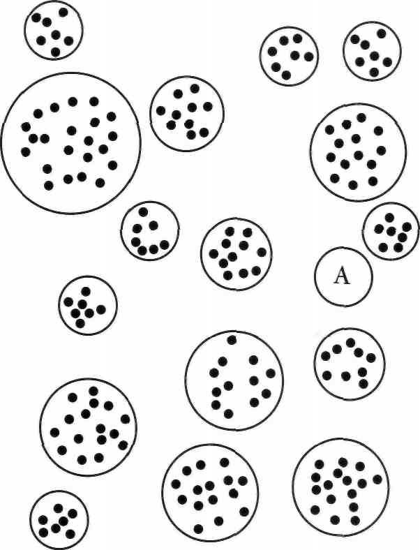
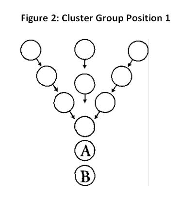
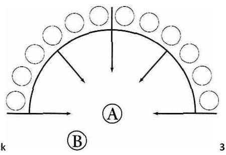
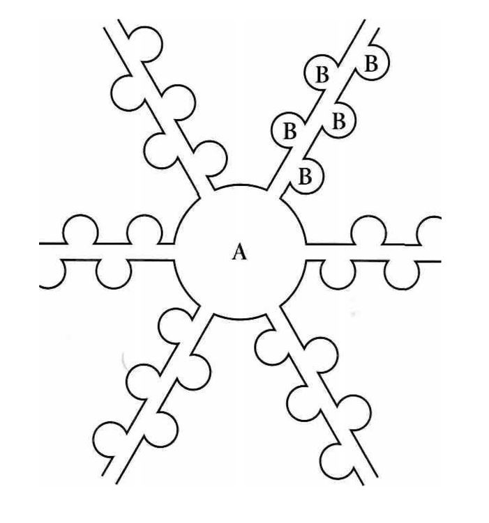
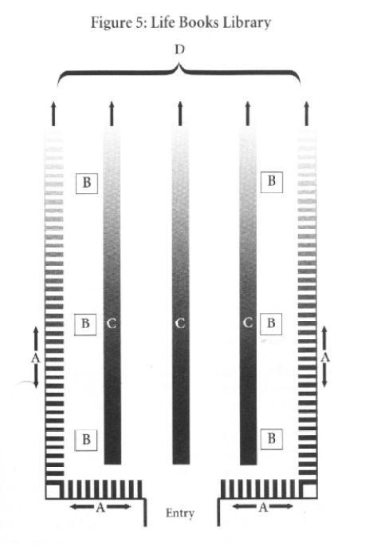
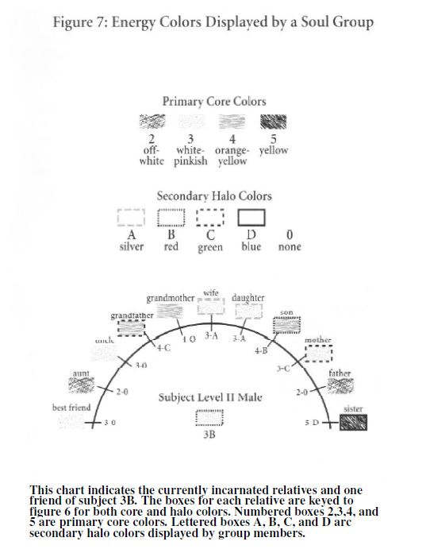
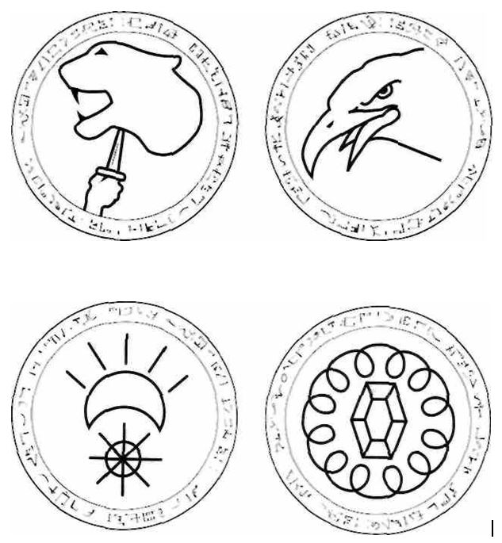
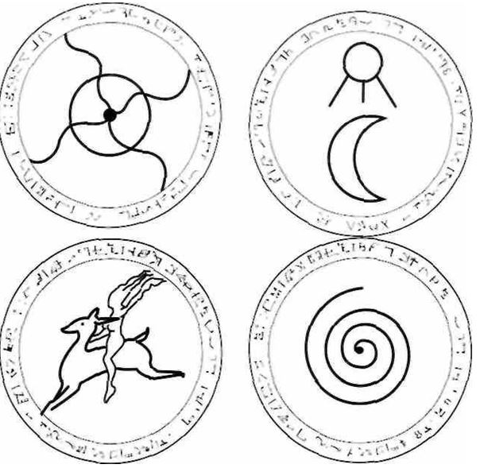

This is part two of a three part HTML version of the book by Michael Newton titled “Destiny of Souls”. The first part can be found HERE.
Destiny of Souls (Part 2 of 3)
Spiritual Energy Restoration
Soul Energy
We cannot define the soul in a physical way because to do so would establish limits on something that seems to have none. I see the soul as intelligent light energy. This energy appears to function as vibrational waves similar to electromagnetic force but without the limitations of charged particles of matter. Soul energy does not appear to be uniform. Like a fingerprint, each soul has a unique identity in its formation, composition and vibrational distribution. I am able to discern soul properties of development by color tones, yet none of this defines what the soul is as an entity.
From years of study on how the soul interacts within a variety of human minds over many incarnations, and what it subsequently does in the spirit world, 1 have come to know something of its yearnings for perfection. This does not tell me what the soul is either. To fully understand soul energy, we would need to know all the aspects of its creation and, indeed, the consciousness of its source. This is a perfection that I cannot know, despite all my efforts investigating the mysteries of life after death.
I am left then with examining the actions of this profound energy substance and how it reacts to people and events and what it is striving to do in both physical and mental environments. If the soul’s existence begins and is molded by pure thought, it is sustained by that thought as an immortal being. The soul’s individual character enables it to influence its physical environment to give greater harmony and balance to life. Souls are an expression of beauty, imagination and creativity. The ancient Egyptians said that to begin to understand the soul, one must listen to the heart. I think they were right.
Standard Treatment at the Gateway
When we cross over and are met by our guides, I find the techniques they use at initial contact fall into two general categories:
- Envelopment. Here returning souls are completely cloaked by a large circular mass of their guide’s powerful energy. As the soul and guide come together, the soul feels as though they both are encased in a bubble. This is the more common method, which my subjects describe as pure ecstasy.
- The Focus Effect. This alternate procedure of initial contact is administered a little differently. As the guide approaches, energy is applied to certain points at the edges of the soul’s etheric body from any direction of the guide’s choosing. We might be taken by the hand or held by the tops of our shoul- ders from a side position. Healing begins from a specific point of the etheric body in the form of a brushing caress followed by deep penetration.
The choice of procedures depends on the preference of the guide and the condition of our soul energy at the time. In both instances there is an immediate infusion of potent, invigorating energy while we are projected forward. This is the introductory phase of the journey to our eventual spiritual destination. The more advanced souls, especially if they are undamaged, usually do not require assistance from a loving energy force.
A review of the techniques employed by case 1 on his wife, Alice, demonstrates elements of both the focus effect and envelopment on a living person by someone who is not yet a guide. Other cases in the last chapter indicate this is one way we begin our training in the use of healing energy before acquiring the status of a guide. During the exhilarating moments after initial contact, our guides might also expertly apply what I call energy penneation. This follow-up effect of energy transference has been described as being similar to the percolating of coffee. In case 8 a soul used an energy filtration process involving smell on her husband, Charles.
Healing emotional and physical injury, both in and out of the spirit world, emanates from a source of goodness. Positive energy flows to every part of the soul’s being from the sender, whose own essence and wisdom is transmitted as well. My subjects are unable to explain the beauty and subtlety of this assimilation except to say it resembles the flowing of rejuvenating electricity.
Emergency Treatment at the Gateway
When souls arrive at the gateway to the spirit world with energy that is in a deteriorated state, some of our guides engage in emergency healing. This is both a physical and mental healing exercise that takes place before the soul moves any further into the spirit world. One of my clients died in an auto accident in his last life where his leg was severed. He told me what occurred at the gateway as a result of this experience:
When I reached the gateway, my guide saw the gaps in my energy aura and proceeded at once to push the damaged energy back into place. He molded it as clay to fill, reshape and smooth out the rough edges and broken intervals to make me whole again.
The etheric, or soul body is an outline of our old physical body which souls take into the spirit world. Essentially, it is an imprint of a human form we have not shed yet, like the skin of a reptile. This is not a permanent condition, although we might naturally create it later as a colorful, luminescent shape of energy. We know damaged body imprints from a past life can influence the current physical form of some people unless properly deprogrammed, so why not the reverse? There are souls who shed their body form completely at the moment of death. However, many souls with physical and emotional scars from life carry the imprint of this damaged energy back home.
In terms of afflictions and soul healing, I learn a lot from the stu- dents as well as the teachers in the spirit world. My next case was a rather unusual one for me where a student guide was unable to handle
damaged energy properly at the gate. My subject in this case had just come off a difficult life after being blown up in an artillery bombard- ment during a battle in World War I.
Case 19
Dr. N: As you pass into the bright light following your death in the mud and rain of this battlefield, what do you see?
S: A figure coming toward me dressed in a white robe. Dr. N: Who is this figure?
S: I see Kate. She is a new teacher, recently assigned to our group.
Dr. N: Describe her appearance and what she is communicating to you as she comes closer.
S: She has a young, rather plain face with a large forehead. Kate radiates peace—I can feel it—but there is a concern too and … (laughs) she won’t come close to me.
Dr. N: Why not?
S: My energy is in bad shape. She says to me, “Zed, you should be healing yourself.”
Dr. N: Why doesn’t she help in this endeavor, Zed?
S: (laughs again loudly) Kate does not want to get near all my scrambled negative energy from the war … and the killing.
Dr. N: I have never heard of a guide shying away from such responsibility with disassembled energy, Zed. Is she afraid of contamination?
S: (still laughing) Something like that. You have to understand Kate is still rather new at this sort of work. She is not happy with herself—I can see that.
Dr. N: Describe what your energy looks like right now.
S: My energy is a mess. It is in chunks … black blocks… irregular … totally skewed out of alignment.
Dr. N: Is this because you didn’t escape from your body fast enough at the moment of death?
S: For sure! My unit was taken by surprise. I normally cut loose (from the body) when I see death coming.
Note: This case and many others have taught me that souls often leave their bodies seconds before a violent death.
Dr. N: Well, can’t Kate lend some assistance in rearranging your energy?
S: She tries … a little . . . I guess it’s too much for her at the moment.
Dr. N: So, what do you do?
S: I begin to take her suggestion and try to help myself. I’m not doing too well, it’s so scrambled. Then a powerful stream of energy hits me like water from a fire hose and it helps me begin to reshape myself and push out some of the negative crap from that battle.
Dr. N: I have heard of a place where energy is showered upon newly returned, damaged souls. Is that where you are now?
S: (laughing) I guess so—it’s from my guide, Bella. I can see him now. He is a real pro at this kind of thing. He is standing behind Kate, helping her.
Dr. N: Then what happens to you?
S: Bella fades away and Kate comes close to me and puts her arms around me and we start to talk as she leads me away.
Dr. N: (deliberately provoking) Do you have any confidence in Kate
after she treated you like some sort of leper?
S: (frowns at me severely) Oh, come on—that’s a mite strong. It won’t be long before she gets the hang of working with this kind of messed-up energy. I like her a lot. She has many gifts … right now, mechanics isn’t one of them.
Recovery Areas for the Less Damaged Soul
Regardless of the specific energy treatment received by the soul at the gateway to the spirit world, most all returning souls will continue on to some sort of healing station before finally joining their groups. All but the most advanced souls crossing back into the spirit world are met by benevolent spirits who make contact with their positive energy and escort needy souls to quiet recovery areas. It is only the more highly- developed souls, with energy patterns that are still strong after their incarnations, who return directly to their regular activities. The more advanced souls appear to get over hardship more quickly than others after a life. One man told me, “Most of the people I work with must stop and rest, but I don’t need anything. I’m in too much of a hurry to get back and continue my program.”
Most recovery areas for the returning soul involve some kind of orientation back to the spirit world. It may be intense or moderate in scope, depending upon the condition of the soul. This usually includes a preliminary debriefing of the life just completed. Much more in-depth counseling will take place later with guides in group conferences and with our Council of Elders. I have written about these orientation procedures in Journey of Souls. The surroundings of recovery areas are identifiable earthly settings created out of our memories and what spiritual guides feel will promote healing. Orientation environments are not the same after each of our lives. One woman had the following to say, after dying in a German concentration camp in 1944:
There are subtle differences in physical layout depending upon the life one has just lived. Because I have just returned from a life filled with horror, cold and bleakness—everything is very bright to lighten my sorrow. There is even a comfortable fire next to me so I'll have the feeling of added warmth and cheerfulness.
Upon returning to the spirit world, often my subjects describe them- selves as being in a garden setting, while others might say they are in a crystalline enclosure. The garden presents a scene of beauty and serenity, but what does crystal represent? It is not just in the orientation rooms that 1 hear about crystals. Crystal caves, for example, appear in the minds of some people who are spending time alone in reflection right after a life is over. Here is a typical statement about a crystal recovery center:
My place of recovery is crystalline in composition because it helps me connect my thoughts. The crystal walls have multicolored stones which reflect prisms of light. The geometric angles of these crystals send out moving bands of light which crisscross around and bring clarity to my thoughts.
After talking to a number of clients out of trance, and with others who are knowledgeable about crystals, I came to realize that crystals represent thought enhancement through a balancing of energy. As a shamanic tool, the crystal is supposed to assist in tuning our vibrational pattern into a universal energy force while releasing negative energy. Bringing forth wisdom from an expanded consciousness through heal- ing is the primary reason for being in a place of spiritual recovery.
The next example involves a garden setting. I had a client who had been working on humility for many lives. In earlier incarnations, usu- ally as a man, this soul had been caught up with host bodies that had become haughty, arrogant and even ruthless during my subject’s occupancy. In a complete turnaround, this person’s last life had been one of acceptance that bordered on passivity. Since this life was so out of character for my client, there was a feeling of failure when this soul reached the recovery area. I was then given this account:
I am in a beautiful circular garden with willow trees and a pond with ducks in it. There is such tranquillity here and this scene softens the feelings of discouragement I have over my last performance. My guide, Makil, brings me to a marble bench under an arbor draped with vines and flowers. I am so down over my wasted life because I over-compensated at every turn—going from one extreme to another. Makil smiles and offers me refreshments. We drink nectar and eat fruit together and watch the ducks. While we do this the aura of my old physical body moves further away from me. I begin to feel as though I am taking in his powerful energy as oxygen after a near drowning.
Makil is a gracious host and he knows I need nourishment because I am judging myself in such a critical manner. I am always harder on myself than he is. We talk about my overcorrections of past mistakes and what I wanted to do that didn't get done—or was only partially completed. Makil offers encouragement that I still learned from this life, which will make the next one better. He explains the important thing was that I was not afraid to change. The whole garden atmosphere is so relaxing. I am already feeling better.
From cases such as this I have learned that our guides use the sense memory we had in our physical bodies to assist in our recovery. There are many ways to achieve this, such as the use of taste memory by Makil in the above case. I have also listened to descriptive scenes involving touch and smell. After receiving streams of bright white “liquid energy,” there have been subjects who describe additional treatments involving the sensations of sound and multicolored lights:
After my cleansing shower, I move to an adjacent room to the place of rebalancing. While I float to the center of this enclosure, I see a vast array of spotlights overhead. 1 hear my name called: "Banyon, are you ready?" When I give my assent, sounds vibrate into me which resonate like tuning forks until the pitch is just right to make my energy bubble—like frothy soapsuds. It feels wonderful. Then the spotlights come on one at a time. In the beginning I am scanned by an intense beam of healing green light. It casts a circle around me as if I were on a stage. This light is designed to pick up my level of displaced energy—to see what I have lost or damaged—and make corrections. I think this is more effective because my energy is bubbling from the sound vibrations. Then I receive a wash of gold light for strength and blue for awareness. Finally, my own pinkish-white color is restored by one of the spotlights. It is soothing and loving and I'm sorry when this is over.
Regenerating Severely Damaged Souls
There are certain displaced souls who have become so contaminated by their host bodies that they require special handling. In life they became destructive to others and themselves. This spectrum of behavior would primarily include souls who have been associated with evil acts that caused harm to other people through deliberate malice. There are souls who slowly become more contaminated from a series of lifetimes, while others are totally overcome by one body alone. In either case these souls are taken to places of isolation where their energy undergoes a more radical treatment plan than with the typical returning soul.
Contamination of the soul can take many forms and involve different grades of severity during an incarnation. A difficult host body might cause the less experienced soul to return with damaged energy where a more advanced being would survive the same situation relatively intact. The average soul’s energy will become shadowed when it has lived within a host body obsessed by constant fear and rage. The question is, by how much?
Our thoughts, feelings, moods and attitudes are mediated by body chemicals which are released through signals of perceived threats and danger from the brain. Fight or flight mechanisms come from our primitive brain, not from the soul. The soul has a great capacity’ to con- trol our biological and emotional reactions to life but many souls are unable to regulate a dysfunctional brain. Souls display these scars when they leave a body that has deteriorated in this fashion.
I have my own theory of madness. The soul comes into the fetus and begins its fusion with the human mind by the time the baby is born. If this child matures into an adult with organic brain syndromes, psychosis, or major affective disorders, abnormal behavior is the result. The struggling soul does not fully assimilate. When this soul can no longer control the aberrant behavior of its body, the two personas begin to separate into a dissociated personality. There may be many physical, emotional and environmental factors that contribute to a person becoming a danger to themselves and others. Here the combined Self has been damaged.
One of the red flags for souls who are losing their capacity to regulate deviant human beings is when they have had a series of lives in bodies demonstrating a lack of intimacy and displaying tendencies toward violence. This has a domino effect with a soul asking for the same sort of body to overcome the last one. Because we have free will, our guides are indulgent. A soul is not excused from responsibility for a disturbed human mind it is unable to regulate because it is a part of that mind. The problem for slow learner souls is they may have had a series of prior life struggles before occupying a body that escalated wrongdoing to a new level of evil.
What happens to these disturbed souls when they return to the spirit world? I will begin with a quote from a client giving me an outsider’s view of a place where severely damaged souls are taken. Some of my subjects call this area the City of Shadows:
It is here where negative energy is erased. Since this is the place where so many souls are concentrated who have negative energy, it is dark to those of us outside. We can't go into this place where souls who have been associated with horror are undergoing alteration. And we would not want to go there anyway. It is a place of healing, but from a distance it has the appearance of a dark sea—while I am looking at it from a bright, sandy beach. All the light around this area is brighter in contrast because positive energy defines the greater goodness of bright light.
When you look at the darkness carefully, you see it is not totally black but a mixture of deep green. We know this is an aspect of the combined forces of the healers working here. We also know that souls who are taken to this area are not exonerated. Eventually, in some way, they must redress the wrongs they perpetrated on others. This they must do to restore full positive energy to themselves.
Subjects who are familiar with damaged souls explain to me that not all of the more terrible memories of bad deeds are erased. It is known that if the soul did not retain some memory of an evil life it would not be accountable. This knowledge by the soul is relevant for future deci- sions. Nevertheless, the resurrection of the soul in the spirit world is merciful. The soul mind does not fully retain all the lurid details of harming others in former host bodies after treatment. If this were not true, the guilt and association with such lives would be so overpowering to the soul they might refuse to reincarnate again to redress these wrongs. These souls would lack the confidence to ever dig themselves out of pits of despair. I understand there are souls whose acts in host bodies were so heinous they are not permitted to return to Earth. Souls are strengthened by regeneration with the expectation they can keep future potentially malevolent bodies in check. Of course, once in our new body, the amnesiac blocks of certain past life mistakes prevent us from being so inhibited we would not progress.
There are differences in the regeneration process between moderately and severely damaged souls. After listening to a number of explanations about kinds of energy treatments, I have come to this conclusion: The more radical approach of energy cleansing is one of remodeling energy while the less drastic method is reshaping. This is an oversimplification because there is much I don’t know about these esoteric techniques. The fine art of energy reconstruction is handled by nonreincarnating masters who are not in my office answering questions.
I work with the trainees. Case 20 will provide some insight into the mechanics of energy reshaping while case 21 will address remodeling.
Case 20
My subject in this case is a practitioner of chiropractic and homeopathic medicine who currently specializes in repolarizing the out-of- balance energy patterns of patients. This client has been a healer for thousands of years on Earth and is called Selim in the spirit world.
Dr. N: Selim, you have told me about your advanced healing group in the spirit world and how the five of you are in specific energy training. I would like to know more about your work. Would you begin by telling me what your advanced study group is called and what you do?
S: We are in training to be regenerators. We work to reshape … to reorganize … displaced energy in the place of the holding ground.
Dr. N: Is this place a designated area for souls whose energy has been disrupted?
S: Yes, the ones in bad condition. Those who will not be returning to their groups right away. They will stay in the holding ground.
Dr. N: Do you make this determination at the gateway to the spirit world?
S: No, I do not. I have not yet reached that status. This decision is made by their guides, who will call upon the masters who are training me.
Dr. N: Then tell me, Selim, when do you enter the picture after a severely damaged soul crosses back to the spirit world?
S: I am called by my instructor when it is felt I can assist in this energy healing. Then I move to the holding ground.
Dr. N: Please explain to me why you use the term “holding ground” and what this place is like.
S: The damaged soul is held here until their regeneration is complete so they are healthy again. This sphere is designed … as a beehive structure … covered with cells. Each soul has its own place to reside during the healing.
Dr. N: This sounds very much like the descriptions I have heard about the incubation of new souls after their creation and before they are assigned to groups.
S: That’s true … these are spaces where energy is nurtured.
Dr. N: So, are these beehive spaces all in the same place and used lor the same purpose—both for regeneration and creation?
S: No, they are not. I work in the place of damaged souls. Newly created souls are not damaged. I can tell you nothing about those places.
Dr. N: That’s fine, Selim, I appreciate learning about those areas where you do have knowledge and experience. Why do you think you were assigned this sort of work?
S: (with pride) Because of my long history in so many lives of working with wounded people. When I asked if I could specialize as a regenerator, my wish was granted and I was assigned to a training class.
Dr. N: And so when a severely wounded soul is returned to the holding ground, are you a soul who could be called to assist?
S: (shakes his head negatively) Not necessarily. I am only requested to go to the regeneration areas to work with energy that has been moderately damaged. I am a beginner. There is so much I don’t know.
Dr. N: Well, I have a great deal of respect for what you do know, Selim.
Before I ask you about your level of work, can you explain why a damaged soul would be sent to the holding ground?
S: They were overcome by their last body. Many are souls who have been repeatedly suppressed in previous lives as well. These are the ones who become stuck in life after life making no progress. Each body has contaminated them a little more. I work with these souls more than the ones who have had terrible energy damage, either from one life or many lives.
Dr. N: Do the souls whose energy has been gradually depleted ask for help, or are they forced to come to the holding ground?
S: (promptly) No one is forced. They cry for help because they have become totally ineffectual, repeating the same mistakes over and over again. Their teachers see they do not recover sufficiently between lives. They want regeneration.
Dr. N: Does the same cry for help come from souls who have been severely damaged?
S: (pause) Perhaps less so. It is possible that a life is so destructive it has damaged the … identity of the soul.
Dr. N: Such as being involved with cruel acts of violence? S: That would be one reason, yes.
Dr. N: Selim, please give me as many details as you can about what happens when you are called to the holding ground to work on a case with severely depleted or altered energy
S: Before meeting the new arrival one of the Restoration Masters outlines the meridians of energy we will be regenerating. We review what is known about the damaged soul.
Dr. N: This sounds like you are surgeons preparing for a procedure with x-rays before the operation.
S: (with delight) Yes, this gives me an idea of what to expect in three- dimensional imagery. I love the challenges involved with energy repair.
Dr. N: Okay, take me through this process.
S: From my perspective there are three steps. We begin by examining all particles of damaged energy. Then these dark areas of blockage are removed and what is left—the voids—are rewoven with an infusion of new purified light energy. It is overlaid and melded into the repaired energy for strengthening.
Dr. N: And does reweaving energy mean reshaping to you, as opposed to something even more radical?
S: Yes.
Dr. N: Are you personally involved with all phases of this operation?
S: No, I am being trained in the first step of assessment and can assist a little with the second step—where the modifications are not as complex.
Dr. N: Before you actually begin to work, what do you see when a soul’s energy has been severely damaged?
S: Damaged energy looks like a cooked egg where the white light has solidified and hardened. We must soften this and fill the black voids.
Dr. N: Let’s talk a moment about this blackened energy…
S: (interrupts) I should have added that the damaged energy can also create … lesions. These fissures are voids themselves, caused by radical physical or emotional damage.
Dr. N: What are the effects of disrupted energy on the incarnated soul? S: (pause) Where the energy is mottled—not distributed evenly—this is due to long-term energy deterioration.
Dr. N: You talked about rearranging and repairing old energy with new purified energy for healing. How is this done?
S: By intense charge beams. It is delicate work because you must keep your own vibrational tuning … in matched sequences with that generated by the soul.
Dr. N: Oh, so this becomes personal. A master’s own energy is used as a conduit?
S: Yes, but there are other sources of new purified energy that I don’t use or know much about because of my lack of experience. Dr. N: Selim, you have told me how warped energy is softened and allowed to flow back onto the right spaces, but introducing new purified energy concerns me. With all that reconfiguration aren’t you changing the immortal identity of these souls?
S: No, we have … altered . . . to strengthen what is there … to bring the soul close to its original form. We don’t want this to happen again. We don’t want them back.
Dr. N: Is there some way you can test your repair work after it is completed?
S: Yes, we can place a field of simulated negative energy around the regenerated soul—as a liquid—to see if this can filter through the structure of our repairs. As I said, we don’t want them back. Dr. N: One last question, Selim. When you are finished, what happens to the regenerated soul?
S: It varies. All of them stay with us a while … there is healing with sound … vibrational music … light… color. And when these souls are released, much care is taken with their next incarna- tions and the selections of bodies, (sighs) If the soul has been in a body that damaged others in former lives… well… we have fortified these souls to go back and begin again.
My next case is an example of severe remodeling. Case 21 involves a particular class of soul 1 call the hybrid soul. In chapter 8, case 61 is another representative of this type of soul. I believe the hybrid souls are especially prone to self-destruction on Earth because they have incarnated on alien worlds before coming here fairly recently. There are hybrid souls who have great difficulty adapting to our planet. If I find this to be true, it is probable their first incarnation here was within the last few thousand years. The others have already adapted or left Earth for good. Less than a quarter of all my clients are able to recall memories of visiting other worlds between lives. This activity by itself does not make them hybrids. An even smaller percentage of my cases have memories of actually incarnating on alien worlds before they came to Earth. These are the hybrid souls.
The hybrid is usually an older soul who, for a number of reasons, has decided to complete their physical lives on our planet. Their old worlds may no longer be habitable or they may have lived on a gentle world where life was just too easy and they want a difficult challenge with a world like Earth that has not yet reached its potential. Regardless of the circumstances for a soul leaving a world, I have found these former incarnations typically involve life forms which were slightly above, about equal, or slightly below the intelligence capabilities of the human brain. This is by design. Hybrid souls who have formally incarnated on planets with civilizations possessing a much higher technology than Earth, such as those with space travel abilities, are smarter because they are an older race. Also, I have noticed that when I do have a hybrid soul as a client with former experience on a telepathic world, they tend to have greater psychic abilities than normal.
Sometimes a hybrid client will confuse their early incarnations on other physical worlds with being on Earth until we sort out that their first world only resembled a place on Earth. Visions of once living on the island nation of Atlantis is a good example. Without discounting the possibility that Atlantis once existed on Earth thousands of years ago, I believe the source of many earthly myths come from our soul memories of former existences on other worlds.
I think hybrid soul is an appropriate term for those souls among us of mixed incarnation origins. Such souls have developed from being in hosts that are genetically different than humans. I have seen gifted people in this life who started their development on another world. Nevertheless, there is a dark side to this experience, as a level V subject in training to be a Restoration Master will explain.
Case 21
Dr. N: Since you work with the severely damaged souls, can you give me a little more information about your duties?
S: I’m in a special section working with those souls who have become lost in a morass of evil.
Dr. N: (after learning this subject works only with those souls from Earth who have incarnated on other worlds before they came to Earth) In this section, are these the hybrid souls I have heard about?
S: Yes, in a restoration area where we deal with those who have become atrocity souls.
Dr. N: What a terrible name to call a soul!
S: I’m sorry you are bothered by this, but what else would you call a being associated with acts of evil that are so serious they are unsalvageable in their present state?
Dr. N: I know, but the human body had a lot to do with … S: (cutting me off) We don’t consider that to be an excuse.
Dr. N: Okay, then please continue with the nature of your work. S: I am a second-stage restorer.
Dr. N: What does that mean?
S: When these souls lose their bodies, they are met by their guides and perhaps one close friend. That first stage does not last long and then the souls who have been involved with horrible acts are brought here to us.
Dr. N: Why doesn’t the first stage last as long as with other souls?
S: We don’t want them to begin to forget the impact of their deeds—the harm and pain they caused on Earth. The second stage separates them from the uncontaminated souls.
Dr. N: This sounds like you are running a leper colony. S: (abruptly) I am not amused by that remark.
Dr. N: (after apologizing) You are not saying that all souls who commit evil acts are hybrid souls, as you define them?
S: Of course not, that’s my section. But you should understand some real monsters on Earth are hybrids.
Dr. N: I thought the spirit world was a place of order with masters of superior knowledge. If these hybrid souls are contaminated abnormalities in human form—souls with the inability to adjust to the emotional makeup of the human body—why were they sent here? This indicates to me the spirit world is not infallible.
S: A vast majority are fine, and they make great contributions to human society. You would have us deny all souls the opportunity to come to Earth because some turn out badly?
Dr. N: No, of course not. Let’s move on. What do you do with these souls?
S: Others, way above me, examine their contaminated energy in light of just how the world of their earlier experience impacted on their human body. They want to know if this was an isolated case, or if other souls from that planet have had problems on Earth. If that is true, other souls from that world might not be permitted to come to Earth again.
Dr. N: Please tell me more about your section.
S: My area is not devoted to souls who have committed one serious act of wrongdoing. We work with habitually cruel life styles. These souls are then given a choice. We will do our best to clean up their energy by rehabilitation and if we think they are salvageable, they are offered a choice to come back to Earth in roles where they will receive the same type of pain they caused, only multiplied.
Dr. N: Could a salvageable soul be one who committed terrible atrocities in life but showed great remorse?
S: Probably.
Dr. N: I thought karmic justice was not punitive?
S: It’s not. The offer represents an opportunity for stabilization and redemption. It usually will take more than one life to endure an equal measure of the same kind of pain they caused to many people. That’s why I said multiplied.
Dr. N: Even so, I suppose most souls take this option?
S: You are mistaken. Most are too fearful that they will fall again into the same patterns. They also lack the courage to be victims in a number of future lives.
Dr. N: If they won’t come back to Earth, then what do you do?
S: These souls will then go the way of those souls we consider to be unsalvageable. We will then disseminate their energy.
Dr. N: Is this a form of remodeling energy—or what?
S: Ah … yes … we call it the breaking up of energy—that’s what dissemination means. Certainly, it is remodeled. We break up their energy into particles.
Dr. N: I thought energy could not be destroyed. Aren’t you destroying the identity of these contaminated souls?
S: The energy is not destroyed, it is changed and converted. We might mix one particle of the old energy with nine particles of new fresh energy provided for our use. The dilution will make that which is contaminated ineffectual, but a small part of the original identity remains intact.
Dr. N: So, the negative badness energy is mixed with overdoses of new goodness energy to render the contaminated soul harmless?
S: (laughs) Not necessarily goodness but rather freshness.
Dr. N: Why would any soul resist dissemination?
S: Even though those souls who accept these procedures for their own benefit recover and eventually lead productive lives on Earth and elsewhere … there are souls who will not stand for any loss of identity.
Dr. N: Then what happens to these souls who refuse your help?
S: Many will just go into limbo, to a place of solitude. I don’t know what will eventually happen to them.
As I have said before, soul contamination does not only come from the physical body. Certainly, the energy damage described in the last two cases indicates that souls themselves are impure beings who also contribute to their own distress.
Before continuing, I want to make a statement about karmic choices here that is important for all of us to keep in mind. When we see people who are victims of great adversity in life, this does not necessarily mean they were perpetrators of evil or wrongdoing of any kind in a former life. A soul with no such past associations might choose to suffer through a particular aspect of emotional pain to learn greater com- passion and empathy for others by volunteering in advance for a life of travail.
There are cases when a soul’s energy damage is moderate, requiring special attention, but not to the degree where a Restoration Master is needed. The following quote is a report from a client about a gifted healing soul who works at a recovery station. I think of her as a combat nurse managing a field hospital and my client agrees:
Oh, it's Numi—I'm so glad. I haven't seen her in about three or four lives, but her deprogramming and restoration energy techniques are just superlative. There are five others being attended to in this place whom I don't know. Numi comes over and clasps me to her. She gets inside me and blends my tired energy with her own. I feel the infusion of her stimulating vibrations and she performs a tiny bit of reshaping. It is as if I am receiving a gentle reaffirmation of that which created my own energy. Soon, I am ready to leave and Numi gives me a beautiful smile goodbye till next time.
Souls of Solitude
In the last chapter I explained how certain dysfunctional souls who have just experienced physical death leave their bodies and go into seclusion for a time. They are not ghosts but they don’t accept death and they don’t want to go home. The low percentage of souls in my practice within this category are at an impasse with themselves. Their major symptom is one of avoidance. Eventually, they are coaxed by empathetic guides to return to the heart of the spirit world. I called them the souls of silence. I also mentioned that it is considered a part of normal activity for healthy souls in the spirit world to engage in periods of quiet time away from others. Besides reflecting upon their goals, souls may use this interval to reach out and touch people they left behind on Earth.
However, there is another category of silent soul whom I see as a soul in solitude as opposed to a soul in seclusion. It may seem as if I am splitting hairs here, but there are major differences. Souls who wish solitude are healthy souls who have been through the recovery process and yet they still strongly feel the effects of negative energy contamination. Here is a case in point:
After every life, I go to a place of sanctuary for quiet reflection. I review what I want to save and integrate from the last body and what should be discarded. Right now, I am saving courage and getting rid of my inability to sustain personal commitment. For me, this is a place of sorting. What I decide to keep becomes part of my character. The rest is thrown off.
Only a certain type of soul engages in this activity for a prolonged period. Often, they are more advanced souls who are more reflective if they are alone. This type of soul might be a natural leader who is drained of energy by defending other people. One such soul of this class is Achem, who is a soul devoted to causes for the betterment of others, often at his own expense.
Case 22
In this subject’s past life he fought against the final subjugation of Morocco by the French military and was captured in 1934. As a resistance fighter, my client was taken from the Atlas Mountains into the Sahara Desert and tortured for information he did not give. After being staked to the ground, he was left to die a slow death in the hot sun.
Dr. N: Achem, please explain to me why you require such a long period of solitude after your life in Morocco?
S: I am a protector soul and my energy has still not recovered from the effects of this life.
Dr. N: What is a protector soul?
S: We try to protect those people whose innate goodness and intense desire to better the lives of large numbers of people on Earth must be preserved.
Dr. N: Who did you protect in Morocco?
S: The leader of the resistance movement against French coloniza- tion. He was more effective in helping our people fight for free- dom because of my years of sacrifice.
Dr. N: This sounds demanding. Do you usually work with political and social movements in your lives?
S: Yes, and in war. We are warriors for good causes.
Dr. N: What attributes do protector souls have as a group?
S: We are noted for our enduring perseverance and calmness under fire while assisting others who are worthy.
Dr. N: If you challenge those who would seek to harm the people you want to protect, who decides if they are worthy? It seems to mc this is a very subjective thing.
S: True, and this is why we spend time analyzing in advance where we can best be utilized to help people. Our work can be offensive or defensive in nature but we do not engage in any aggressive action lacking principle.
Dr. N: All right, let’s talk about your energy drain after these endeavors. Why hasn’t the shower of healing or some other restoration center returned you to normal?
S: (laughs) You call it a shower, I call this the car wash! It’s an undulating tube which rubs you all over with positive energy, like the brushes of a car wash. I just took a few of my young students through it from the last life and they feel great.
Dr. N: So why didn’t the car wash help you?
S: (more serious) It was not nearly enough, although the negative impurities are essentially gone. No, the core of my being has been affected by the cruelty of that life and the torture I endured.
Dr. N: What do you do?
S: I send the students away and go to the place of sanctuary where I can fully connect with myself.
Dr. N: Please tell me all you can about this place and what you do there.
S: It is a darkened enclosure—some call it a slumber chamber— where there are others resting but we do not really see each other. I sense there are about twenty of us now. We feel so washed out we have no desire to relate to anyone for a while. The Keepers attend to us.
Dr. N: Keepers? Who are they?
S: The Keepers of Neutrality are skilled at noninterference. Their talent lies in ministering to us with absolutely no intervention into our thoughts. They are the custodians of the slumber chambers.
Note: Apparently, the Keepers of Neutrality are a subspecialty within the ranks of Restoration Masters. They have other names but neutrality means they facilitate healing indirectly without any communication. My clients say these beings are devoted to absolute quietude for souls in their care.
Dr. N: What do these passive custodians look like?
S: (tersely) They are not passive. The picture I can give you is one of monks moving about a sanctuary. The Keepers have cloaks and a hood over their faces so they present no identity to us. Their thoughts are closed, but they are very watchful.
Dr. N: So they simply watch over you while you rest?
S: No, no—you still don’t understand. They possess great skill in ministering to us. Their concern is the proper regulation and
infusion of the energy which we have stored in the spirit world before going into a physical life.
Dr. N: I have heard a great deal about this attribute of the soul to divide itself. Why can’t you just go to your own spiritual area and take the rest of your energy and meld with it? Or why not have a team of Restoration Masters regenerate your contaminated energy?
S: (takes a deep breath) I’ll try to explain it. For us, all that is unnecessary. It is the effects of the impurities which we want healed by a slow, even return of our own purified, rested energy. The Keepers assist us in the restoring of our own energy.
Dr. N: Rather like getting a blood transfusion from your own blood bank?
S: Yes, exactly, now you are beginning to comprehend. We don’t want it in a rush. We don’t need major restoration either. We receive slow energy infusions of our own energy over a prolonged period for greater… elasticity. We want the strength we had before a rough life—and more—from having gone through the physical experience.
Dr. N: What’s a prolonged period of time in Earth years for your recovery in this sanctuary?
S: Oh, that’s hard to say… 25 to 50 years … we would always like it to be longer because the Keepers use their own vibrational frequencies to … massage our energy—which is fantastic. They are very private beings though, who don’t want to be seen or spoken to, but they know we are grateful for their care. They also know when it is time for us to rejoin our friends and get back to work, (laughs) Then we are pushed out.
It was from cases such as these that I learned one of the best ways to repair damaged energy is to receive it back slowly. Many souls of soli- tude are quite advanced and don’t require restoration in the normal recovery areas. These vigorous souls can be too overconfident. Achem admitted that he only took about 50 percent of his energy to Morocco and should have “charged up” more before departing into that life.
The next section will address planetary healers who work in physical environments. Since these souls are generally still incarnating, my subjects do not consider them as masters. This would include the trans- former souls mentioned in the next case. Planetary work is where our exposure to many specialties begins and is a basic training ground for developing souls.
Energy Healing on Earth
Healers of the Human Body
When I learned about souls who were specializing in restoring damaged energy in the spirit world, I was curious how these souls might apply their unconscious spiritual knowledge when they were working in physical form. Some place great emphasis on this aspect of their skill development to help human beings. My next case is a woman who works with many energy modalities, including reiki. However, until our hypnosis session, she had little idea of the source of her spiritual power to heal. Her spiritual name is Puruian and during our time together she explained how and why energy adjustments are necessary for incarnates as well as discarnates.
Case 23
Dr. N: Puruian, I would like to know if your spiritual training in soul restoration is used by you in your earthly assignments?
S: (subject evidenced some surprise as this information began to unfold in her mind after my question) Why … yes… I didn’t realize how much until now … only those of us who want to continue working in this way on Earth are called transformers.
Dr. N: What is the difference? How would you define a trans- former?
S: (laughs in recognition) As transformers we do repair jobs on Earth—we are the cleanup crew—transforming bodies to good health. There are people on Earth who have gray spots of energy which cause them to get stuck. You see it when they make the same mistakes over and over in life. My job is to incarnate, find them and try and remove these blocks so they make better decisions and gain confidence and self-value. We transform them to be more productive people.
Dr. N: Puruian, I would like to clarify the differences in spiritual training, if any, between restoring souls in the spirit world and transforming energy on a physical world?
S: (long pause) Some parts of our training are the same but… transformers are sent to other worlds between lives to study— those of us who like working with physical forms.
Dr. N: Describe the last training you had as a transformer before you came back to Earth.
S: (struck by my question, there is a dreamy response) Oh … two light beings came from another dimension to work with the six of us. (Puruian’s independent study group) They showed us how… to keep our vibrational energy into a tight, beamed focus—not scattered. I learned to pinpoint my energy to be more effective.
Dr. N: Were these beings from a physical world?
S: (in a soft tone) More like a gas sphere where their intelligence exists in … bubbles… but they were so good. We learned … oh … we learned …
Dr. N: (gently) I’m sure … Let’s return to the practical use of what you learned now that you are more aware of the origins of your skills. Tell me how you apply this spiritual knowledge in your energy work today as a transformer soul on Earth?
S: (a look of wonder) It’s … there now… in my mind … I see why it works … (stops)… the focused beam …
Dr. N: (pressing) The focused beam … ?
S: (earnestly) We use it as a laser—rather like a dentist would drill out a decayed tooth—to pinpoint and clean up gray energy. This is the fast
way. It is harder for me to use a slow procedure which is longer lasting and even more effective.
Dr. N: Okay, Puruian, remember you are explaining to me how you use your spiritual training and earthly training in combination to heal energy. You have the memory right now of both aspects. Tell me about the slow method.
S: (takes a deep breath) 1 close my eyes and kind of go into a semi- trance when I cup my hands near my patient’s head. I see now thai whal I have learned in the spirit world helps me more than what I learned in my classes down here. I guess that doesn’t matter, really.
Dr. N: We receive power to help others from many sources. Please go on about your healing by the slow method with your patients on Earth.
S: Well, I work with geometric shapes, such as spirals of energy, forming them in my mind to match the configuration of the particular trouble spot. Then I lay these energy structures around the gray areas. This sets up the areas to be repaired with my slow healing vibrations, like placing a hot pad on a sore muscle, (pause) You see, these souls were damaged on the way in and this … infirmity … only grows worse as the body develops on Earth.
Dr. N: (surprised) Back up a minute. What do you mean, “damaged on the way in”? I thought your work on Earth mostly involved contaminated energy from life’s trials?
S: That’s only part of the problem. When souls enter the human body on Earth they come into dense matter. Their host bodies, after all, contain primitive animal energy which is thick. The soul has a natural sort of pure, refined energy which does not easily blend with some human hosts. It takes experience to get used to all this. The younger souls especially can be damaged. They get knocked off their tracks early on and are … twisted.
Dr. N: And you might project different energy configurations with different people who are your patients.
S: Uh-huh, that is the job of the transformer. Their damaged energy lines are so … squiggly … they must be rearranged to remove the toxic energy. These muddled souls are so unbalanced that a lot of our work must be directed at all the cells of the body where negative energy is trapping the free flow of the positive. When this is performed properly the soul is more fully engaged with the human brain.
Dr. N: This sounds very worthwhile, indeed.
S: It is gratifying although I still have a lot to learn, (laughs) We call ourselves psychic sponges for refined energy.
It is not surprising that case 25 uses reiki in her work on Earth. Reiki is an ancient art of healing by the hands. After evaluating and working on damaged energy, practitioners of this art close gaps in the human energy field with body alignments to bring symmetry. There are theo- ries that damaged energy’, physical or mental, in the human body causes gaps in our auras through which a demonic negative force can enter. This is another of those fear-based myths that receives undeserved attention. I have been told by restoration specialists that this does not happen because there is no outside force of evil trying to take over your body. However, negative energy blockages in our energy field do cause a reduction in functional capacity.
I am also disturbed by scientific articles debunking energy work with the hands, such as therapeutic touch, because I have seen the power of this kind of healing with the sick. It is often freely given by certain nurses in hospital settings out of a genuine concern to nurture and heal. Our bodies are composed of an energy field of particles that appears solid but is fluid and acts as a vibrational conductor. One of my transformer souls had this to say about her therapeutic touch methods:
The secret to healing is removing my conscious self so as to avoid inhibiting the free flow of energy between us. My objective is to merge with the energy flow of the patient to bring out the highest good in that body. This is done with love as well as technique.
If the receiving party is resistant and inhibits the free-flowing passageways of chi, or life force, through their own mental negativism, they are perfectly capable of blocking the detection of their energy field by a healer. As we begin a new millennium, more people are becoming aware of the healing properties of meditation and guided imagery to build energy within themselves. There are many ways to reach the center of our inner wisdom by tapping into a higher energy source. Massage, yoga, acupuncture and biomagnetic healing are some of the techniques available to help balance our chi.
Body energy and soul energy are adversely affected by vibrational resonances not in harmony with each other. Each person has their own fingerprint of natural rhythm. Body and soul must smoothly coexist for humans to be productive. If we take a holistic approach to body health, our creative self is better able to function with the human brain. Being in harmony with our outer and inner self positions us to more energetically engage in physical, spiritual and environmental interrelationships.
Healers of the Environment
Before my research into the spirit world, I had no idea of the special gifts of environmental healers on our planet. I have learned the Earth itself has its own vibrational rate and there are people capable of tuning into this ecological energy. One of the cases that opened my eyes was a woman who works for the Forest Service in the Pacific Northwest. In her letter requesting a session, she explained:
In the last few years I have felt a tingling, sparking sensa- tion in my hands whenever I am around heavy vegetation. It is not painful, but there is an urgency for something to be released during my work in the forests. Lately, I have dreams about lightning going out of my hands and my wanting to pull it back into a bottle to save it. These dreams seem to fulfill a need inside me and upon awakening I feel happy. Am I going crazy?
I am drawn to people who think they are going crazy because of unexplained phenomena in their lives. 1 know what this feels like per- sonally. Many of my old, traditional colleagues are convinced I have lost my marbles. Therefore, I was glad to take this woman as a client after she agreed to see a physician to make sure there was nothing causing neurological problems with her hands. I will pick up the dialogue of this case at the point where we are discussing her participation in an advanced independent studies group in the spirit world.
Case 24
Dr. N: Why did the five of you come together in this study group?
S: Because we work with energy the same way. It helps raise our consciousness—our abilities—when we are together
Dr. N: Please explain this to me.
S: Well, our situation right now is that individually we cannot sustain an energy flow of sufficient quality to last very long and have the necessary effect.
Dr. N: So you accomplish what you wish to do collectively?
S: Yes, to some degree. That’s why we enjoy working together so we can throw energy out in unison and bottle it up in concentrated reserves. Working alone our energy is not as potent, not as refined—it goes in all directions.
Dr. N: Is this why you are having these dreams and feeling these hand sensations right now in your life?
S: (reflects) Yes, I see that it is a message for me. I must alter my life to include more energy work.
Dr. N: You mean to store and use energy to heal people?
S: (quickly responds to my wrong assumption) No, my study group works with energy differently. We are healers of plants, trees and the land. That is why we pick lives as caretakers of the environment.
Dr. N: Did you choose your current vocation for a specific reason related to your skills?
S:Yes.
Dr. N: How about other members of your spirit world study group? S: (with a big grin) Two of them work with me in the forest service. Dr. N: I would think as planetary healers you and your friends have
your work cut out for you with all the environmental destruction
going on around Earth.
S: (sadly) It’s terrible and we are so needed here.
Dr. N: Tell me, have you and the members of your study group been involved with using energy environmentally in many past lives on Earth?
S: Oh, yes … for a long time.
Dr. N: Give me an example.
S: In my last life I was an Algonquian Indian with the name of Singing Tree. My job was to insure our land would continue to supply us with food. I used to stand out in the forest for hours and hold out my hands. The tribe thought 1 was talking to the trees and the soil but actually I was exchanging energy with the land.
It’s an extension of mind and body with some help from our guides.
Dr. N: And how about today?
S: (pause) When you create and support beauty and growth from the land, you also give power to others who live here. From your hands you provide a means by which others arc motivated with the beauty of what they see around them, as well as receiving sustenance from the environment.
Sometimes I receive letters years later from clients who want to say they finally reached their goals in life. A person with environmental healing talents might write me to announce they have become a land- scape architect, opened a garden nursery, or joined a protest group to stop the logging of old redwood trees. I enjoy these aspects of career counseling in my work that begin with the question, “Why am I here?” When I became involved with delving into the mysteries of the spirit world, I thought people would mostly want to know about their spirit guides and soulmates. Instead, I found their primary interest was their purpose in life.
Before leaving the subject of our environment on Earth, and the manner in which people are able to tune into the energy vibrations of this planet, I should say a word about sacred sites. A number of researchers have reported on the fact that there are places in the world which give off intense pulses of magnetic energy. In the last chapter I spoke about vibrational energy layers which vary in density around the Earth. Some sacred sites on Earth are well-known to the public, such as the places of stone in Sedona, Arizona; Machu Picchu in Peru; and Ayers Rock in Australia, to name a few. People standing in these places feel a heightened awareness and physical well-being.
Planetary magnetic fields do affect our physical and spiritual con- sciousness, and I find a curious similarity here with descriptions about the spirit world. My clients say the home ground of their cluster group is “a space within a space” whose non-solid boundaries have a specific vibrational concentration of energy generated by that particular group. Perhaps certain human habitations on Earth, considered to be sacred by the ancients, contain vortexes of energy concentrations caused by what are called natural “ley lines.” The places where these magnetic gridlines converge are said to enhance unconscious thought and make it easier to open our mental passages into spiritual realms. Knowledge of vortex locations are very useful to planetary healers. In chapter 8, under the section of soul explorers in other worlds, I will touch again on planetary vibrational grid patterns which affect intelligent life away from Earth. Soul Division and Reunification
The capacity for souls to divide their energy essence influences many aspects of soul life. Perhaps soul extension would be a more accurate term than soul division. As I reported in the section under ghosts, all souls who come to Earth leave a part of their energy behind in the spirit world, even those living parallel lives in more than one body. The percentages of energy souls leave behind may vary but each particle of light is an exact duplicate of every other Self and replicates the whole identity. This phenomenon is analogous to the way light images are split and duplicated in a hologram. Yet there are differences with a hologram. If only a small percentage of a soul’s energy is left behind in the spirit world, that particle of Self is more dormant because it is less concentrated. However, because this energy remains in a pure, uncontaminated state, it is still potent.
When I made the discovery of our energy reserve in the spirit world, so much fell into place for me. The grandeur of this system of soul duality impacts many spiritual aspects of our life. For example, if someone you loved died thirty years ahead of you and has since reincarnated, you can still sec them again upon your own return to the spirit world.
The ability of a soul to unite with itself is a natural process of energy regeneration after physical death. A client emphatically told me, “If we were to bring 100 percent of our energy into one body during an incar- nation, we would blow the circuits of the brain.” A full charge of all a soul’s energy into one human body would totally subjugate the brain to the soul’s power. Apparently, this could happen with even the less potent, undeveloped souls. I suppose this factor of soul occupation in a host body was evaluated in the early stages of human evolution by those spiritual grandmasters who chose Earth as a planetary school.
Moreover, having all the soul’s energy capacity in one body would negate the whole process of growth for the soul on Earth because it would have no challenge coping with the brain. By strengthening a variety of parts of a soul’s total energy in different incarnations, the whole is made stronger. Full awareness at 100 percent would have another adverse effect. If we did not divide our energy, we would experience a higher level of spiritual memory retention in each human body. Amnesia forces us to go into the testing area of the laboratory of Earth without the answers for the tasks we were sent here to accomplish. Amnesia also relieves us of the baggage for past failures so we may use new approaches with more confidence.
The ghost in case 15 indicated how it is possible for souls to miscalculate the percentage of energy concentration they bring into a life. One client called this “our light quotient.” In a strange fashion, I find my level IV and V subjects shortchange themselves more than the less developed souls. This was demonstrated by the warrior soul in case 22. Typically, a highly advanced soul will bring no more than 25 percent of its total capacity to Earth where the average, less confident soul has 50- 70 percent. The energy of a more evolved soul is refined, elastic and vigorous in smaller quantities. This is why the younger soul must bring more energy into their early incarnations. Thus, it is not the volume of energy which gives potency to the soul but the quality of vibrational power representing a soul’s experience and wisdom.
How does this information help us understand the combined force of soul and human energy? Every soul has a specific energy field pattern which reflects an immortal blueprint of its character, regardless of the number of divided parts. When this spiritual ego is combined with a more structured personality of a physical brain, a higher density field is produced. The subtleties of this symbiosis are so intricate I have only scratched the surface. Both blueprints of energy react to each other in an infinite number of ways to become one to the outside world. This is why our physical well-being, senses and emotions are so tied to the spiritual mind. Thought is closely associated with how these energy patterns are shaped and melded together and each nourishes the other in our bodies.
I frequently use the analogy of a hologram to describe soul division. Holographic images are exact duplicates. This analogy is helpful but it does not tell the whole story. I have mentioned one variable in the process of soul division as involving the potency of energy concentration in each divided part. This element relates to the experience of the soul. Another variable is the density of material energy in each human body and the emotional makeup which drives that body. If the same soul joins two bodies at the same time and brings 40 percent of its energy into each body, there will be different manifestations of energy.
Think of taking a photograph of the same scene in the morning, at noon and in the evening. The changes in light refraction would create a different effect on the film. The energy of souls begins with a specific pattern but once on Earth these patterns are changed by local conditions. When we review our future life from the spirit world we are given advice about the energy requirements of the body we will occupy. The decision of how much energy we should take is ours. Many souls want to leave as much behind as possible because they love their home and the activities going on there.
Emotional and physical trauma drains our energy reserves. We can lose shards of positive energy to people whom we give it to voluntarily, or by others who drain it out of us with their negativity. It takes energy to erect and maintain defense mechanisms to protect ourselves. A sub- ject once said to me, “When I share my light with those I think worthy of receiving it, I can recharge it faster because it was given freely”
One of the best ways we revitalize our energy is through sleep. Once again, we can further divide the energy we brought with us and roam freely while leaving a small percentage behind to alert the larger portion to return quickly if needed. As 1 mentioned earlier, this capacity is especially useful when the body is in a state of illness, unconsciousness, or in a coma. Since time is not a limiting factor for a freed soul, hours, days, or weeks away from the body are all rejuvenating. I might add that souls can also be recharged by loving spirits during a crisis. We interpret these energy boosts as profound revelations. A few hours’ rest from the human body can do wonders for a soul as long as the remaining portion left behind is on cruise control and not coping with a complex dream analysis. That circumstance may cause us to wake up exhausted.
Since living parallel lives is another option for soul division, what are the motivations and effects from this decision? Many people feel it is common for souls to live parallel lives. 1 have found this not to be true at all. The souls who choose to split into two or more bodies within the same general time frame on Earth want to accelerate their learning. Thus, a soul might leave up to 10 percent of its energy behind and place the rest in two or three bodies. Because we have free will, our guides will allow for these experiments but they advise against it. On the whole, since the energy drain is enormous, most souls who try parallel lives do so only a time or two before giving it up. Souls don’t wish to lead parallel lives unless they are extraordinarily ambitious. Also, souls don’t split their energy to incarnate as twins. Dividing your energy to be in a family with the same genetics, parental influence, environment, nationality and so forth would be counterproductive. Such lack of diversity would provide little motivation for living a parallel life.
People are curious about the origins of two souls in the bodies of identical twins. I had two sisters in their late twenties as clients, born one minute apart. The souls of these women arc intimately connected in the same spirit group, however they are not strictly primary soul-mates. Each has met and lives with their own male soulmate with whom they are deeply in love. These two souls have lived for thousands of years as close friends, siblings, parents and children of one another but not as mates. They have never been twins before and the reason for their doing so currently was two-fold. They had unresolved trust issues in their past life relationship, but they said the major reason was “together, our combined energy field is doubled, which makes us more effective in reaching other minds.”
People ask me if a soul did not bring enough energy into its body during the fetal state, can it retrieve more later in life? I find that once the energy formula of a given percentage is chosen in advance by a soul, it stays. To permanenty add more “fresh” energy from the spirit world during a life would likely disrupt the delicate balance initially established between the soul and a new human brain. Also, it seems improbable that an incarnated being could retrieve an ethereal substance from its discar-nated self. However, with the help of their guides, some people have the ability to communicate—or temporarily tap into—their own energy reserve during a crisis.
The process of souls reuniting with the rest of their energy becomes most evident for me when I regress my subjects through a former death experience. Unless there are complications from the last life, most souls reacquire the balance of their energy at one of the three primary spiritual stations: near the gateway, during orientation, or after returning to their soul group. The advanced souls usually disembark only at the final stop on their journey home.
The Three Stations
Receiving our own energy at the gateway is not really a common occurrence. This is probably due to the initiation of recovery by a shower of healing near the gate. I do hear about it once in a while though, as with the soul in my next quote whose deceased husband brought a small remaining portion of her energy to the first stop. She explained the circumstances this way:
My love could easily handle the little energy 1 saved. He brought this to me and spread it over me gently with his hands like a blanket as we were embracing. He knew how old and tired I was and he asked to come. Once contact is made, the rest of my energy comes into me as a magnet. I feel so expanded by it. The first thing 1 notice is that I can read his mind so much better telepathically and I sense so much more of what is around me.
When our guides conclude that it would be an advantage to have more of our energy at the second station during orientation, this decision has different ramifications. Basically, the decision rests on the belief that our debriefing from a difficult life will be more productive. Then, too, we might not be returning to our spirit group for some reason right after orientation. Here is an example of soul reunification at this stop:
I am in a plain room which looks futuristic with smooth, milk-white walls. There is a table and two chairs—this furniture has no edges. My guide, Everand, is concerned over my lack of responsiveness. She is about to perform what we call "melting the physical form." She holds the rest of my energy in a beautiful, translucent vessel which radiates. Everand comes forward, pressing it into my hands. I feel the upsurge of my energy as an electrical charge. Then she moves close to me, stimulating my natural vibrational frequency to accept more easily what I left behind. As my core center is filled with my own essence, the outer shell of my physical body imprint is melted off. It is as if I were a dog shaking off water droplets from my fur after getting wet. The unwanted earthly particles are jarred loose—dissolved—and my energy now begins to sparkle again instead of being a dull light.
The usual way most souls reunite with the balance of their energy is after returning to a cluster group. A subject put it this way. “It is smoother for me to reunite with myself after I arrive at home base with my friends. Here the infusion of my rested energy can be assimilated at my own pace. When I am ready, I go get it myself.”
Case 25
This case excerpt is from a discussion 1 had with a soul called Apalon, who discussed her reunification upon arriving home in a more flam- boyant way than the soul in the quote above. Apalon is a level II soul who has just returned to the spirit world from a hard life in Ireland as a poor woman who died in 1910. Although physically strong and self- reliant, Apalon was married to a domineering, alcoholic husband and had to raise five children virtually alone. She suffered from a lack of personal freedom and self-expression. I see Apalon’s welcoming home party as a reflection of a job well done after this difficult life.
Dr. N: Tell me, Apalon, after you have finished with the initial greetings from your spirit group, does the time soon arrive when you unify with your own energy reserve?
S: (grinning) My guide Canaris enjoys making a ceremony out of unification.
Dr. N: With the energy you left behind?
S: Yes, Canaris goes to an alcove in our enclosure where my energy is stored in a glass urn, waiting for me. It is under his care.
Dr. N: I gather your reserve energy has not been too active since your absence. What percentage of the total did you leave behind?
S: Only 15 percent—I needed a lot for my Irish life. This part was able to engage with my group and I could move around our area but 1 didn’t participate in recreational diversions. .
Dr. N: I understand, but is this weakened 15 percent a completely whole representation of your soul?
S: (vehemently) Absolutely—only a smaller version of me.
Dr. N: And was this 15 percent of you able to keep up with group lessons and greet people while the other 85 percent was on Earth?
S: Mmm … to an extent… yes. I continue to gain knowledge in both settings. (Earth and the spirit world)
Dr. N: (offhanded) I’m curious about something. If that 15 percent is still viable, why don’t you just go get it yourself? What do you need Canaris for?
S: (offended) That would spoil his ceremony. Canaris is the keeper of my flame, so to speak, while 1 am gone. Besides, what you suggest would be an infringement on his prerogatives to assist me with melding with my energy. He wants to make a ceremony of it
Dr. N: I’m sorry if I was too presumptuous, Apalon. Why don’t you give me a visual picture of the ceremony.
S: (joyfully) Canaris goes to the alcove and, with the proud flourish of a nurturing father, brings it out while all my friends gather around and cheer about a job well done in Ireland.
Dr. N: Does this party include the soul who was your husband in the Irish life?
S: Yes, yes. He is in the front row cheering the loudest. He is not really the same person out of his Irish body.
Dr. N: All right, then what does Canaris do?
S: (laughs) He takes my energy in the greenish glass urn out of the alcove. It is glowing but he rubs it with his hands to make it shine brighter while enjoying our expressions of pleasure. Then he comes close and throws the cloud of light energy over me like a mantle of high office. He assists with my melding with his own powerful vibrations.
Dr. N: At this moment, what does having all your energy feel like?
S: (softly) Joining with oneself resembles two globs of mercury coming together on a glass plate. They flow into each other naturally and instantly become homogeneous. I feel a resurgence of power and identity. The warmth of the merger gives me a sense of serenity and peace as well. 1 feel… well… my immortality.
Dr. N: (rhetorically, to elicit a response) Isn’t it a shame we don’t take 100 percent of our energy to Earth?
S: (reacts immediately) Are you serious? No human mind could retain much of itself under those conditions, but I needed a lot for the Irish life.
Dr. N: What percentage do you have in your current body? S: Oh … around 60 percent and it’s plenty.
Dr. N: 1 have been told of physical planets where souls go that allow for
all of our energy and the retention of full memory.
S: Sure, and many of these life forms allow for mental telepathy, too.
Physical worlds like Earth—with the type of body we have—it’s a
stage of mental development. Right now, our evolutionary development sets up conditions which we must work through on our own.
The limitations are good for us right now.
Dr. N: Apalon, explain to me what you understand about how much energy you should take to Earth before every life?
S: My energy level is monitored by Canaris and my council for each body depending upon the physical and mental characteristics of that body. Certain bodies require more spiritual energy than others and they know what conditions exist before we enter the life.
Dr. N: Well, you told me this Irish woman was physically strong and, I assume, she had a strong will as well for you to have survived intact. Nevertheless, you took a lot of your energy to Ireland.
S: Yes, she was stronger than I am today, but she needed my spiritual help and I needed her strength to assert what influence I could to survive with some identity in a life of deprivation. We were not always in harmony.
Dr. N: So when you are not in harmony with a body it takes more personal soul energy? S: Oh, yes. And if your environment is harsh, that too must be taken into consideration. I feel very much in sync with my current body although 1 sometimes wish I had the stamina of the Irish body. There are many variables. That is the challenge. That’s what is fun.
Note: Today, Apalon has incarnated as an independent businesswoman who travels all over the world for an international financial consulting firm. She has had numerous offers of marriage, all of which she has refused.
Occasionally, a client will tell me that after a former life they preferred to wait longer than normal before unifying with their energy. This is illustrated by the following quote:
Sometimes I like to wait until after my council meeting because I don't want the fresh energy to dilute the memories and feelings I had in the life just lived. If I did infuse myself (by taking in reserve energy), that former life would be less real to me. I want my thoughts to be centered on answering questions about my work in that body with a clear, lucid memory of each event. I want to retain every emotional feeling I had of these events as they occurred so I can better describe why I took certain actions. My friends don't like to do this, but I can always recharge and rest later.
Soul Group Systems
Soul Birthing
I think it is appropriate to begin an exploration of soul life with the creation of that life. Very few of my subjects have the memory capacity to go back to their origins as particles of energy. Some details of a soul’s early life come to me from the rank beginners. These young souls have a shorter life history both in and out of the spirit world so they still have fresh memories. However, at best, my level I subjects have only fleeting memories about the genesis of Self. The following quotes from two beginner souls are illustrations:
My soul was created out of a great irregular cloudy mass. I was expelled as a tiny particle of energy from this intense, pulsating bluish, yellow and white light. The pulsations send out hailstorms of soul matter. Some fall back and are reabsorbed but I continued outward and was being carried along in a stream with others like me. The next thing I knew, I was in a bright enclosed area with very loving beings taking care of me.
I remember being in a nursery of some sort where we were like unhatched eggs in a beehive. When I acquired more awareness I learned I was in the nursery world of Uras. I don't know how I got there. I was like an egg in embryonic fluid waiting to be fertilized and I sensed there were many other cells of young lights who were coming awake with me.
There was a group of mothers, beautiful and loving, who ... pierced our membrane sacs and opened us. There were swirling currents of intense, nurturing lights around us and I could hear music. My awareness began with curiosity. Soon I was taken from Uras and joined other children in a different setting.
The most revealing reports about soul nurseries come my way only infrequently from a very few highly advanced subjects. These are the specialists known as Incubator Mothers. The next case is a representative of this branch of service who is an exceptional level V called Seena.
Case 26
This individual is a specialist with children both in and out of the spirit world. Currently, she works through hospice with severely ill children. In her past life, she was a Polish woman who, although not Jewish, volunteered to enter a German internment camp in 1939. She did so ostensibly to wait on the officers and perform kitchen duties, which was a ruse. She wanted to be near the Jewish children entering the camp and to help them in any way possible. As a local resident of a nearby town, she could have left the camp at any time in the first year. Then it was too late and the soldiers would not allow her to leave. Eventually, she died in the camp. This advanced soul might have survived longer if she had brought more than 30 percent of her energy to sustain herself during the hardships of this assignment. Such is the confidence of a level V.
Dr. N: Seena, what has been your most significant experience between your lives?
S: (without hesitation) I go to the place of… hatching—where souls are hatched. I am an Incubator Mother, a kind of midwife.
Dr. N: Are you telling me you work in a soul nursery?
S: (brightly) Yes, we help the new ones emerge. We facilitate early maturation … by being warm, gentle and caring. We welcome them.
Dr. N: Please explain the surroundings of the place to me.
S: It’s… gaslike … a honeycomb of cells with swirling currents of energy above. There is intense light.
Dr. N: When you say “honeycomb,” I wonder if you mean that the nursery has a beehive structure, or what?
S: Um, yes … although the nursery itself is a vast emporium without seeming to be limited by outside dimensions. The new souls have their own incubator cells where they stay until their growth is sufficient to be moved away from the emporium.
Dr. N: As an Incubator Mother, when do you first see the new souls?
S: We are in the delivery suite, which is a part of the nursery, at one end of the emporium. The newly arrived ones are conveyed as small masses of white energy encased in a gold sac. They move slowly in a majestic, orchestrated line of progression toward us.
Dr. N: From where?
S: At our end of the emporium under an archway the entire wall is filled with a molten mass of high-intensity energy and… vitality. It feels as if it’s energized by an amazing love force rather than a discernible heat source. The mass pulsates and undulates in a beautiful flowing motion. Its color is like that on the inside of your eyelids if you were to look through closed eyes at the sun on a bright day.
Dr. N: And from out of this mass you see souls emerge?
S: From the mass a swelling begins, never exactly from the same site twice. The swelling increases and pushes outward, becoming a formless bulge. The separation is a wondrous moment. A new soul is born. It’s totally alive with an energy and distinctness of its own.
Note: Another one of my level Vs made this statement about incubation. “I see an egg-shaped mass with energy flowing out and back in. When it expands, new soul energy fragments are spawned. When the bulge contracts, I think it pulls back those souls which were not successfully spawned. For some reason these fragments could not make it on to the next step of individuality.”
Dr. N: What do you see beyond the mass, Seena?
S: (long pause) I see this beatific glow of orange-yellow. There is a violet darkness beyond, but not cold darkness … it is eternity.
Dr. N: Can you tell me more about the line of progression of new souls moving toward you out of the mass?
S: Out of the fiery orange-yellow the progression is slow as each hatchling emerges from the energy mass. They are conveyed off to various points where mothering souls like myself are positioned.
Dr. N: How many mothers do you see?
S: 1 can see five nearby… who, like me … are in training.
Dr. N: What are the responsibilities of an Incubator Mother?
S: We hover around the hatchlings so we can … towel-dry them after opening their gold sacs. Their progression is slow because this allows us to embrace their tiny energy in a timeless, exquisite fashion.
Dr. N: What does “towel-drying” mean to you?
S: We dry the new soul’s … wet energy, so to speak. I can’t really explain all this well in human language. It’s a form of hugging new white energy.
Dr. N: So, now you see basically white energy?
S: Yes, and as they come next to us—up close—I see more blue and violet glowing around them.
Dr. N: Why do you think this is so?
S: (pause, then softly) Oh … I see now … this is an umbilical… the genesis cord of energy which connects each one.
Dr. N: From what you are saying, I get a picture of a long pearl necklace. The souls are the pearls connected in a line. Is this at all accurate?
S: Yes, rather like a string of pearls on a silvery conveyer belt.
Dr. N: Okay, now tell me, when you embrace each new soul—dry them out—does this give them life?
S: (reacts quickly) Oh, no. Through us—not from us—comes a life force of all-knowing love and knowledge. What we pass on with our vibrations during the drying of new energy is … the essence of a beginning—a hopefulness of future accomplishment. The mothers call it… “the love hug.” This involves instilling thoughts of what they are and what they can become. When we enfold a new soul in a love hug it infuses this being with our understanding and compassion.
Dr. N: Let me carry this vibrational hugging one step further. Does each new soul have an individual character at this point? Do you add or subtract from its given identity?
S: No, this is in place upon arrival, although the new soul does not yet know who they are. We bring nurturing. We are announcing to the hatchling that it is time to begin. By … sparking … its energy we bring to the soul an awareness of its existence. This is the time of the awakening.
Dr. N: Seena, please help me here. When I think of obstetric nurses in a hospital maternity ward holding and nurturing new human babies, they have no idea what kind of person a baby will turn out to be. Do you function in the same manner—not knowing about the immortal character of these new souls?
S: (laughs) We function as nursery caregivers but this is not a human maternity ward. At the moment we embrace the new ones we know something of their identity. Their individual patterns become more evident as we unite our energy with them to give them sustenance. This allows us to better utilize our vibrations to activate—to ignite— their awareness. All this is part of their beginning.
Dr. N: As a trainee, how did you acquire this knowledge of the proper employment of vibrations with new souls?
S: This is something new mothers have to learn. It it is not performed properly, the hatchling souls move on not feeling fully ready. Then one of the Nursery Masters must step in later.
Dr. N: Can you take me a little further here, Seena? During your love hug, when you first embrace these souls, do you and the mothers discern an organized selection process behind the assignment of a new soul’s identity? For instance, could we have ten courageous type souls come through followed by ten more cautious souls?
S: That is so mechanistic! Each soul is unique in its totality of characteristics created by a perfection that I cannot begin to describe. What I can tell you is that no two souls are alike—none—ever!
Note: I have heard from a few other subjects that one of the basic reasons each soul is different from the other is that after the Source “breaks off” energy fragments to create a soul, what is left of the original mass becomes infmitesimally altered so it is not exactly the same as before. Thus, the Source is like a divine mother who would never create twin children.
Dr. N: (pressing, wanting my subject to correct me) Do you think this is a totally random selection? There is no order of characteristics with matched similarities of any kind? You know this to be true?
S: (frustrated) How could I know this unless I was a Creator? There are souls with similarities and those with none, all in the same batch. The combinations are mixed. As a mother I can tweak each major trait that 1 sense and this is why I can tell you no two have exactly the same combinations of character.
Dr. N: Well… (subject breaks in to continue)
S: I have the sense that there is a powerful Presence on the other side of the archway who is managing things. If there is a key to the energy patterns—we do not need to know of this …
Note: These are the moments I wait for in my sessions, where I try to push open the door to the ultimate Source. The door never opens more than a crack.
Dr. N: Please tell me what you feel about this Presence, about the energy mass which is bringing these new souls to you. Surely, you and the other mothers must have thought about the origins of souls here even though you cannot see it?
S: (in a whisper) I feel the Creator is… close by… but may not actually be doing the work of… production …
Dr. N: (gently) Meaning the energy mass may not be the primary Creator?
S: (uncomfortable) I think there are others who assist—I don’t know.
Dr. N: (taking another tack) Is it not true, Seena, that there are imperfections to the new souls? If they were created perfect, there would be no reason for them to be created at all by a perfect Creator?
S: (doubtfully) Everything here seems to be perfection.
Dr. N: (1 temporarily move in another direction) Do you work only with souls coming to Earth?
S: Yes, but they could go to all kinds of places. Only a fraction come to Earth. There are many physical worlds similar to Earth. We call them pleasure worlds and suffering worlds.
Dr. N: And do you know when a soul is right for Earth based upon your incarnation experience?
S: Yes, I do. I know that the souls who come to worlds such as Earth need to be strong and resilient because of the pain they have to endure along with the joy.
Dr. N: That’s my understanding, too. And when these souls become contaminated by the human body—particularly the young ones—this is because they are less than perfect. Might that be true?
S: Well, I suppose, yes.
Dr. N: (continuing) Which indicates to me that they must work to acquire more substance than they had originally in order to acquire full enlightenment. Would you accept that premise?
S: (long pause, then with a sigh) 1 think perfection is there … with the newly created. Maturity begins by the shattering of innocence with new souls, not because they are originally flawed. Overcoming obstacles makes them stronger but the acquired imperfections will never be totally erased until all souls are joined together—when incarnation ends.
Dr. N: Isn’t this going to be difficult with new souls being created all the time to take the place of those ending their incarnations on Earth?
S: This too will end when all people … all races, nationalities unite as one. This is why we are sent to places such as Earth to work.
Dr. N: So, when the training ends, will the universe we live in die as well?
S: It may die before. It doesn’t matter, there are others. Eternity never ends. It is the process which is meaningful because it allows us to … savor the experience and express ourselves … and to learn.
Before continuing with the evolution of a soul’s progress, I should list what differences I have learned about their existence once they are created.
- There are energy fragments which appear to return to the energy mass that created them before they even reach the nursery. I do not know the reason for their being aborted. Others, who do reach the nursery, are unable to handle learning “to be” on an individual basis during early maturation. Later, they are associated with collective functions and, from what I can deter- mine, never leave the spirit world.
- There are energy fragments who have individual soul essences that are not inclined, or have the necessary mental fabric, to incarnate in physical form on any world. They are often found on mental worlds, and they also appear to move easily between dimensions.
- There are energy fragments with individual soul essences who incarnate only on physical worlds. These souls may well receive training in the spirit world with mental spheres between lives. 1 do not find them as interdimensional travelers.
- There are energy fragments who are souls with the ability and inclination to incarnate and function as individuals in all types of physical and mental environments. This does not necessarily give them more or less enlightenment than other soul types. However, their wide range of practical experience positions them for many specialization opportunities and assignments of responsibility.
The grand scheme for the newborn soul starts slowly. Once they are released from the nursery, these souls do not enter into incarnations, nor are they even formed into soul groups right away. Here is one description of this transition period from the still-fresh memory of a young level 1 soul with only a couple of incarnations under his belt:
Before I was assigned to my soul group and began coming to Earth, I remember being given the opportunity to experience a semi-physical world as a light form. It was more a mental world than physical because my surround- ings were not completely solid and there was no biological life. I saw other young souls with me and wc could move easily around the ground as luminous bulbs with a sem- blance of the human form. We were not doing—just being—and getting the feel of what it would be like to be solid. Although the setting was more astral than temporal, we were learning to communicate with each other as beings living in a community. We had no responsibilities. There was a Utopian atmosphere of tremendous love, security and protection everywhere. I have since learned that nothing is static and this—the beginning time— would be the easiest of our existence. Soon we would exist in a world where we would not be protected, in places where we would have memories of pain and loneliness— and pleasure too—and that these experiences are the teaching memories.
Spiritual Settings
While in trance, my subjects describe many visual images of the spirit world in earthly symbolisms. They may create structural images from their own planetary experiences or have these images created for them by guides seeking to raise their comfort level with familiar surround- ings. After discussing this aspect of unconscious memory at lectures, I have had people say that, regardless of the consistency of these observations, they strain credibility. How could schoolrooms, libraries and temples exist in the spirit world?
I address these questions by explaining that past observational memory is metaphoric as a current perspective. Original scenes from all our lives never leave our memory as souls. In the spirit world, seeing a temple is not a literal record of stone blocks but rather a visualization of the meaning the temple has to that soul. Back on Earth, memories of past events in our soul life are reconstructions of circumstances and events based upon interpretations and conscious knowledge. All client memory retrieval is based upon observations of the soul mind processing information through a human mind. Regardless of the visual structures of spiritual settings, I always look to the functional aspects of what a subject is doing in them.
Once the new souls leave their protective cocoons they enter into community life. As they begin their incarnations, descriptions of the places and structures they see between lives take on the same flavor as that of older souls who go to Earth. Sometimes these descriptions are not so earthly. I hear reports of cathedral-like structures of glass, great halls of crystals, geometric buildings with many angles and smooth, domed enclosures without lines. Then, too, my subjects might say their surroundings have no structures, only fields of flowers and countryside scenes with forests and lakes. People in hypnosis display a sense of awe as they report floating toward their destinations in the spirit world. Many are so overcome they cannot adequately describe what they see.
I hear many accounts about the sheer movement of souls in transi- tion going from place to place. The following account is from a level IV subject who uses geometric shapes to describe the properties of the various settings he sees:
I do a lot of traveling around in the spirit world. The geometric shapes I see represent certain functions to me. Each structure has its own energy system. The pyramids are for solitude, meditation and healing. The rectangular shapes are for past life reviews and study. The spheroids are used to examine future lives and the cylinder portals are for traveling to other worlds to gain perspective. Sometimes I pass great hubs of soul activity—like an airport—with people being paged telepathically. The hubs are huge prismatic wheels with directional spoke-lines which curve away from you. It's busy but well-organized. (laughs) You can't rush in too fast or you might overshoot the particular line you want out of these great hubs. These centers are ports of call with host souls directing traffic and looking out for inquiries from travelers. Everything moves with a soft, comfortable floating motion and there are beautiful harmonic tones upon which souls can vibrationaily lock onto, keeping them on track to their destinations.
There is a statement from the Upanishads of India about our senses being carried in memory after death. I believe this old philosophical text is correct in the assumption that the senses, emotions and human ego are a path to infinite experience, which provides a physical con- sciousness to the immortal Self. These sentiments were expressed by a client of mine in a cogent way:
We can create anything we want in the spirit world to remind us of places and things we enjoyed on Earth. Our physical simulations are almost perfect—to many they are perfect. But without a body… well ... to me they have the flavor of imitations. I love oranges. I can create an orange here and even come close to reproducing its pithy, sweet taste. Still, it is not quite the same as biting into an orange on Earth. This is one reason why I relish my physical reincarnations.
Despite this client’s comments, I have had subjects tell me they see the spirit world as true reality and Harth as an illusion created to teach us. There may be no contradiction here. People from Earth have keen taste buds. Oranges and human beings are therefore in harmony with each other in one existence. There are degrees of reality. Simply because our universe is a training ground does not make it unreal, only impermanent. What may be a temporary illusion in the span ot human surroundings does not take away from the fact that an orange on Earth eaten by an earthling does taste better than one created in the spirit world and eaten by a soul. By the same token, the reality of an interdimensional spirit world with its lack of absolutes allows the soul a magnitude of experience far beyond physical conceptions.
When my subjects describe seeing their spiritual centers, it is a wondrous image for them. All cultural stereotypes mixed with aspects of metaphoric symbolism recalled by the human mind are in play, to be sure, but these dramatic reenactments in a person’s spiritual life are no less real. When the soul returns to Earth with the shroud of forgetful- ness, it must adjust to a new brain without conscious memory. The new baby has no past experiences yet. The reverse is true right after death. For the spiritual hypnotherapist there are two forces operating in regression. On the one hand, we have the soul mind at work with its great storehouse of past life and spiritual life memories. On the other side, we also have the conscious memories of a current body engaged in descriptive imagery while the subject is in hypnosis. The conscious mind is not unconscious during hypnosis. If it were, the subject would be unable to speak to the facilitator coherently.
Memory
Before continuing with my analysis of what subjects in hypnosis see in the spirit world, I want to provide more information about divisions of memory recall and DNA. There are people who have the belief that all memories are carried by DNA. In this way they derive comfort from what they consider to be a scientific position against reincarnation. Certainly, everyone has a perfect right not to believe in reincarnation for a number of personal reasons, religious and otherwise. But to say that all past life memory is actually genetic in origin, carried in our DNA cells from remote ancestors, is an argument that, for me, fails in several ways.
Unconscious memories of past life trauma are capable of carrying a severely damaged physical imprint of that long-dead body into our new body, but this is not the result of DNA. These molecular codes are brand new and came with our current material body. Attitudes and beliefs from the soul mind do affect the biological mind. There are researchers who believe our eternal intelligence, involving energy imprints and memory patterns from past lives, may influence DNA.
Indeed, there are countless other elements involving thought sequencing which we bring into our host body from hundreds of former lives. This also includes our experiences in the spirit world where we have no body.
A sound argument against past life DNA memory is the volume of research we have accumulated about past lives. The former bodies we had in prior lives are almost never genetically related to our current family. I could have been a member of the Smith family, along with others in my soul group, in one life and we might all choose to be part of the Jones family in the next life. However, we would not come back to the Smith family, as I will explain more fully in chapter 7. The average subject has led past lives as Caucasians, Orientals and Africans with no heredity connections. Moreover, how can our memories of being on other worlds in other species come from human DNA cells created only on Earth? The answer is simple. So-called genetic memory is actually soul memory emanating from the unconscious mind.
I divide memory into three categories:
- Conscious Memory. This state of thought would apply to all memories retained by the brain in our biological body. It is manifested by a conscious ego Self that is perceptive and adaptive to our physical planet. Conscious memory is influenced by sensory experiences and all our biological, primitive instinctual drives as well as emotional experiences. It can be faulty because there arc defensive mechanisms related to what it receives and evaluates through impressions from the five senses.
- Immortal Memory. Memories in this category appear to come through the subconscious mind. Subconscious thought is greatly influenced by body functions not subject to conscious control, such as heart rate and glandular functions. However, it can also be the selective storeroom of conscious memory. Immortal memory carries the memories of our origins in this life and other physical lives. It is a repository of much of our psyche because the subconscious mind forms the bridge between the conscious and superconscious mind.
- Divine Memory. These are the memories that emanate from our superconscious mind which houses the soul. If conscience, intuition and imagination are expressed through the subconscious mind, they are drawn from this higher source. Our eternal soul mind has evolved from superior conceptual thought energy beyond ourselves. Inspiration may seem to spring from immortal memory, but there is a higher intelligence outside our body-mind which forms a part of divine memory. The source ot these divine thoughts is illusive. Sometimes we conceive of it as personal memory, when actually divine memory represents communication from beings in our immortal existence.
Community Centers
My next case illustrates the visual associations subjects in a superconscious state bring to descriptive memories of arriving back home. It involves an identification with classical Greece, which is not unusual. I have listened to visualizations so futuristic and surreal as to allow for few comparisons with Earth. People do say to me that words cannot adequately describe the images of what they see at this junction. Once I take a client past the gateway to spaces where they begin to make con- tact with other spirits they become exhilarated.
In case 27 a subject, whose spiritual name is Ariani, will associate a Greek temple with her experience after death from her most immediate past life. Perhaps this is not surprising since so many of my subjects had incarnations during the time when ancient Greece brought the light of a high civilization into a dark world. In art, philosophy and government they left a legacy and a challenge for those who followed. This society sought to unite the rational with the spiritual mind, which is remembered by those clients who were part of this Golden Age. Ariani had her final life in ancient Greece during the second century B.C., just before Rome began its occupation.
Case 27
Dr. N: When you approach your spiritual center, Ariani, what do you see there?
S: A beautiful Greek temple with bright white marble columns.
Dr. N: Are you creating this image of a temple yourself or is someone else placing it in your mind for you?
S: It’s really there in front of me! lust as I remember it… but… someone else could be helping me … my guide … I’m not sure. Dr. N: Is this temple familiar to you?
S: (smiling) I know it so well. It represents the culmination of a series of meaningful lives that I was not to know again for a long time on Earth.
Dr. N: Why is that? What is it about this temple that means so much to you?
S: It is a temple to Athena, goddess of wisdom. I was a priestess— with three others. Our job was to tend the flame of knowledge. The flame was on a flat, smooth rock in the center of the temple with writing etched around it.
Dr. N: What does the w r i t i n g mean?
S: (pause) Ah … essentially … to seek truth above all things. And the way to seek truth is to look tor harmony and beauty in that which surrounds us in life.
Dr. N: (deliberately obtuse) Well, is that all you did—just making sure the flame didn’t go out?
S: (with some exasperation) No, this was a place of learning where a woman could participate. The flame symbolized a sacred flame in our hearts for knowing truth. We held the belief in the holiness of a single god with lesser deities representing parts of that central power.
Dr. N: Are you telling me that you and the other women had monotheistic beliefs?
S: (smiling) Yes, and our sect went beyond the temple. We were seen by the authorities as being pure in heart and not as an intellectual caste. Most of them did not realize what we were about. They saw Athena in one light while we saw her in another. To us, the flame meant that reason and feeling were not opposed to one another. To us, the temple placed the mind above superstition. We also believed in equality between the sexes.
Dr. N: This kind of radical thinking could get you into a lot of trouble with a patriarchal establishment, I suppose?
S: It did, eventually. Their tolerance eroded and we had deceit and intrigue within our own ranks and then betrayal. Our motives were mistrusted. We were disbanded by a sexist state which was losing power and felt our sect was contributing to corruption within the state.
Dr. N: And after this series of lives in Greece, you wanted your temple with you in the spirit world?
S: That’s one way of putting it. To my friends and me, this life and a few earlier ones in Greece represented the high point of reason, wisdom and spirituality. I had to wait a long time before openly being able to express these feelings again in a female body.
Once I took Ariani into her temple she saw a huge rectangular gallery without a ceiling, filled with approximately 1,000 souls. These souls were a large secondary group whom she saw bunched into smaller clusters, called primary groups, made up of souls numbering from three to twenty-five. Her own cluster was midway back on the right side (see figure 1, circle A). As she made her way back, Ariani was accompanied by her guide. She then described how this entrance appears to a returning soul. This scene is one I hear repeated over and over again involving large numbers of soul groups, regardless of the structural setting. In the superconscious minds of people, these gatherings could just as well be in an amphitheater, palace courtyard, or school auditorium as in a temple.
Dr. N: Ariani, give me a sense of what it feels like to make your way through this crowd of souls to your cluster.
S: (with excitement) It’s uplifting and awesome at the same time. With my guide leading, we start to weave our way left and right between the clusters, some of whom are seated in a circle and others are standing, talking. In the early stages most people pay no attention to me because we are strangers. Souls who are nearby my path might nod their heads in polite acknowledgment of my arrival. Then, about midway through, people who see me become more animated. A man who was my lover two lives ago stands up and gives me a kiss and asks how I am doing. More people in other clusters begin now to smile and wave at me. Some whom I have known in lives only slightly give me a thumbs-up greeting. Then—as I get to a group next to my own cluster—I see my parents. They stop what they are doing and drift over the short space between our two clusters to embrace me and whisper encouragement. Finally, I reach my own group and everyone is welcoming me back.

This diagram represents the first view by many people of large numbers of primary soul cluster groups which make up one big secondary group of some 1,000 souls. Primary group A is the subject’s own cluster of souls.
About half of all my clients see large groups of souls upon their return. The other half report that after their arrival they see just their own cluster. The visual images of either large or small gatherings of souls can vary with the same soul after different lives. The primary group of souls, with whom we are most closely bonded, may also appear to these same subjects as people milling about in outdoor scenes of recreation, such as a countryside field of flowers.
Regardless of an exterior or interior setting, figures 2 and 3 illustrate what a majority of subjects see when they first make contact with their groups. In these instances, no other groups are observed in the area. In figure 2, the welcoming souls are rather bunched together, each soul coming forward in turn to the front position. Figure 3 shows the customary way a group forms a semicircle around the newly arrived soul. Most of my subjects experience this circular form of greeting. A descriptive representation of this practice will be found in chapter 7 with case 47.
Those subjects who report going directly into a classroom setting upon returning from a past life have a clear picture in their minds of hallways that connect a series of spaces for study. Unerringly, they seem to know in which space they belong. In these cases, cluster groups commonly stop their activities to welcome any new arrival. Figure 4 represents the usual design layout of a learning center where numerous groups of souls work. The consistency of reporting about the settings shown in figure 4 is astonishing. Only a very small percentage of my subjects say that their initial meeting with groups of souls involve just floating in air with nothing around. The absence of landscape scenes or physical structures does not last long, even in the minds of these people.


Classrooms
Any gathering of souls outside a classroom setting, including the large assembly halls, indicates it is a time of general socializing and recreation. This doesn’t mean serious discussions are not taking place in these areas, only that soul activities are not directed as in study areas. Here is a typical description from a subject who is moving into a class- room setting (see figure 4):
My guide takes me into a star-shaped structure and I know this is my place of learning. There is a round domed central chamber which is empty now. I see corridors going off in opposite directions and we move down one of these halls where the classrooms are located. They are offset in such a way that no two classrooms face each other. This is so we will not bother another room of souls. My room is the third cubicle on the left. I never see more than six rooms to a hallway. Each room has an average of eight to fifteen souls working at desks. I know this sounds ridiculous, but that’s what I see. As I pass down the hall with my guide, I notice in some rooms souls are studying quietly by themselves while others are working in groups of two to five. A different room has the students watching an instructor lecturing at a blackboard. When I enter my room everyone stops what they were doing and gives me a big smile. Some wave and a few cheer as if they were expecting me. The ones nearest the doorway escort me to a seat and I get ready to participate in the lesson. The whole time 1 have been gone seems like a brief trip down to the corner grocery store to buy a carton of milk.
Most of my subjects visualize the structures of their spiritual class- rooms as being single story, although there are exceptions, such as the next case, with an intermediate level soul called Rudalph.

adjacent corridors. Usually there are no more than six rooms per
hallway. These round rooms are offset from each other. The number of reported corridors varies.
Case 28
Dr. N: After your last station stop, Rudalph, describe to me what you see as you approach your destination—the place where you belong in the spirit world.
S: As I come near my pod, there is a park-like atmosphere where the countryside is so quiet and peaceful. I see clusters of bubbles that are smooth and transparent with souls inside.
Dr. N: And do you recognize your own pod?
S: Oh … yes … although my… references … take some getting used to again. I’m doing fine. I could have done this myself but my guide Tahama (who appears as an American Indian) came to escort me on this trip because she knew I was tired after a long, hard life, (subject died at age eighty-three in 1937) She is so considerate.
Dr. N: All right, describe your pod for me.
S: I see my pod as a large bubble—which is a school building— divided into four floors. Inside the bubbles there are many bright, colorful points of soul energy.
Dr. N: And all this is transparent from the outside to you? S: Semitransparent… milky.
Dr. N: Okay, now go inside and describe how you see these four floors and what they mean to you.
S: The four floors are transparent and look like glass. Each level is connected by a stairway with a compartment for study at one end. On each floor there are groups undergoing instruction. I enter on the first floor where a beginning level group of eighteen souls is listening to a visiting lecturer called Bion. I know her—she is very aware of the pitfalls of young people. She is strong but tender.
Dr. N: Do you know all the teachers in this school?
S: Oh, sure. I’m one of them—just starting, of course. Please don’t think I’m bragging, I’m just a student teacher, but I’m very proud.
Dr. N: As well you should be, Rudalph. Tell me, does each floor have one primary cluster group?
S: (hesitates) Well, the first two do—there are twelve working on the second level. The upper floors have souls from other groups working on their individual specialties.
Dr. N: Rudalph, is this the same thing as an independent studies program?
S: That would be accurate.
Dr. N: All right, what happens next to you?
S: Tahama tells me where I need to be—reminding me that I belong on the third level but to take as much time as I want. Then she leaves me.
Dr. N: Why does she do that?
S: Oh, you know … our guides maintain a teacher-student relationship with us in this center. They try not to be real familiar with us … in a social way, because of their … professional status. I don’t mean for this to sound as though they act like some pompous professors on
Earth. This is different. The master teachers, such as my other guide, Relon, keep a little distance from the students when not engaged in teaching to give them space and allow for individual expression among themselves. They feel it is important for the student’s growth not to be hovering around them all the time.
Dr. N: That’s most interesting. Please continue, Rudalph.
S: Well, Tahama says she will see me later. To be honest, I’m not completely tuned into this place yet. It’s just the way I am when I come back. It always takes me awhile to acclimatize, so I’m going to relax and enjoy the children on the ground floor.
Dr. N: Children? You call these first level souls children?
S: (laughing) Well, now I’m sounding a bit pompous myself. It’s just how we describe the beginners, who can be rather childlike in their development. This group is really just starting. They acknowledge me, because I have been active with them. I know the ones who are repeating the same mistakes because of a lack of self- discipline. They are not making much effort to move up in development. I don’t stay too long because I don’t want them to be distracted from Bion’s lesson.
Dr. N: What is the teacher’s attitude about the slow ones?
S: Frankly, the teachers of the first level do get tired of certain students who almost refuse to progress, so they leave them alone a lot
Dr. N: Are you saying the teachers stop pushing those students who are difficult?
S: You have to understand that teachers have infinite patience because time is meaningless. They are content to wait until the student is disgusted with treading water and offers to work harder.
Dr. N: I see. Please continue with your tour of this school.
S: I am looking up through the glass ceiling to the second level. That’s where I’m headed next. These souls have a fleecy, gauze appearance from here. I don’t really need a stairway but it represents a means of passage in my mind. As I climb to the second floor 1 see the adolescents. They are like super-active teenagers… full of restless energy… sponges absorbing a lot of information fast and trying to act on that knowledge. They are learning to get a grip on themselves but many don’t know yet how to give back to others in effective ways.
Dr. N: As a teacher, would you say that these souls are self- absorbed?
S: (laughs) That’s normal, along with a constant need for outer stimulation, (more seriously) I am not yet qualified to teach on this level. Enit is in charge here—a disciplinarian with a big heart. Right now they are on a break. I find them fun to be around because they all pump me for information about the manner in which I have learned to accomplish things on Earth. Soon it’s time for me to go to the third level.
Dr. N: What would happen if one of these students followed you up into the third level?
S: (smiles) Once in a while a curious one will wander into more advanced areas. It’s similar to a third grader walking down the hall into a sixth-grade class. The kid would be lost. They might be teased a little on Earth but someone would quietly take them back to their own classroom. It’s the same here.
Dr. N: Well, I guess you are ready to take me up to the third level. May I have your impressions of this place?
S: (brightly) This is my area and we are like young adults. Many of us are training to be teachers. The mental challenges here are more constant. Now we are working on resourcefulness, not just reacting to situations. We are learning to protect and inform, to keep our eyes open, and to see the spirit of others through the light in their eyes on our earthly rotations.
Dr. N: Do you recognize people you know?
S: Oh, I see Elan, (husband in both past and current life, a primary soulmate) He appears to me as we were in our last life. Elan sparks up my tired energy with his love—like lighting a fire in a cold stove. I was a widow for a long time, (tearfully) We are -sucked up into a pool of happiness together for a few moments.
Dr. N: (after a pause) Anyone else?
S: Everybody! There is Esent (mother in current life) and Blay (a best girlfriend in her current life), (subject is suddenly distracted) I want to go up briefly to the fourth level to see my daughter Anna, (also in current life)
Dr. N: Tell me what you can about the fourth level.
S: There are only three souls there and from below they appear as shapeless shadows of goldish and silver blue. There is such warmth and love with these souls growing into full adulthood. They are becoming very wise in helping souls really make use of their human bodies. I sense they feel more touched by a divine essence. They are in tune with their existence. When they come back from a physical life they don’t need adjusting as I do.
Dr. N: Where are the older adults, such as the senior guides, the Elders and others like them?
S: They are not in this bubble, but we see them elsewhere.
The Library of Life Books
Many of my clients speak about being in research library settings soon after rejoining their soul groups. I have come to accept the idea that it is a standard learning imperative that we begin to study our past lives in depth right away. After 1 wrote about the place where our life records are stored in my first book, people asked if 1 was able to supply them with more details.
The people who describe earthly structures in their spiritual home also include the library, and descriptions of this setting are quite consis- tent. On Earth, a library represents a systematic collection of books arranged by subjects and names which provide information. The titles of spiritual Life Books have my client’s names on them. This may seem odd, but if I were working with an intelligent aquatic being from Planet X who had never been to Earth and whose place of study was an ocean tide pool, I’m sure that is what this entity would report seeing in the spirit world.
I have reported on spiritual classrooms and smaller adjacent cubi- cles where primary groups interact, including even smaller isolated rooms where souls can be completely alone for quiet study. There is nothing small about the library. Everyone tells me the location of the Life Books is seen as a huge study hall, in a rectangular structure, with books lined along the walls and many souls studying at desks who do not seem to know each other. When my subjects describe a spiritual library they see the floor plan design in figure 5, an image that is very prevalent in their minds.
Once inside this space, librarian-guides are the Archivist Souls in charge of the books. They are quiet, almost monastic beings who assist both guides and students from many primary clusters in locating information. These spiritual libraries serve souls in different ways depending upon their level of attainment. Souls may be assisted either by their own guides, the Archivists, or both. Some of my clients go to the library alone upon returning to the spirit world, while others have guides who routinely accompany them into this space. A guide might get his student started and then leave the room. Many elements come into play here, including the complexity of the research and the timeline to be reviewed by the student soul. When students are in these study halls they sometimes work in pairs but mostly they do their research alone after being assisted by the Archivists in finding the proper Life Books.

A: Bookshelves lining the walls of a large rectangular
structure. B: Pedestals for archivists and guides assisting souls in
locating the proper Life Books. C: Long study tables.
D: Walls of books and study tables stretching far into the
distance, out of the soul’s line of sight.
Eastern philosophy holds that every thought, word and deed from every lifetime in our past, along with every event in which we participated, is recorded in the Akashic Record. Possibilities of future events can also be seen with the help of scribes. The word “Akasha” essentially means the essence of all universal memory that is recording every energy vibration of existence, rather like an audio/visual magnetic tape. I have discussed the connections of divine, immortal and conscious memory. Our human conceptualization of spiritual libraries, timeless places where we study missed opportunities and our accountability for past actions, is an example of those memory connections. People of the East have conceived that the substance of all events past, present and future is preserved by containment within energy particles and then recovered in a sacred spiritual setting through vibrational alignments. I feel the whole concept of personal spiritual records for each of us did not originate in India or anywhere else on Earth. It began with our spir- itual minds already having knowledge of these records between lives.
I find it unsettling that certain aspects of recovered memory about spiritual libraries can be subverted by human belief systems which are intended to frighten people. Within Eastern cultures there are those who have been led to believe the Life Books are analogous to spiritual diaries that can be used as evidence against the soul. Visions of spiritual libraries are interpreted as scenes where cases are prepared as depositions against errant souls based upon their karmic records. A further step in this misguided belief system brings us to the dreaded tribunal for sentencing after testimony about the soul’s shortcomings in the last life. Certain psychics claim they have privileged access to events of the future through Akashic Records and that by working exclusively with them they can divert their followers from catastrophe.
Human extravagance has no bounds when it comes to instilling fear. A prime example is the fear of terrible punishment for those who commit suicide. It is true that being kept out of heaven has been a deterrent to suicide, but it is the wrong approach. I have noticed in recent years that even the Catholic church is not quite so adamant about suicide being a mortal sin subject to the extremes of spiritual punishment. There is now a Vatican-approved catechism which states that suicide is “against natural law” but adds, “by ways known to God alone, there is opportunity for salutary repentance.” Salutary means conducive to some good purpose.
My next case represents a subject who killed herself in her last life. She describes her examination of this act in a library setting. Repentance in the spirit world often begins here. Since I will be reviewing her suicide, this is a suitable point to briefly digress from the library and address some of the questions I have been asked about suicide and sub- sequent retribution in the spirit world.
When I work with clients who have committed suicide in former lives, the first thing most exclaim right after the moment of death is, “Oh, my God, how could I have been so stupid!” These are physically healthy people, not those who are suffering from a debilitating physical illness. Suicide by a person, young or old, whose physical state has reduced the quality of their life to almost nothing is treated differently in the spirit world than those who had healthy bodies. While all suicide cases are treated with kindness and understanding, people who killed themselves with a healthy body do have a reckoning.
In my experience, souls feel no sense of failure or guilt when they have been involved with a mercy death. I shall give a realistic example of this sort of death with a brother and sister under the free will section in chapter 9. When there is unendurable physical suffering, we have the right to be released from the pain and indignity of being treated like helpless children connected to life-support systems. In the spirit world, I find that no stigma is attached to a soul leaving a terribly broken body who is released by its own hand or from that of a compassionate caregiver.
I have worked with quite a number of people who have attempted suicide in the years before they saw me and I feel my working with them has provided a helpful perspective. Some were still in emotional turmoil when 1 met them, while others had pulled away from thoughts of self-destruction. One thing I have learned is that people who tell me they don’t belong on Earth need to be taken seriously. They may even be potential suicide cases. In my practice, these clients fall into one of three spiritual classifications:
- Young, highly sensitive souls who began their incarnations on Earth but have spent little time here. Certain souls in this category have had great difficulty adjusting to the human body. They feel their very existence to be threatened because it is so cruel.
- Both young and older souls who incarnated on another planet before coming to Earth. If these souls lived on worlds less harsh than Earth, they may be overcome by the primitive emotions and high density of the human body. These are the hybrid souls I discussed in the last chapter. Essentially, they feel they are in an alien body.
- Souls below level III, who have been incarnating on Earth since their creation but are not merging well with their current body. These souls accepted a life contract with a host body whose physical ego mind is radically different from their immortal soul. They cannot seem to find themselves in this particular lifetime.
What happens to souls involved with suicide in healthy bodies? These souls tell me they feel somewhat diminished in the eyes of their guides and group peers because they broke their covenant in a former life. There is a loss of pride from a wasted opportunity. Life is a gift and a great deal of thought has gone into allocating certain bodies for our use. We are the custodians of this body and that carries a sacred trust. My clients call it a contract. Particularly when a young, healthy person commits suicide, our teachers consider this an act of gross immaturity and the abrogation of responsibility. Our spiritual masters have placed their trust in our courage to finish life with functional bodies in a nor- mal fashion, no matter how difficult. They have infinite patience with us, but with repeated suicide offenders their forgiveness takes on another tone.
I worked with a young client who had tried to commit suicide a year before I saw him. During our hypnosis session we found evidence of a pattern of self-destruction in former lives. Facing his master teachers at a council meeting following his last life, this client was told by an Elder:
Once again you are here early and we are disappointed. Have you not learned the same test grows more difficult with each new life you terminate? Your behavior is selfish for many reasons, not the least of which is the sorrow you caused to those left behind who loved you. How much longer will you continue to just throw away the perfectly good bodies we give you? Tell us when you are ready to stop engaging in self-pity and underestimating your capabilities.
I don’t think 1 have ever heard of a council member come down any harder on one of my subjects over the issue of suicide. Months later, this client wrote me to say that whenever thoughts of committing suicide entered his head he pushed them aside because of a desire to avoid having to face this Elder again after killing himself. A little posthypnotic suggestion on my part made recovering this scene in his conscious mind especially easy and serves as a deterrent.
In suicide cases involving healthy bodies, one of two things generally happens to these souls. If they are not a repeat offender, the soul is frequently sent back to a new life rather quickly, at their own request, to make up for lost time. This could be within five years of their death on Earth. The average soul is convinced it is important to get right back on the diving board after having taken a belly flop in a prior life. After all, we have natural survival instincts as human beings and most spirits tenaciously fight to stay alive.
For those who display a pattern of bailing out when things get rough there are places of repentance for a good purpose. These places do not contain a pantheon of horrors in some dark, lower spirit region reserved for sinners. Rather than being punished in some sort of bleak purgatory, these souls may volunteer to go to a beautiful planetary world with water, trees and mountains but no other life. They have no contact with other souls in these places of seclusion except for sporadic visits by a guide to assist them in their reflections and self-evaluation.
Places of isolation come in many varieties and I must admit they seem terribly boring. Maybe that’s the whole idea. While you are sitting out the next few games on the bench, your teammates continue with challenges in their new lives. Apparently this medicine seems to work because these souls come back to their groups feeling refreshed but knowing they have missed out on a lot of action and opportunities for personal development with their friends. Nonetheless, there are souls who will never adjust to Earth. I hear some are reassigned to other worlds for their future incarnations.
My next two cases represent the exposure of souls to spiritual libraries and the impact seeing their records has on them. In both cases there is evidence of the use of altered reality, with some differences. The woman in case 29, a suicide case, will be shown a series of alternate choices she could have made in her past life, presented in four coexist- ing time sequences. The first timeline was the actual life itself. She will be more of an observer than a participant in these scenes. With case 30, however, we will see the employment of a single scene with an altered reality where the soul will dramatically enter a scene from his past life to actually experience a different outcome. Both cases are designed to show the many paths in life involving choices.
Our guides decide on the most effective means for self-discovery in the library. The design and scope of these investigations then comes under the jurisdiction of the Archivists.
Case 29
Amy had recently returned to the spirit world from a small farming village in England where she killed herself in I860, at age sixteen. This soul would wait another hundred years before coming back due to her self- doubts about handling adversity. Amy drowned herself in a local pond because she was two months pregnant and unmarried. Her lover, Thomas, had been killed the week before in a fall off a thatched roof he was repairing. I learned the two were deeply in love and intended to marry. Amy told me during her past life review that she thought when Thomas was killed her life was over. Amy said she did not want to bring disgrace upon her family from the gossip of local villagers. Tearfully, this client said, “I knew they would call me a whore, and if I ran off to London that is exactly what a poor girl with child would become.”
In suicide cases, the soul’s guide might offer seclusion, aggressive energy regeneration, a quick return, or some combination of these things. When Amy crossed over after killing herself, her guide, Likiko, and the soul of Thomas were there to comfort her for a while. Soon she was alone with Likiko in a beautiful garden setting. Amy sensed the dis- appointment in Likiko’s manner and she expected to be scolded for her lack of courage. Angrily, she asked her guide why the life didn’t go as planned in the beginning. She had not seen the possibility of suicide before her incarnation. Amy thought she was supposed to marry Thomas, have children and live happily in her village to old age. Some- one, she felt, had pulled the rug out from under her. Likiko explained that Thomas’ death was one of the alternatives in this life cycle and that she had the freedom to make better choices than killing herself.
Amy learned that for Thomas, his choice to go up on a high, steep and dangerously slippery roof was a probable one—more probable because his soul mind had already considered this “accident” as a test for her. Later, I was to learn Thomas came very close to not accepting the roof job because of “internal forces pulling him the other way.” Apparently, everyone in this soul group saw that Amy’s capacity for survival was greater than she gave herself credit for, although she had shown tenuous behavior in her earlier lives.
Once on the other side, Amy thought the whole exercise was cruel and unnecessary. Likiko reminded Amy that she had a history of self- flagellation and that if she was ever going to help others with their sur- vival, she must get past this failing in herself. When Amy responded that she had little choice but to kill herself, given the circumstances of Victorian England, she found herself in the following library scene.
Dr. N: Where are you now?
S: (somewhat disoriented) I’m in a place of study … it looks Gothic… stone walls … long marble tables …
Dr. N: Why do you think you are in this sort of building?
S: (pause) In one of my lives I lived as a monk in Europe (in the twelfth century). I loved the old church cloister as a place for quiet study. But I know where I am now. It is the library of great books … the records.
Dr. N: Many people call them Life Books. Is this the same thing?
S: Yes, we all use them … (pause, subject is distracted) There is a worrisome-looking old man in a white robe coming toward me … fluttering around me.
Dr. N: What’s he doing, Amy?
S: Well, he’s carrying a set of scrolls, rolls of charts. He is muttering and shaking his head at me.
Dr. N: Do you have any idea why?
S: He is the librarian. He says to me, “You are here early.” Dr. N: What do you think he means?
S: (pause) That… I did not have compelling reasons for arriving back here early.
Dr. N: Compelling reasons… ?
S: (breaking in) Oh … being in terrible pain—not able to function in life.
Dr. N: I see. Tell me what this librarian does next.
S: There is a huge open space where I see many souls at long desks with books everywhere but I’m not going to that room now. The old man takes me to one of the small private rooms off to the side where we can talk without disturbing the others.
Dr. N: How do you feel about this?
S: (shakes head in resignation) I guess I need special treatment right now. The room is very plain with a single table and chair. The old man brings in a large book and it is set up in front of me like a TV viewing screen.
Dr. N: What are you supposed to do?
S: (abruptly) Pay attention to him! He sets his scroll in front of me first and opens it. Then he points to a series of lines representing mv life.
Dr. N: Please go slowly here and explain what these lines mean to you, Amy.
S: They are life lines—my lines. The thick, widely spaced lines represent the prominent experiences in our life and the age they will most likely occur. The thinner ones bisect the main lines and represent a variety of other… circumstances.
Dr. N: I have heard these less prominent lines are possibilities of action as opposed to the probabilities. Is that what you are saying?
S: (pause) That’s right.
Dr. N: What else can you tell me about the thick versus thin lines?
S: Well, the thick line is like the trunk of a tree and the smaller ones are the branches. I know the thick one was my main path. The old man is pointing at that line and scolding me a bit about taking a dead-end branch.
Dr. N: You know, Amy, despite this Archivist fussing about these lines, they do represent a series of your choices. From a karmic standpoint all of us have taken a wrong fork in the road from time to time.
S: (heatedly) Yes, but this is serious. I did not just make a small mis- take in his eyes. 1 know he cares about what I do. (there is a pause and then loudly) I WANT TO HIT HIM OVER THE HEAD WITH HIS DAMN SCROLL. I TELL HIM, “YOU GO TRY MY LIFE FOR A WHILE!”
Note: At this point Amy tells me that the old man’s face softens and he leaves the room for a few minutes. She thinks he is giving her time to collect herself but then he brings back another book. This book is opened to a page where Amy can see the Archivist as a young man being torn apart by lions in an ancient Roman arena for his religious convictions. He then puts this book aside and opens Amy’s book. I ask her what she sees next.
S: It comes alive in three-dimensional color. He shows me the first page with a universe of millions of galaxies. Then the Milky Way … and our solar system … so I will remember where I came from—as if I could forget. Then, more pages are turned.
Dr. N: I like this perspective. Amy. Then, what do you see?
S: Ahh … crystal prisms … dark and light depending upon what thoughts are sent. Now, I remember I have done this before. More lines … and pictures… which I can move forward and backward in time with my mind. But the old man is helping me anyway.
Note: I have been told these lines form vibrational sequences representing timeline alignments.
Dr. N: How would you interpret the meaning of the lines?
S: They form the patterns for the life pictures in the order you wish to look at—that you need to look at.
Dr. N: I don’t want to get ahead of you, Amy. Just tell me what the old man does with you now.
S: Okay. He flips to a page and I see myself onscreen in the village I just left. It isn’t really a picture—it’s so real—it’s alive. I’m there.
Dr. N: Are you actually in the scene or are you simply observing the scene?
S: We can do both, but right now I am supposed to just watch the scenes.
Dr. N: That’s fine, Amy. Let’s go through the scene as the old man is presenting it to you. Explain what is going on.
S: Oh … we are going to look at… other choices. After seeing what I actually did at the pond where I took my life—the next scene has me back at the pond on the bank, (pause) This time I don’t wade in and drown myself. I walk back to the village, (laughs for the first time) I’m still pregnant.
Dr. N: (laughing with her) Okay, turn the page. Now what?
S: I’m with my mother, Iris. I tell her I am carrying Thomas’ baby. She is not as shocked as I thought she would be. She is angry, though. I get a lecture. Then … she is crying with me and holding me. (subject now breaks down while tearfully continuing to talk) I tell her I am a good girl, but I was in love.
Dr. N: Does Iris tell your father?
S: That is one alternative on the screen. Dr. N: Follow that alternative path for me.
S: (pause) We all move to another village and everyone there is told I am a widow. Years later, I will marry an older man. These are very hard times. My father lost a lot when we moved and we were even poorer than before. But we stay together as a family and life eventually becomes good, (crying again) My little girl was beautiful.
Dr. N: Is that the only alternative course of action you study right now?
S: (with resignation) Oh, no. Now, I look at another choice. I come back from the pond and admit I am pregnant. My parents scream at me and then fight with each other about who is to blame. I am told they do not want to give up our small farm they worked so hard for and leave the village because I am disgraced. They give me a little money to get to London so I can try to find work as a serving girl.
Dr. N: And how does this work out?
S: (bitterly) Just what I expected. London would not have been good. I wind up in the streets sleeping with other men. (shudders) I die kind of young and the baby is a foundling who eventually dies too. Horrible …
Dr. N: Well, at least you tried to survive in that alternative life. Are any other choices shown to you?
S: I’m growing tired. The old man shows me one last choice. There are others, I think, but he will stop here because I ask him to. In this scene my parents still believe I should go away from them but we wait until a traveling peddler comes to our village. He agrees to take me in his cart after my father pays him something. We do not go to London but rather to other villages in the district. I finally find work with a family. I tell them my husband was killed. The peddler gave me a brass ring to wear and backs up my story. I’m not sure they believe me. It doesn’t matter. I settle in the town. I never marry but my child grows up healthy.
Dr. N: After you are finished turning these pages with the old man and have contemplated some of the alternatives to suicide, what are your conclusions?
S: (sadly) It was a waste to kill myself. I know it now. I think I knew it all along. Right after I died I said to myself, “God, that was a stupid thing to do, now Tin going to have to do it all over again!” When I went before my council they asked if I would like to be retested soon. I said, “Let me think about it awhile.”
After this session my client discussed some of the choices she has had to make in her current life involving courage. As a teenager she became pregnant and dealt with this difficulty through the help of a school counselor and finally her mother, who was Iris in her life as Amy. They encouraged her to stand up for herself regardless of the opinions of others. In our session together my subject learned her soul has a tendency to prejudge serious events in her life in a negative manner. In many past lives there was always a nagging thought that whatever decision she made in a crisis would be the wrong one.
Although Amy was reluctant to return to Earth again, today she is a woman of much greater confidence. She spent the hundred years between lives reflecting on her suicide and decisions made in the centuries before this life. Amy is a musical soul and she said at one point:
Because I wasted the body assigned to me, I am doing a kind of penance. During recreation I can't go to the music room, which I love to do, because I need to be alone in the library. I use the screens to review my past actions involving choices where 1 have hurt myself and those around me.
When a client uses the word “screen” to describe how they view events, the setting is relevant. Small conference rooms and the library appear to have tables with a variety of TV-size books. These so-called books have three-dimensional illuminated viewing screens. One client echoed the thoughts of most subjects when she said, “These records give the illusion of books with pages, but they are sheets of energy which vibrate and form live picture-patterns of events.”
The size of these screens depends upon usage within a given setting. For instance, in the life selection rooms we use just before our next incarnation, the screens are much larger than seen in spiritual libraries and classrooms. Souls are given the option of entering these life-sized screens. The huge, shimmering screens usually encircle the soul and they have been called the Ring of Destiny. I will discuss the Ring further in chapter 9.
Despite the impressive size of the screens in future-life selection rooms, souls spend far more time looking at scenes in the library. The function of the smaller library screens is for monitoring past and cur- rent time on Earth on a continuing basis. All screens, large or small, have been described to me as sheets of film which look like waterfalls that can be entered while part of our energy stays in the room.
All cosmic viewing screens are multidimensional, with coordinates to record spacetime avenues of occurrence. These are often referred to as timelines and they can be manipulated by thought scanning. There may be other directors of this process not seen by the soul. Quite often a subject will employ mechanical contrivances in their scanning descriptions such as panels, levers, and dials. Apparently, these are all illusions created for souls who incarnate on Earth.
Regardless of screen size, the length, width and depth in each frame allows the soul to become part of a procession of cause and effect sequences. Can souls enter the smaller screens associated with books in the same way as with the larger screens found in the Ring? While there are no restrictions for time travel study, most of my subjects appear to use the smaller screens more for observing past events in which they once participated. Souls take a portion of their energy, leaving the rest at the console, and enter the screens in one of two ways:
- As observers moving as unseen ghosts through scenes on Earth with no influence on events. I see this as working with virtual reality.
- As participants where they will assume roles in the action of the scene, even to the extent of altering reality from the original by re-creations.
Once reviewed, everything returns to what it was since the constant reality of a past event on a physical world remains the same from the perspective of the soul who took part in the original event.
As the dialogue progresses in my next case, it will be obvious that an unseen entity is re-creating a past life scene, but with alterations. These adjustments are intended to elicit empathy and teach the soul in case 30. This case is an example of what some of my clients mean when they talk about entering worlds of altered time and causality through screens found in books, desk consoles and viewing theaters. Although these spacetime training exercises do not change the course of the original historical event on Earth, there may be other forces at work here.
I concede the possibility that my subject’s memories could demonstrate that they are moving through parallel universes which might nearly duplicate our own spacetime. Yet in spiritual classrooms and libraries they do not see past events on Earth as being outside the real- ity of our universe. I do have the feeling that what a soul from Earth is able to see and explain to me is regulated by the resonances of their personal guides. When they reach the life selection room, with larger, theater-type screens to look solely at the future, their perspective about a constant reality changes more to a fluctuating reality.
Events on any screen can be moved forward or backward. They can be placed into fast or slow motion or suspended for study. All possibilities of occurrences involving the viewer are then available for study, as if they were using a movie projector. One can sense from case 30 that a past event on our physical world has not been indelibly changed for this individual even though his soul is existing in the eternal now time of the spirit world. Some would call these projections “no time” for souls, because the past can be blended with future possibilities in the next life from an always-present spirit time.
Case 30
This case involves a soul called Unthur, who has just completed a life of aggressive behavior toward other people. His mentors decided to begin Unthur’s life review in the library with a scene from his childhood in a play yard.
Dr. N: When you return to the spirit world, Unthur, is there some highlight of your past life review that you particularly remember and would like to tell me about?
S: After I have time to visit with my group for a while my guide, Fotanious, escorts me to the library for some private study while my past life is still very fresh.
Dr. N: Is this the only time you will come here?
S: Oh, no. We often come here by ourselves to study. It is also a way to prepare for the next life too. I will study vocations and avocations for the new life in light of my objectives, to see if they fit.
Dr. N: All right, let’s move into the library Please describe everything you see in the order that you see it.
S: The room is in a large, rectangular building. Everything is a glowing, transparent white. The walls are lined with big thick books.
Dr. N: Has Fotanious brought you here?
S: Just in the beginning. Now I am with a woman with pure white hair who has met me. Her face is very reassuring. The first thing I notice when I enter are the long rows of tables that stretch off so far into the distance I can’t see where they end. I see many people sitting at the long tables looking at the books in front of them. The people studying are not too close to one another.
Dr. N: Why is that?
S: Oh … not facing each other is a matter of courtesy and respect for privacy.
Dr. N: Please go on.
S: My librarian looks so scholarly… we call these people the Scholastics, (to others they are Archivists) She moves to a nearby wall section and pulls down a book. I know these are my records, (in a faraway voice) They contain stories which have been told and those that are untold.
Dr. N: (with some levity) Do you have your library card?
S: (laughs) No cards are required—just mental attunement.
Dr. N: Do you have more than one Life Book assigned to you?
S: Yes, and this is the one I will use today. The books are stacked in order on the shelves. I know where mine are and they glow when I look at them from a distance.
Dr. N: Could you go into the stacks yourself? S: Mmm … no … but I think the older ones do.
Dr. N: So at this moment the librarian has brought you the book you are supposed to study?
S: Yes, there are large pedestals positioned near the tables. The Scholastic opens the page where I am to begin.
Note: We are now at the stage when each case takes on a unique quality of personal engagement with the Life Book screens. The conscious mind may or may not be able to translate into human language what the superconscious mind fully sees in the library.
Dr. N: Then she is getting you started at the pedestal before you take this book to a table by yourself?
S: Yes … I am looking at a page with … writing … gold lettering… Dr. N: Can you read this writing for me?
S: No … I can’t translate it now. . . but it identifies that it is my book.
Dr. N: Can’t you make out even one word? Look closely. S: (pause) I… see the Greek pi symbol (TT).
Dr. N: Is this symbolic of a letter in the Greek alphabet or does it have a mathematical significance for you?
S: I think it has to do with ratios, how one thing relates to another to me. The writing is a language of motion and emotion. You feel the writing as … musical vibrations. These symbols represent the causes and effects of a set of proportional relationships between similar and dissimilar circumstances in my lives. There is more, but I can’t… (stops)
Dr. N: Thank you for that. Now, tell me—what you are going to do with this book?
S: Before I carry it down to an empty space at one of the tables, we are going to do an exercise together. The writing symbols tell us where to turn the pages … but I can’t tell you how … I don’t know how to explain it.
Dr. N: Don’t worry about that. You are doing a fine job with explanations. Just tell me how the librarian helps you.
S: (takes a deep breath) We turn to a page which shows me as a child playing in my schoolyard, (subject now begins to shake) This … isn’t going to be fun … I’m directed to the time when I was a mean, rotten kid … I am supposed to experience this again … something they want me to see … a part of my energy… crawls into the page itself…
Dr. N: (encouraging) All right, let the scene unfold and tell me all you can.
S: (squirming in his chair) After I… crawl into the book … I am totally engaged with the scene in every respect as if it was being replayed all
over again. I’m … in grade school. 1 am a tough kid who picks on the smaller, less aggressive boys … punching them and throwing rocks at everybody when the schoolyard monitors aren’t looking. And then … OH, NO!
Dr. N: What’s happening?
S: (alarmed) Oh … for God’s sake! Now, 1 am the smallest kid in the yard and I’m being punched BY ME! This is incredible. After a while I am me again, being pelted by rocks from everyone else. OW, THIS REALLY HURTS!
Dr. N: (after quieting the subject down and moving him totally back into the library) Were you in the same time frame as you were as a child or in a form of altered reality?
S: (pause) In the same time, with altered reality. None of this happened in my early life, but it should have. So the time has been played back to me in a different way. We can relive an event to see if we can get it better. I felt the pain I inflicted upon others by my bullying.
Dr. N: Unthur, what have you learned from all this?
S: (long pause) That I was an angry kid driven by fear of my dad. Those are the scenes 1 am going to do next. I am working on compassion and learning to control my rebellious nature as a soul.
Dr. N: What is the significance of your Life Book and being in this whole library atmosphere?
S: By studying my book I am able to recognize mistakes and experience alternatives. Being in this quiet study area—watching all the other souls at the tables doing the same thing—well, it gives me a feeling of camaraderie with them and all we are going through together.
Later in our session we discovered that Unthur needed self-discipline and to be more considerate of people. This had been a pattern of con- duct over many lives. When I asked if it was possible to study future lives in the library I received this answer. “Yes, we can scan a variety of possibilities here on the timelines, but future events are very indeterminate and this is not the space where I would make any decisions about what is to come.”
When I hear statements such as this I do think of parallel universes where all possibilities and probabilities can be examined. In this scenario, the same event could occur from a slight to radically altered range on the same timeline in multiple spaces and you would exist in many universes simultaneously. Yet, the Source of all spacetime might well employ alternate realities without parallel universes. In later chapters, I will cite reports of multiple universes around us which are not
duplicates of our universe. In the spirit world, souls watching the orchestrated screens seem to move from past to present to future and back simultaneously in the same space.
When souls are in the library, I’m told certain event sequences of the future may look shadowy on some lines and almost disappear. On the other hand, in the classrooms with larger screens, and especially in the place of life selection, which has huge panel screens, the timelines are bolder. This allows for easier scanning and entry by the soul for future life study. Newer souls must acquire these skills by learning to blend their light waves with the lines on the screens. By concentrating their essence in this way, images come into focus that pertain to them. The timelines on the screens move back and forth, crossing one another as resonating waves of probability and possibility from the now time of the spirit world where past and future are joined and all is knowable.
Cases 29 and 30, as with all my cases, raise the question of what true reality is. Are classrooms and the library with viewing screens of past and future time real?. Everything I know about our life after death is based upon the observations of people. The observer communicates to me in trance from their soul mind through the brain. It is the observer who defines the properties of matter and ethereal substance both on Earth and in the spirit world.
Consider the last case. Unthur told me he cannot change his past by a second-time-around visitation. Yet after death he returned to the playground of his childhood as an active participant. Once again he was a boy playing with other children with all the sights, sounds, smells and feelings connected to that event. Some of my clients say these are simulated events, but are they? Unthur became part of the scene where he bullied children and then was attacked by them. He could feel the hurt and squirmed in my office chair from pain he had not received in the timeline of this boyhood. Who is to say an altered reality does not simultaneously exist for all events, where both origins and outcomes are interchangeable? The observer soul may work with many realities at a time in the spirit world while studying. All are placed in the soul’s path to teach.
We question whether our universe is all an illusion. If eternal thoughts of the soul are represented by intelligent light energy that is timeless and formless, it is not restricted by matter in our universe. Thus, if a cosmic consciousness controls what the observer mind sees on Earth, the whole concept of cause and effect within given time intervals is a manipulated illusion designed to train us. Even if we believe that everything we think is real is an illusion, life is anything but meaningless. We know if we hold a rock in our hand it is as real to us as an observer-participant in a physical world. We must also keep in mind that a divine intelligence placed us in this environment to learn and grow for a greater good. None of us are here by accident and neither are those events which affect us in our own reality at this moment in time.
Colors of Spirits
The Mixture of Colors in Soul Groups
When people in trance mentally leave the spaces ot energy rejuvenation, orientation and the library to engage actively with other souls, their contrasting colors become more evident. One aspect of understanding the dynamics of cluster groups is the identification of each soul by color. In Journey of Souls, I described my findings about the energy colors of souls. What 1 want to do in this section is to try to correct some misconceptions people have regarding color recognition. During the course of my explanations, it might be helpful to readers who have my first book to compare figure 3 in journey of Souls with figure 6 in this section.
In figure 6,1 have charted the full spectrum range of core colors that identify the level of soul development as seen by subjects in deep hypnosis. More importantly, I have attempted to indicate the subtle over- laps and mixes of energy colors within these levels. The basic core colors of white, yellow and blue generated by souls are the major markers of their growing development. As their light waves take on deeper hues from light to dark during advancement, they become less scattered and have greater focus in their vibrational motion. The transition is slow and there is much spilling over of color tints as souls develop. Because of this it is restrictive to lay down hard definitive rules about color transmission.
Referring to figure 6, box 1, we see the pure white tones reflected in beginner souls. It is a mark of innocence and yet this color can be seen throughout the spectrum for all souls. The universal color of white will be explained further in the next case. White is often associated with the halo effect. Guides, for instance, may suddenly charge up their nor- mally intense, steady light and surround themselves with a brilliant white halo. Souls returning to the spirit world often tell me that when they notice any soul coming toward them from a distance, they see white light.
Souls whose core level of development are in boxes 1,5, 9, and 11 are usually seen with no overlapping of other color tints in the center of their energy mass. I don’t see many clients exclusively displaying the colors shown in box 7. This may indicate we need more healers on Earth. 1 have never had a subject whose energy is totally in the violet – purple range in box 11. The color ranges beyond level V are ascended masters who do not appear to be incarnating, so the little I know about them comes only from my subject’s observations.

There are individual variables within each soul cluster group in terms of their basic core color because they are not all developing at the same rate. However, a soul’s energy color may also be affected by another factor, which initially confused me. Besides the primary core colors indicating the stage of overall development, certain souls carry secondary colors. These have been called halo colors because they usually appear to the observer to be outside the core center of a soul’s energy mass.
Halo colors are undiluted by tints or shades of other colors, as can be the case with central core colors. The only exception here would be if the halo and core color were exactly the same. Reports from my subjects in distinguishing colors are made easier because this overlaying effect is not often seen. The halo colors represent attitudes, beliefs, and even unattained aspirations of the soul. Because they are learned in each life, the halo tints may fluctuate more quickly between lives than the core colors, which display a slower development of character. During a hypnosis session, these secondary halo colors are like flashing self- portraits the moment the observer sees them. Case 31, a highly advanced level V, will describe this effect. This individual was among a group of clients who helped me decipher the color coding of halos.
Case 31
Dr. N: If I were standing in front of you in the spirit world holding up a full-length mirror, what colors would we see?
S: You would see a light blue center with goldish white at the edges of my energy—my halo.
Dr. N: And when you look at your master teacher, what does his energy look like?
S: Clandour has … a dark blue center … working outward to a pale violet… crowned with an edge halo of white.
Dr. N: What do “core energy” and “halo energy” mean to you?
S: Clandour radiates the solid state of his learning experience at the center of his energy while the violet trim is his advancing wisdom from that knowledge. The white transmits that wisdom.
Dr. N: Eventually, what do you think Clandour’s core center will be and how will it appear?
S: The deep violet of divine spirituality radiating from all positions in his energy mass.
Dr. N: Can you define the difference between core and halo color variations in soul energy?
S: The central core represents accomplishment.
Dr. N: Such as the light blue in your own energy—this would be your present learning attainment?
S: Yes.
Dr. N: And the edges—the halos—your own goldish white, what can you say about that?
S: (pause) Ah … my attributes… well, I have always tried to watch out for other people in my lives—this is who I am—but it is also what 1 wish to become … rather, I should say, I want to strive to grow stronger in this aspect.
Dr. N: You are not a beginner soul and yet you display some white in your energy. I’m curious about this bright white halo ring around so many souls with other colors to their energy.
S: The vibrancy of white energy indicates we are able to meld our vibrations easily with all others (souls) for clear communication.
Dr. N: I suppose this is why teacher-guides often display bright white halos, but how does this white differ from the solid white light of a young soul?
S: White represents the energy color base for all souls. It is the shading of white with other color mixtures which identify each soul. White is very receptive energy. The newer ones are receiving vibrations in great quantities while teachers are sending information in large amounts to be absorbed as uncluttered truths.
Dr. N: And the beginner soul has had so little experience you don’t visualize any other colors except white?
S: That’s correct, they are undeveloped.
Although there is much I don’t know about the entire matrix of soul energy color, I have learned that changes in color cores become much less evident after level IV. Over many years of research, I have kept a record of what people have told me about these secondary halo colors. The major colors each have their own range of attributes. Over 90 per- cent of my subjects agree on the qualities these colors represent in a soul. I have condensed what I have learned into three of the most commonly reported character traits for each color without regard to shade variations. Black is either tainted, damaged, or defiled negative soul energy which is generally seen in the soul restoration centers.
White: Purity, Clarity, Restlessness. Silver: Ethereal, Trust, Flexibility. Red: Passion, Intensity, Sensitivity.
Orange: Exuberant, Impulsive, Openness. Yellow: Protective, Strength, Courage. Green: Healing, Nurturing, Compassion. Brown: Grounded, Tolerant, Industrious. Blue: Knowledge, Forgiveness, Revelation. Purple: Wisdom, Truth, Divinity.
In the next chapter there will be other spiritual references to the significance of colors. This pertains to the colored garments council members wear as perceived by the souls who come before them. In addition, I will show how the designs of certain emblems worn by these Elders, some of which are gemstones, convey certain meanings through color.
Figure 7 is a representation of a level II soul group displaying both core and halo colors. I have deliberately avoided charting a case where the same core color of development also appears as a halo color. To avoid contusion, figure 7 shows no white, yellow, or solid blue halos. There are twelve members of this primary soul group, including my subject, a level II male. The diagram indicates relationships of family members in their current incarnation. A more typical primary soul group would not all incarnate in one family.
Under hypnosis, this subject (3B) is looking at the eleven souls in his primary group who are members of his current family in this life plus a best friend. His sister has a core color that is almost solid yellow because she is moving into level III. If she also had a strong protective side to her of yellow, instead of the blue (knowledge) that she actually has, it would have been harder for my subject to report that fact based on color alone because her halo and core color would have been nearly the same.
Besides his sister, other aspects of figure 7 indicate that the subject’s grandparents and son are slightly more advanced than other members, while his father and aunt are slightly less so. The grandfather and mother of this family are healers. Note that almost half the group have no secondary halo colors. It is not at all unusual for me to encounter groups with none. My subject’s bright red halo over an energy core mass of white and reddish pink confirmed his fiery, intense nature. His son in this life has similar behavioral traits. His wife is more contemplative, with an open, trustful nature. His daughter is nonjudgmental and very spiritual. When I asked this subject to give me his thoughts about the red in his energy, here is what he had to say:
Because of my intense nature I have a problem with anger in my lives. I often choose bodies which are high-strung emotionally because they match my character. I don't like passive bodies. My guide doesn't mind these choices because she says I will learn to control myself by relaxing the brain of these bodies. This sort of control is hard because of my own impulsive reactions and passion in difficult situations. It has taken many centuries of past lives, but I am getting better at self-discipline. In the past I have too easily entered into aggression and now this is slowly changing. I also have the help of my soulmate (current wife).

friend of subject 3B. The boxes for each relative are keyed to
figure 6 for both core and halo colors. Numbered boxes 2,3,4, and
5 are primary core colors. Lettered boxes A, B, C, and D arc
secondary halo colors displayed by group members.
This chart indicates the currently incarnated relatives and one friend of subject 3B. The boxes for each relative are keyed to figure 6 for both core and halo colors. Numbered boxes 2,3,4, and 5 are primary core colors. Lettered boxes A, B, C, and D arc secondary halo colors displayed by group members.
It sometimes happens that I will encounter souls who are anomalies in the way their development progresses. This becomes evident to me when clients describe souls in their groups with core colors that seem out of place. A prime example is the white lights of younger souls. The following case involves a group of level III to IV souls. I had just finished reviewing all the yellow-blue members of this group when this subject disclosed there was a soul who was mostly white standing next to her.
Case 32
Dr. N: What is a white light doing in your group of advanced souls?
S: Lavani is in training with us because of her gifts. It was decided that although she is young, without much experience, she should not be held back.
Dr. N: Isn’t Lavani rather lost in your group? How can she keep up?
S: She is being tested right now and, to be honest, Lavani is a little overwhelmed.
Dr. N: Why was she assigned to your group?
S: Our group is rather unusual because we have a high tolerance for working with inexperienced souls. Most groups of our type are so busy they would probably ignore her. I’m not saying they would be unkind, but after all she is still a child and looks to us like a child with her small, wispy energy patterns.
Dr. N: I suppose most advanced groups would not want this responsibility?
S: Quite right. Developing groups are very absorbed with their own work. To a child, they can appear almost disdainful.
Dr. N: Then explain to me why Lavani’s guide permitted her to come over here with your people.
S: Lavani has great talent. We are a group of quick learners and our
lives have been immensely difficult and fast paced, (my subject has only spent 1,600 years on Earth) Despite our rapid advancement we have a reputation for being very modest, some say overly so. We are studying to be teachers of children and Lavani is good for us, too.
Dr. N: I am very puzzled by this. Has Lavani been cut off from association with her own group at this early stage of her existence?
S: Oh my, no! Where did you get that idea? She is with her own group most of the time (laughs) and they do not know about her adventures with us. It is better that way.
Dr. N: Why?
S: Oh, they might tease her and ask too many questions. She is very attached to them and we want Lavani to have a normal association with her own friends even though we know she will be moving out of her group early because of her gifts. They are not yet motivated by the same desire.
Dr. N: Well, if souls are telepathic and know everything about each other, I don’t see how Lavani could hide all this from her friends.
S: It is true the whites are not able to set up blocks as we do about certain private things. Lavani has been taught to do this, I told you she had potential, (pause, and then adds) Of course, everyone respects the private thoughts of others.
It is not uncommon to find that when souls such as case 32 do incarnate, the younger souls they are working with ask to be their children in life. Lavani is the child of this subject today. The reverse may also be true where it is the child who is the advanced soul living with a parent having the younger soul.
There are instances when I hear about a soul whose color is described as being in retrograde. Most of us in our existence have slipped backward after some lives, but when our color regresses to any great extent it is due to a condition that is both serious and prolonged. Here is a statement from one client which carries a poignant message for all of us:
It's a shame about Klaris. His green used to be so brilliant. He was a great healer who became corrupted by power. For Klaris things were almost too easy—he was so talented. His downhill slide happened over a number of lives involving many abuses. He loved the veneration and adulation so much, his vanity became a disguise from himself. Klaris began losing his gifts and we noticed his color fading and growing more muted. Finally, Klaris became so ineffective he was sent down for retraining. We all expect he will eventually come back.
Colors of Visitors in Groups
Once in a while I hear that a color presentation from one or two souls in a group appears to be out of place with everybody else. I have learned this may signify temporary visits by a highly specialized guest or a soul from a nearby group. Once in a while, I hear about a visitation by an interdimensional traveler whose experience far exceeds that of the group. I have a condensed quote from an interesting report about such visitors:
When we look at advanced beings who come to visit our group through other dimensions that are not familiar to us, it is like they have passed through a screen, which we call the Lens of Light, to reach us. They come once in a while at the invitation of our guide, Joshua, because they are friends of his. We see these souls as having the silver of flowing water as they pass in front of us. To us the silver stream is ... a cloak of passage ... the purity of a translucent interdimensional intelligence. They are elastic beings with the ability to pass through many physical and mental spheres and function well. They come to help push away the darkness of our ignorance, but these beautiful beings never stay long.
I should add that these colorful characters who briefly appear in soul groups have a profound effect. In the case above, when I asked my client to give a specific example of an insight gained from the teachings by these silvery beings I was told,
"They widen our vision to see more probabilities in making choices by becoming astute at reading people. This skill develops critical thinking and allows for informed decisions based upon larger truths."
Human versus Soul Color Auras
There is another misconception about color I have encountered since journey of Souls was published. Many people seek to find comparisons between my color classifications with souls and that of human auras. I believe these assumptions can lead to the wrong conclusions. Color and energy vibrations are closely linked in souls and are reflective of the nonmaterial environment of the spirit world. Thus, in a physical environment the frequency of the same soul energy is altered. The human body changes the color of these energy patterns further.
When healers identify color auras around human beings, these colors are largely reflections of physical manifestations. Besides thoughts from a human brain, which are influenced by our emotional makeup, central nervous system and chemical balances, all the vital organs of the body are involved in human auras. Even muscles and skin play a part in creating the physical energy around us. Certainly, there are correlations between the soul mind and our bodies, but physical and mental health are the prime determinants in human auras.
I should state that I do not see human auras. All my information about them comes from specialists in this field and from my subjects. I am told that as we go through life our temporary body fluctuates rap- idly and this affects the external color arrangements of our energy. It takes many centuries for soul colors to change. Eastern philosophy holds, and I agree, that we have a spirit body which exists in conjunction with the physical and that this etheric body has its own energy out- line. True healing must take into account both the physical and subtle body. When we meditate or practice yoga we work to unblock our emotional and spiritual energy through various parts of the body.
On occasion, when I am talking to a subject in trance about the distribution of light energy from other souls in their group, I will be told about stronger energy patterns emanating from particular areas of what seems to be a human shape. Just as we may bring imprints from a former life into our current life, we can also take body imprints into the spirit world as silhouetted energy reminders of our physical incarnations. For a while, during my questioning in the next case, I wondered if this subject was letting her conscious memory about chakras seep into her unconscious explanations. Chakras are supposed to be vortex power sources that emanate from within us outward at seven major points on the human body. This subject felt that chakras were a spiritual expression of individuality through physical manifestations.
Case 33
Dr. N: You have said that Roy is one of the members of your family in this life who is in your soul group. When you look at Roy’s focal point of energy, what do you see?
S: I see a concentration of pinkish-yellow coming from the middle of his body form—the place where the solar plexus would be.
Dr. N: What body form? Why is Roy presenting a physical body to your group?
S: We show the features of the bodies we have occupied that pleased us in life.
Dr. N: Well, what does an energy concentration from the stomach area mean to you?
S: Roy’s strongest point of personal power in his lives is his gut, regardless of his body. He has nerves of steel, (laughs) He has other appetites in this area, too.
Dr. N: If Roy’s metabolic energy rate shows that attribute, can you pinpoint a distribution of extra light energy coming from certain places of the body in other members of your group?
S: Yes, Larry has his greatest development from his head. He has been a creative thinker in many lives.
Dr. N: Anyone else?
S: Yes, Natalie. Her power essence is developing faster from the heart area because of her compassion.
Dr. N: How about yourself?
S: Mine comes from the throat, because of my communication skills through speech in some lives and singing in my current life.
Dr. N: Do these energy points have anything to do with the projection of human color auras?
S: As far as color, not generally. As far as strengths in energy concentration, yes.
Spiritual Meditation Using Color
The healing properties of multicolored lights for energy rebalancing in a recovery area were quoted in the last chapter from a soul called Banyon. People who have read my work about the spirit world have asked if this sort of information about color can be useful for physical healing. Spiritual meditation as a means of getting in touch with our inner self is of great benefit in healing the body. There are many good self-help books on the market which explain the various forms of meditation. Since color transmission is the expression of a soul’s energy and that of our guides, perhaps I ought to cite one example of meditation using color.
The six-step meditative exercise I have chosen comes from a mixture of my own suggested visualizations and those of a courageous fifty-four- year-old woman I worked with whose weight dropped to sixty-nine pounds during her fight with ovarian cancer. She is now in remission after chemotherapy and the speed of her recovery baffled doctors.
A number of my clients generate a sense of spiritual empowerment by the use of meditation with colors. Those who have severe physical health problems tell me the best results come from meditating once a day for thirty minutes or twice a day for fifteen to twenty minutes. Please know I do not offer these steps of meditation as a cure for physical ailments. The power of each person’s mind and their ability to concentrate is different, just as is the nature of their illness. Nevertheless, I do feel one’s immune system can be boosted by connecting with our higher Self.
- Begin by calming your mind. Forgive people for all the real and imagined wrongs that have hurt you. Spend five minutes cleansing, where you visualize all negative thought energy— including fears about your illness—as a black color. Think of a vacuum cleaner moving from the top of your head to the bottom of your feet, sucking up and pushing out of your body all the darkness from the pain and hurt of your disease.
- Now, create a light blue halo above your head that represents your spirit guide, whom you call upon for help while sending out loving thoughts. Then spend another five minutes concentrating on your breathing while counting the breaths. Measure your breaths carefully while thinking comfort in and tightness out. You want to harmonize your breathing with the rhythm of the body.
- At this point, start to think of your own higher consciousness as an expanding white-gold balloon to help protect your body. Say in your mind: “I want that part of me which is immortal to defend the mortal.” Now begin your deepest concentration. You will pull the purity of white light from the balloon and send it as a power beam into your body organs. Since your white blood cells represent the strength of your immune system, visualize them as bubbles and move them around your body. Think of the white bubbles as attacking the black cancer cells and dissolving them with the power of light over darkness.
- If you are receiving chemotherapy, support this treatment by sending out a lavender color as you would see from an infrared heat lamp to all parts of your body. This is the divine color of wisdom and spiritual power.
- Now, send out the color green for healing these damaged cells from the effects of the cancer. You might blend this color with the blue of your spiritual guide intermittently during the most difficult periods. Pick your own shade and think of the green as a flowing liquid mending your insides.
- Your last step is to once again create the blue halo of light around your head to sustain mental strength and courage over a weakened body. Expand it around the external parts of your body as a shield. Feel the healing power of this light of love both inside and outside. Think of yourself in a state of suspension and close by repeating a mantra such as “Heal, Heal, Heal.”
Meditation as a daily discipline is hard work which pays big dividends. There is no right way to meditate. Each person must find a program which links their intellectual and emotional systems in a framework that suits their needs. Deep meditation brings us into a divine consciousness and a temporary release of the soul from personality. With this liberation one is able to transcend into a different nondimensional reality where everything in the focused mind is unified into a single whole.
The woman with ovarian cancer was able to help her doctors by bringing total mental concentration to bear on healing her body. When the mind is in a pure, centered state we can find who we really are— that essence we may have lost somewhere along the road of life. Daily meditation is also beneficial as a means of connecting with the presence of loving spirits.
Forms of Energy Color
Besides the effects of color, another external means of investigating souls in groups is to compare their shapes. These energy forms would include symmetry versus irregularity of shape, brightness or dimness of light configurations and the qualities of motion, all of which provide spiritual signatures of the group members. When observing other souls, many people in a trance state are aware of a soul’s vibrational resonance. After I review the nuances of color tone with a client, together we will study the pulsation and vibrational rates of motion of their soul companions.
In discussing the energy form of any soul, my first question is, “How much energy was left behind in the spirit world before the current incarnation?” This question has much to do with the activity or passivity of the soul and relates to brightness and dimness of energy. Despite the amounts of energy, however, all manner of energy generation is identified by character, capacity and mood of the soul. These are variables that can change after a series or lives.
During my prehypnosis intake interview with a new client, I inquire about the cast of characters in their current life. I make notes about all their relatives, friends and past loves as well. This is because I will have a front-row seat in the play that is about to unfold from their minds and I want a theater program. My client will be the leading actor in this drama, with others in supporting roles.In the case excerpt which follows, it can be seen how quickly information is gained through questions involving both color and form about a supporting cast member within a client’s soul group. During my intake interview with Leslie, my client, I learned of her sister-in-law, named Rowena, who was a real thorn in her side. Leslie, whose spiritual name is Susius, described herself as someone who seeks security in her lives and tends to be around peaceful people. In her current life this subject remarked, “Rowena seems to enjoy confronting me and challenging all my convictions.” What follows is the opening scene of Leslie’s mental picture of her spirit group.
Case 34
S: (very upset) Oh, I don’t believe it! Rowena is here—or rather it’s Shath—that’s Rowena.
Dr. N: What’s wrong with seeing the soul of Rowena in your spirit group?
S: (frowning, with a tightening of the mouth) Well, Shath is one of the … disruptive ones …
Dr. N: Disruptive in what way?
S: Oh … compared to those of us who have smooth, unruffled energy vibrations.
Dr. N: Susius, as you observe your sister-in-law, how is she different in terms of color and shape?
S: (still verifying the recognition of Rowena) There she is, all right!
Her orange energy is pulsating rapidly—the usual sharp, jagged
edges—that’s Shath. Sparks—that’s what we call her.
Dr. N: Does the form she presents to you indicate she is as antagonistic to you here in this spiritual setting as in your current life?
S: (Leslie is now adjusting to Rowena’s presence and her voice softens) No … actually she draws us out… she is good for our group … I can see that.
Dr. N: I want to consider how her projections are different from your own energy in color and form. What can you tell me about yourself in the spirit world?
S: Mine is soft white with rose variations … I am called Bells by my friends because they see my energy as fluid droplets of steady rainwater which give off an echo … of faint tinkling bells. Shath has a sharp clarity to her energy and I sec tints of gold. Her energy is bright and very overpowering.
Dr. N: And what does all this mean to you and your group?
S: We just can’t be complacent around Sparks. She is so restless—a swirl of constant motion—there are always questions from her and challenges about our performance. She enjoys taking parts in our lives which shake our complacency.
Dr. N: Do you think she is less abrasive in the spirit world than in her current body as Rowena?
S: (laughs) You bet. She chose a high-strung body with a short fuse, which amplifies everything. This time (current life) she came as my husband’s sister. Shath can be so annoying but now that I see who she really is, I know her motives come from love and wanting the best we have to give, (laughs again) We help her to slow down, too, because she has a tendency to jump into fires without looking.
Dr. N: Is there anyone in your inner circle of friends whose energy is similar to Shath—to Rowena?
S: (grins) Yes, that would be my best friend Megan’s husband, Roger. His name here is Siere.
Dr. N: How does his energy appear to you?
S: He sends out geometric, angular patterns that zigzag back and forth. They are sharp waves—like his tongue—and from a distance his energy reverberates like crashing cymbals in an orchestra. Siere is a daring, intrepid soul.
Dr. N: Based on what you have been telling me about energy shapes, could Shath and Siere—Rowena and Roger—have a compatible match-up in life?
S: (bursts out laughing) You must be joking! They would kill each other. No, Rowena’s husband is Sen—my brother Bill—a peaceful soul.
Dr. N: Please describe his energy.
S: He has a grounded energy which is greenish-brown. You know Vines is around when you hear a gentle swishing.
Dr. N: Vines? I don’t understand what that means.
S: In our group when you get a nickname, it sticks. Sen has vibrational waves which look like a vine … with the patterns forming braided strands—you know—as with long hair.
Dr. N: Does this energy pattern identify Sen—your brother Bill—in some way?
S: Sure. Complex but constant—very dependable. It reflects his ability to weave a variety of elements together in lovely harmony. Vines and Sparks blend beautifully because Rowena never lets Bill get too complacent and he gives her an anchor in life.
Dr. N: Before I go on, I have noticed that the spirit names you have given for your soul group all start with the letter S. Does that mean anything? I’m not sure I am even spelling them correctly.
S: Don’t worry about that—it is the sound which gives off the into- nations of their energy motion. That reflects who my friends really are.
Dr. N: Sound? So besides the color and form of your group’s energy, their waves have sound linked to each of them as we might hear on Earth?
S: Well… sort of… with us, it’s energy resonance we identify with Earth, although you could not hear these vibrations with a human ear.
Dr. N: Could we go back to your best friend, Megan? You mentioned her, but I don’t know her vibrational pattern color.
S: (with a warm smile) Her wispy, pale yellow energy is like flickering sunlight on a field of grain … smooth, even and delicate. Dr. N: And her character as a soul? S: Absolute, unconditional compassion and love. Before going further with the issue of sound and the similarity of some spiritual names, I should explain the karmic link between my client, Leslie, and her best friend in this life, Megan. To me it is an emotionally compelling story. During my intake with case 34, Leslie explained to me that she was a professional singer and that occasionally her throat and larynx were especially tender. I regarded this as simply an occupational hazard and thought no more about it until we reached the death scene in her past life. It was then necessary to deprogram a former body imprint directly related to Leslie’s throat.
In their past life, Megan was Leslie’s younger sister. As a young girl, Megan had been forced by her father to marry a wealthy, brutal, older man called Hogar, who beat and sexually abused her. After a short while, Leslie helped Megan escape from Hogar in order to run away with a young man who loved her (Roger). An enraged Hogar found Leslie that night and dragged her to a secluded place where he raped and beat her for hours to learn the whereabouts of her sister.
Leslie told Hogar nothing until he began to strangle her for information. She then bought her sister more time to get away safely by giving Hogar the wrong directions. Hogar strangled Leslie to death and rushed away, but he never found Megan again. Later in our session Leslie had this to say. “Singing in this life is an expression of love because my voice was silenced over love in the last life.”
Sounds and Spiritual Names
We have seen how color, form, movement and sound are individual markers of souls in their groups. These four elements appear to be interrelated, although light energy, vibrational shapes and their wave movement, as well as the resonance of sound, are not uniform among soul group members. However, there are resemblances with these elements between certain souls, and sound can be the one most obvious to the spiritual regressionist.
There is a language to sound in the spirit world that goes beyond the systemization of spoken language. I am told laughing, humming, chanting and singing exist, as do the sounds of wind and rain, but they are indescribable. Some subjects pronounce the names of souls within their group as if they were balancing musical chords in order to harmonize them with each other. Case 34 is an example of how the pronunciation of spiritual names within an inner circle of friends has an affinity of sound with the letter S. In case 28, two spiritual teachers were called Bion and Relon. There seems to be rhythmic interplay between certain soul energies in a cluster group manifested in this way.
Some hypnosis subjects have difficulty in producing spiritual names. These subjects say the names of souls in their minds consist of a vibrational resonance which is impossible to translate. It gets more complicated. One client stated, “In my experience, our real soul names are something similar to emotions, but they are not the emotions of humans so I can’t reproduce our names by any sound.” There is also vocal symbolism connected to names, which may have hidden meanings that a client is unable to decipher in human form.
Nevertheless, for many clients who are struggling to remember a spiritual name, the use of phonics and a cadence of sound may serve them well. A subject might use vowel sounds to characterize members of their cluster group. I had a client who named three souls in his group as Qi, Lo and Su. It is not at all uncommon for me to have cases, such as the last one, where group names emphasize one letter of the alphabet. For some reason, many spiritual guides have an A ending to their names.
I do have subjects in trance who find it easier to spell spiritual names for me rather than try to pronounce them. Yet these same clients will state that the spelling doesn’t mean as much to them as the sound. My probes of spiritual names can also elicit shortened versions of the actual name. One client said, “In my spirit group, the nickname for our guide is Ned.” Not satisfied with this, I persisted and eventually had this guide’s full name down on paper. The result was Needaazzbaarriann. I got the message. During the rest of this session we stayed with Ned.
Privacy is also a factor when I have a client who feels that giving me the name of the spirit guide would somehow compromise that relationship. I must respect their concerns and be patient. As the session progresses this uneasiness might wear off. For instance, a client told me her guide was called Mary. Then she added, “Mary is letting me call her by that name in front of you.” I accepted this and we continued on for a while when, abruptly, the guide’s name became Mazukia. There are moments in a regression when it is not appropriate to push too hard for information.
Finally, I should report that our own soul names can change a little as we evolve. I had one highly advanced subject tell me her name as a young soul was Vina, which had now changed to Kavina. I asked why, and Kavina replied that she was now a disciple of a senior guide called Karafina. When I inquired as to the significance of the similar phrasing of these names in the spirit world, I was told it was none of my concern. There are clients who have no reticence in closing down questions in a hurry if they feel I have stepped over the line of privacy.
Soul Study Groups
In my first book, 1 devoted whole chapters to examining beginner, intermediate and advanced groups of souls and their guides. I also gave case examples of group energy training where souls learn to create and shape physical matter such as rocks, soil, plants and lower life forms. It is not my intention to repeat myself on these topics except when, by doing so, I can further the reader’s knowledge of other aspects of life in soul collectives.
In this section I am going to examine the relationships between learners within soul study groups as opposed to the structural aspects of schoolhouses and classrooms reviewed earlier in this chapter. Spiritual learning centers are not necessarily visualized by my clients as hav- ing a classroom or library atmosphere. Quite often these centers are described as simply “the space of our home.” Even so, the pictures of spiritual learning environments can change rapidly in the minds of clients discussing their instruction periods.
When my research into our life between lives was published, some people were critical of my analogies of human schoolhouses and class- rooms as spiritual models for the instruction of souls. One Colorado couple wrote me to say, “We find your references to schools in the afterlife to be distasteful, and this is probably due to your own bias as a former educator.” Others have told me that for them, schools were a long series of bad experiences with bureaucracy, authoritarianism and personal humiliation at the hands of other students. They did not want to see anything resembling human classrooms on the other side.
I know there are readers who have had bitter memories of the time they spent in school. Sadly, schools on Earth, as with other institutions, contain shortcomings wrought by human beings. Teachers and students can be guilty of arrogance, petty tyranny and indifference to the sensitivities of others. Wherever learning takes place, there is scrutiny. Nevertheless, many of us remember having caring teachers who gave us essential information while we formed lifelong friend- ships with fellow students as well.
The functional aspects of acquiring spiritual knowledge are translated by the human mind into learning centers and I am sure our guides have a hand in creating visualizations of earthly edifices for souls who come to our planet. People in hypnosis talk about the similarities of form and structure to Earth in some respects but there are great differences in other aspects of their reports. My clients tell me about the overwhelming kindness, benevolence and infinite patience of everyone in ethereal study areas. Even the analysis of each soul’s performance by fellow students is conducted with total love, respect and a mutual commitment to make things better in the next incarnation.
Soul groups appreciate individualism. It is expected that you will stand out and make contributions. There are forceful souls and quiet souls but no one dominates, just as no one is obtrusive. Individualism is appreciated because each soul is unique, with strengths and weak- nesses that complement others in the group. We are assigned to certain soul groups for our differences as well as similarities. These differences in character are honored because souls who share their lives bring a rich personal wisdom to every lifetime experience.
Souls love to tease and use humor in their groups but always they show respect for one another, even with those who have been in bodies that have hurt them in life. More than forgiveness, souls exercise toler- ance. They know that most negative personality traits connected to the ego of the body of the person who brought them sadness and heartache were buried when that body died. At the top of the discarded list of negative emotions are anger and fear. Souls volunteer both to teach and learn certain lessons and karmic plans may not always work out in the way they were intended, given the variables of earthly environments.
1 remember after one of my lectures, a psychiatrist raised his hand and said, “Your discussion about soul groups reminds me of tribalism.” I responded that soul groups do appear to be tribal in their intense loyalty and mutual support for each other in a spiritual community. However, soul groups are not tribal in their relationships toward other groups. Earth societies have a nasty habit of mistrusting one another at best and demonstrating bitterness and cruelty at worst.
Societies in the spirit world are inclined to be rigorous, moderate, or compliant in their interpersonal relationships but I see no evidence of discrimination or alienation either within or between soul groups. Unlike human beings, all spiritual beings are bonded together. At the same time, souls strictly observe the sanctity of other groups.
When I was a part-time evening college teacher, I found that some of my students, including the adults in my classes, would confuse facts
with their own value patterns. While struggling with conceptual prob- lems, there were times when they argued from a false premise and even contradicted themselves. This, after all, is the nature of students. Even-
tually, they learned to extrapolate and synthesize ideas more effectively. From this background, my introduction to instruction in the spirit world gave me perspective.
During the early years of my hypnosis research, I was astounded by the total lack of self-deception in spiritual classrooms. I saw that teacher-guides seemed to be present everywhere, although not always in a manifested form. Our teachers come and go in spiritual study sessions but never interfere with self-discovery. Although souls themselves are not yet omniscient, by having infinite knowledge of all things, they have no doubts about karmic lessons and the part they played in past life events. An axiom of the spirit world is that souls are always hardest on themselves in terms of performance.
Within soul study groups there is a wondrous clarity of rational thought. Self-delusion does not exist but I must say that the motivation to work hard in every life is not uniform among all souls. I have had clients tell me, “I’m going to skate for a while.” This can mean slowing down their rate of incarnations, picking easy incarnations, or both.
Although the soul’s teachers and council may not be happy with this decision, it is respected. Even within the spirit world, some students choose not to give their best at all times. I believe they are a distinct minority of earthbound souls.
To the Greeks the word “persona” was synonymous with “mask.” This is an appropriate term for the way in which the soul utilizes a host body for any life. When we reincarnate into a new body, the soul’s character is united with the temperament of its host to form one persona. The body-is the outward manifestation of the soul but it is not the total embodiment of our soul Self. Souls who come to Earth think of themselves as becoming masked actors on a world stage. In Shakespeare’s Macbeth, the king prepares for death by telling us, “Life’s but a walking shadow, a poor player that struts and frets his hour upon the stage and then is heard no more.” In some ways this famous line describes how souls feel about their lives on Earth, the difference being that once the play has begun most of us don’t know we are in a play until it’s over, due to a variety of amnesiac blocks.
Thus the analogy of a play, like that of a schoolroom, befits what my clients see in a deep hypnotic trance state. I have had clients tell me that when they return to their soul groups after a particularly hard life there is clapping and shouts of “Bravo!” from their friends. The applause is for a job well done at the end of the last act of the play of life. One sub- ject said, “In my group the major cast members of our last play in life will go off in a corner to study the individual scenes we played after it has ended and before rehearsals begin for the next play to come.” I often hear my subjects laugh about being offered a certain part in the next play—which is their current life—and the debates that took place before final casting decisions were made as to who would play what part in the future.
Our guides become stage directors who go over past life scenes with us, frame by frame, of both good and bad times. Errors in judgment are presented in small bites. All possible outcomes are studied and com- pared by designing new scripts for these scenes with different sets of choices that could have been made in each circumstance. Behavioral patterns are minutely dissected with each player, followed by a review of all the roles in the script. Souls might then decide to switch roles with each other and replay key scenes all over again to test the results with a different actor from their group or by someone recruited from a nearby group. I encourage my subjects to tell me about these role substitutions. Souls gain perspective from being witnesses to their own past performance through other actors.
Re-creations of past life alternatives present a psychodrama 1 find useful as a therapeutic tool in a soul’s current life. These stage analogies by soul groups do not trivialize what they go through on Earth as simple impersonations. They offer the soul an objective means of comprehension and foster a desire to improve. The system is ingenious. Souls never seem to get bored in these educational exercises which invite creativity, originality and a desire to triumph over adversity by acquiring wisdom from human relationships. Always, they want to do better next time. Whatever the format, spaces of learning provide a fascinating chessboard for souls when they go over all the possible moves for the best solutions after the game is over. Indeed, some of my subjects call the whole process of reincarnation “the Game.”
The outcome of one’s performance in the play may range from very satisfactory to acceptable to unsatisfactory. I realize some readers might conclude this sounds suspiciously like educational grading on Earth, but this is not an idea of my origination. I’m told that in soul groups, the evaluation of performance by our peers is not threatening; rather, it encourages motivation. Most souls appear to me to be driven by a desire to review the last game of life they have played in order to better preview the next one. Like champion athletes, they want to try and improve with each performance. Ultimately, they know at a certain level of development and proficiency this aspect of the game will end with the closing of the play and their physical incarnations. This is the goal of souls who come to Earth.
As I stated at the beginning of this section, instruction in learning centers is not limited to reviewing past lives. Besides all the other activities, energy manipulation is a major part of training. The acquiring of these skills takes many forms in classroom work. I have said before that humor is a hallmark of the spirit world. The student in the next case gives us a sense of the whimsical when she explains how one of her creation classes got a little out of hand:
Case 35
Dr. N: You have explained about how your group has gathered into an enclosure resembling a school classroom but I’m not sure what is going on here.
S: We have gathered for practice in creation training with our energy.
My guide, Trinity, is standing at a chalkboard working on a drawing for us to study.
Dr. N: And what are you doing now?
S: Sitting at my desk with the others—watching Trinity.
Dr. N: Give me a picture of this. Are you lined up in a row with the others at a long desk, or what?
S: No, we have our individual desks—they have tops which open up. Dr. N: Where are you sitting in relation to your friends?
S: I am off to the left. Ca-ell, the mischievous one (my subject’s brother in her current life), is next to me. Jac (subject’s current husband) is just in back of me.
Dr. N: What is the mood in this room right now?
S: Laid back—very relaxed—because this assignment is so easy it’s almost boring, watching Trinity drawing.
Dr. N: Oh, really? What is Trinity drawing?
S: He is drawing … ah, how to make a mouse quickly… from different energy parts.
Dr. N: Are you going to break up into groups to combine your energy with others for this assignment?
S: (with a wave of her hand) Oh, no. We are way past that. We will be tested individually.
Dr. N: Please explain the test.
S: We are to rapidly visualize a mouse in our minds … as to the necessary energy parts to create a whole mouse. There is an order of progression with how energy should be arranged in any creation.
Dr. N: So the test is the proper steps in creating a mouse?
S: Mmm … yes … but… actually, this is a test of speed. The secret of efficiency in creation training is rapid conceptualization— knowing which part of the animal to start with first. Then you
tackle the amount of energy to be applied. Dr. N: This sounds difficult? S: (with a big grin) It’s easy. Trinity should have picked a more complex creature …
Dr. N: (doggedly) Well, it seems to me that Trinity knows what he is doing. I don’t see … (cuts me off with gales of laughter and I ask what is going on)
S: Ca-ell has just winked at me and opened his desktop and I see a white mouse scurrying out. Dr. N: Meaning he is getting ahead of the assignment? S: Yes, and showing off. Dr. N: Is Trinity aware of all this?
S: (still laughing) Of course, he misses nothing. He just stops and says, “All right, let’s all do this quickly if you are so ready to begin.”
Dr. N: Then what happens?
S: There are mice running all over the room, (giggles) I put larger than normal ears on mine just for fun to liven things up even more.
I will close this section with a more serious case example of group energy usage. It represents a type of lesson I have not reported on before. Case 36 involves an inner circle of three companions who wish to help a fourth member who has just incarnated on Earth. Unlike the higher level of soul capability in the previous case, these souls are part of a learning group that has recently entered level II.
Case 36
Dr. N: As your mind visualizes all the meaningful activities going on in your study group, please take me to a significant exercise and explain what you are doing.
S: (long pause) Oh … you want that… well, my two friends and I are doing our best to help Kliday with positive energy after he entered the body of a baby. We want this to work because soon we are all going to follow him into life.
Dr. N: Let’s go slowly here. What exactly are the three of you doing at this moment?
S: (takes a deep breath) We are sitting together in a circle—our teacher is in back of us directing things. We are sending a united beam of energy down into the mind of Kliday’s child. He has just arrived and well… uh … I don’t want to violate confidences, but he is not having an easy time.
Dr. N: I see … well, perhaps talking about it might clarify things. Don’t you think it would be all right to discuss what you are doing a little further?
S: I… I guess so … I don’t see the harm …
Dr. N: (gently) Tell me what month after conception did Kliday join the baby?
S: In the fourth month, (pauses and then adds) But we started to help Kliday in his sixth month. It is such hard work to continue to the ninth month.
Dr. N: I can understand that—the necessary concentration and all. (pause) Tell me why Kliday needs help from the three of you.
S: We are trying to send him encouraging energy shaped in such a way to assist Kliday in making a better adjustment to the temperament of this child. When you join with a baby it should be like placing your hand into a glove which is the exact size for you and the child. Kliday’s glove is not fitting well this time.
Dr. N: Does this knowledge come as a surprise to you and your teacher?
S: Ah … not really. You see, Kliday is a quiet soul—peaceful—and this baby has a restless, aggressive mind and … the mesh is diffi- cult for Kliday, even though he knew what to expect.
Dr. N: Are you saying he wanted a certain kind of challenge before this baby was chosen?
S: Yes, he knew he needed to learn to cope with this sort of body because he has had trouble before with not being able to control aggression.
Dr. N: Is this child going to be a hostile person? Perhaps one with few inhibitions … emotional conflicts and so forth?
S: (laughs) You got it—that’s my older brother.
Dr. N: In your current life, you mean? S: Yes.
Dr. N: What roles will the other two souls you are working with at the moment assume in Kliday’s life, besides yourself?
S: Zinene is his wife and Monts, his best friend.
Dr. N: Sounds like a good support team. Can you explain a bit more why Kliday needs this sort of type A personality in a body?
S: Well, Kliday is very thoughtful. He ponders a lot and is tentative. He doesn’t jump into situations. It was felt this body would help him expand his capabilities and assist the child, too.
Dr. N: Was Kliday’s last life a problem?
S: (shrugs) Problems, problems… the same sort of body… he was caught up in obsessions and addictions … little control. He abused Zinene too.
Dr. N: Then why—?
S: (breaking in) We really studied that last life … reviewing everything over and over … Kliday wanted another chance in the same kind of body. He asked Zinene if she would be his wife again and she agreed, (subject begins laughing)
Dr. N: What amuses you?
S: Only this time I’m going along as his younger brother to help keep him in line with a very strong body.
Dr. N: Let’s finish with your current energy beam exercise. Explain how you and your two companions use your energy in helping Kliday.
S: (long pause) The alignments of Kliday’s energy and that of the baby are scattered.
Dr. N: The baby has scattered emotional energy and Kliday is having trouble melding with that?
S: Yes.
Dr. N: Does this involve the patterns of electrical impulses from the brain, or what?
S: (pause) Yes, the thought processes … from nerve endings (stops and then continues) we are trying to help Kliday in tracking this.
Dr. N: Is the baby resisting Kliday as an intruder?
S: Ah, no … I don’t think so … (laughs) but Kliday thinks he got another primitive brain in some respects.
Dr. N: Where in the baby’s body is your combined energy beam going?
S: We are being directed to work up from the base of the skull, starting at the back of the neck.
Dr. N: (I bring client into the past tense) Were you successful in this exercise?
S: I think we did help Kliday, especially in the beginning, (laughs again) But my brother is still a headstrong person in this life.
Additional illustrations of soul group interaction will be cited in later chapters. In chapter 9, under the section describing the body-soul partnership, I will go into more detail about the physiological aspects of our struggle with the primitive side of the human mind mentioned in the last case. The next chapter is devoted to the higher spiritual assistance we receive as an adjunct to soul study groups.
The psychological ramifications of future life choices actually start with our first orientation upon returning to the spirit world. Ideas involving past performance and future expectations are brought into sharper focus with a soul’s first council meeting.
The Council of Elders
Human Fear of Judgment and Punishment
ot long after souls return to their spirit groups they are called before a gathering of wise beings. A step or two above our guides, these ascended masters are the most advanced identifiable entities my still- incarnating clients see in the spirit world. They give them different names such as the Old Ones, the Sacred Masters, the Venerables, and pragmatic titles like the Examiners or the Committee. The two most common names I hear to describe these highly evolved masters are council and Elders, so I use these designations to describe this body.
Because the Council of Elders does represent authority in the spirit world, there are people at my lectures who immediately become suspicious when I talk about robed beings who wish to question souls about their past life performance. One man in Toronto couldn’t contain himself and loudly proclaimed to everyone in the audience, “Ah ha, I knew it! A courtroom, judges, punishment!” Where does this fear and cynicism about the afterlife come from in the minds of so many people?
Religious institutions, civil courts and military tribunals give us codes of morality and justice which impact the conduct of millions. There is crime and punishment and cultural traditions of harsh judgment for human transgressions that have been with us since our tribal days. The positive effects of a code of behavior and ethics connected to all religions down through history have been enormous. It has been argued that fear of divine retribution is what keeps the masses at bay with better conduct than they would otherwise have. Nevertheless, I feel there is a downside to any religious doctrine that creates personal anguish over facing a harsh final authority and maleficent spirits after death.
Organized religions have only been with us within the last five thousand years. Anthropologists tell us that in the millennia before, primal people were naturists who believed all animate and inanimate things had good and bad spirits. In this respect, the old tribal practices were not so different from the idolatry of historical religions. Many gods of old were wrathful and unforgiving while others were benevolent and helpful. Human beings have always been uneasy about forces beyond their control, particularly with divinities who might rule their lives after death.
Since fears about survival have always been a part of our lives, it fol- lows that human beings would find death to be the ultimate danger. Throughout our long history the brutality of life meant that judgment, punishment and suffering would likely continue in some way after death. Many cultures around the world have fostered these beliefs for their own purposes. People were led to believe that all souls, good and bad, would pass through a dark underworld of danger and trial right after death.
In the West, purgatory has long been pictured as a lonely way station for souls trapped between heaven and hell. In recent decades the non- evangelical churches have a more liberal definition of purgatory as a state of isolation for the purification of sins and imperfections before the soul can enter heaven. With Eastern philosophy, especially among the canons of Hinduism and the Mahayama Buddhist sects, there has been a long tradition of spiritual prisons of lower, defiled planes of existence, which is also being liberalized. This concept is another reason why I am against the use of concentric circle imagery of multiple astral planes as a map for describing soul travel after death. Historically, they were designed to show multi-purgatorial cells in an underworld of judges, courts and demons.
Seekers of truth who turn to the ancient metaphysical traditions of the East find a confusing mix of superstitions, just as with Western the- ology. While reincarnation has long been embraced by the East, there has been the retention of the doctrine of transmigration. In my travels through India, I found transmigration to be an intimidating concept which has been used io control behavior. Under this credo, a wide variety of sins are met with the very real possibility of the soul being trans- migrated back to a lower subhuman form of life in its next cycle of existence. In my research, I have found no evidence to support transmigration of souls. My subjects indicate the soul energy of different forms of life on Earth do not appear to intermingle their energy in the spirit world. For me, the intimidation and fear transmigration engenders is a coercion of karmic justice. I have found the souls of humans on other worlds in prior incarnations to be in host bodies slightly more or less intelligent than our own species. I have never had a client assigned to another world where they were not the most dominant intelligence on that particular planet. This is by design.
Rather than stages of punishment, we go through stages of self- enlightenment. Yet large segments of human society are unable to shake off the nagging feeling, built over thousands of years of cultural conditioning, that judgment and punishment must exist in some form in the afterlife as it does on Earth. Maybe it won’t be a hell with torture by the forces of darkness, but it’s something unpleasant. It is my hope that what I have to say in this chapter will bring comfort to people inclined to be fearful about the possibility of punishment after death. On the other hand, there will be those who feel accountability to a Council of Elders may not be all that comfortable either. The Epicureanists of this world—those devoted solely to uninhibited pleasure in life while paying little attention to the plight of others—might also not be happy with this chapter. Neither will the Iconoclasts, who are opposed to authority of any kind, moral or otherwise.
The spirit world is a place of order and the Council of Elders exemplifies justice. They are not the ultimate source of divine authority, but they appear to represent the last station of beings responsible for souls still incarnating on Earth. These wise beings have great compassion for human weakness and they demonstrate infinite patience with our faults. We will be given many second chances in future lives. They won’t be lives of easy karmic choices, otherwise we would learn nothing by coming to Earth. However, the risks of life and sanity on this planet are not designed to cause us any further pain after death.
The Setting for Soul Evaluation
My subjects state they appear before their council right after an incarnation and many report they will visit them a second time just before rebirth. Of the two assemblages, the first seems to have the most impact on the soul. During this meeting, the major choices we made in the life just lived are reviewed with us. Behavior and accountability for our actions at important forks in our karmic path are evaluated carefully. At the first conference we are acutely aware of our mistakes, especially if we have hurt others. If there is to be a second visit as the time draws close for reincarnation, it is more relaxed with discussions centering around potential life choices, opportunities and expectations for the future.
Our guides notify us when it is time to go before the council and usually they will escort us to the chambers of these ascended masters. To the average client, guides don’t appear to play a large role at these hearings. However, when a more advanced soul tells me they go to this meeting alone, it is not unusual for them to see their guide sitting on the council while they are there. When our guides do appear with us in front of the council, they are rather quiet. This is because behind-the- scene discussions about our last life have already taken place between guides and council members.
As our primary teacher and advocate, guides may want to interject a thought for our clarification, or interpret some concept for us if they think we are confused at any point during the proceedings. It is my feeling that guides do far more at these hearings than many of my clients realize. The descriptions about the form and procedure of council meetings are very consistent among all hypnosis subjects. When I begin this part of a client’s session, my usual approach is to ask them what happens when the time arrives to go before a group of wise beings. Here is an example of a typical response:
The time of my expectation has arrived. I am to see the Holy Ones. My guide, Linil, comes and escorts me from my cluster group down a long corridor past other classrooms. We move into another area with a larger hallway that is lined with marble columns. The walls are textured with what looks to be frosted glass panels of many colors. I hear soft choir music and string instruments. The light is a subdued, golden tone. Everything is so relaxing, even sensual, but I am a little apprehensive. We come to an atrium filled with beautiful plants and a bubbling fountain of water. This is the waiting area. After a few moments, Linil takes me into a round room with a high domed ceiling. There are rays of light shining down. The Holy Ones are seated at a long crescent-shaped table. I move to the center of the room in front of the table while Linil stands behind me to my left.
When I first heard about the council meetings, I wondered why it was necessary for them to be seen in any sort of authoritarian setting. Why not a simple countryside scene, if they are so full of benevolence? While the younger souls told me that this setting “was right and proper for their examinations,” the older souls explained that there was a major reason for a domed enclosure. With this design, a higher Presence effectively focuses its light energy on the entire proceedings from above. I will discuss the powerful impact of this Presence later in this chapter.
A great majority of my subjects visualize a dome design for the chamber of the Council of Elders, as shown in figure 8. They see the chamber structure as a manifestation of a holy place on Earth. This ‘celestial shell of compassion,” as one client called his council chamber, is symbolic of temples, mosques, synagogues and churches. Figure 8 shows the central table (D), which is usually long in front and may curve around at the edges to accommodate larger numbers of Elders. Some clients report that they see this table on a slightly raised dais just above eye level. I have learned these nuances in setting relate to what the soul feels is necessary for a particular meeting to be most effective for them. If a soul sees its council in more of an authority mode, there might be reasons for this which I will then probe with a client about the life just lived.
Subjects who are regressed to the spirit world do not readily volunteer details about the scope of a specific inquiry from the Elders. They must feel comfortable that the hypnosis facilitator knows their way around a council chamber. On an unconscious level, this confidence in the spiritual regrcssionist seems to give them mental permission to speak about their sacred memories. This is the reason why my research into human memory of the spirit world took so many years. It was like fitting the pieces of a jigsaw puzzle together. Small pieces of information about the spirit world led to larger implications which would never have occurred to me to ask about in a whole context. For instance, the reason behind a raised dais in the council chamber was one small detail that expanded into a larger meaning. Another was the position of a client’s guide, particularly at the first hearing.
As can be seen in figure 8, the position of the guide (C) in this illustration is on the left. For a long time I did not understand why guides were usually positioned behind and to the left of most of my clients being questioned. If the soul has two guides, occasionally the junior guide will enter the room and stand on the right side. Most of the time we have just our senior guide in attendance and only a low percentage of my subjects tell me this guide stands on the right. Whenever I asked why this was so, I received rather vague answers such as, “Oh, it is less restrictive” or “It is customary for our communication” or “We all stand in certain places out of respect.” For a long time I simply stopped asking this question.
Then came the day when I was working with a very perceptive advanced subject who told me about the importance of distinguishing all council communication. I revived my question about guide position and received this answer.

Case 37
Dr. N: Why is your guide standing behind you on the left?
S: (laughs) Don’t you know? With most human bodies the right side of the head is not as predominant as the left.
Dr. N: What does that have to do with his position? S: The left side-right side thing… not in sync.
Dr. N: Are you talking about an imbalance between the left and right brain hemispheres in humans?
S: Yes, my problem—and that of many others recently returned from Earth—is a slight weakness of energy reception on our left side. It doesn’t last too long.
Dr. N: And, as you stand in front of the council, you are still feeling the effects of your human body? You still have that physical imprint with you?
S: Yeah, that’s what I am telling you. We don’t shake off these effects by the time of our first council meeting. It seems like only a few hours since my death. It takes a while for us to get rid of the density of the physical body… the constrictions of it… before we are completely free. This is one reason why I don’t need Jerome (guide) so much at the second meeting.
Dr. N: Because … ?
S: By then, we are sending and receiving telepathic communication more efficiently.
Dr. N: Please explain to me what Jerome actually does to help you by standing on your left side.
S: In most humans the left side is more rigid than the right. Jerome assists in the energy reception coming into my right side from the council by blocking thoughts which might escape out the left.
Dr. N: Are you saying your energy aura is like a sieve?
S: (laughs) Sometimes it seems like it—on the left. By serving as a blocking agent for thoughts which might escape he serves as a backboard, bouncing thought waves back into me for better retention. This assists in my comprehension.
Dr. N: Do you think he adds his own thoughts to this process? S: Sure he does. He wants it all to penetrate and stay with me.
Subsequent questioning with other clients confirmed the backboard effect case 37 told me about. At the beginning of their incarnations, while souls are learning to utilize unique and complex circuit patterns, they find that most human brains are not balanced between the right and left hemispheres. I am told that no two host bodies are the same in the way our brain hemispheres are linked to process critical judgment, creativity and language communication. This is a primary reason why the wiser souls join the fetus of a new body early rather than late in a mother’s term.
Past life regression therapists work with the physical body imprints of former lives that may be disabling to their client’s current body. Typically, these people come to us after traditional medicine has not given them relief. For example, a physical problem may be referred discomfort from a violent past life death. Part of our job is to deprogram these carryovers whenever they become debilitating to the client.
In chapter 4, we saw how body imprints also affect souls who cross back into the spirit world with physical energy damage. I must say that before case 37 I never imagined a human body imprint could affect communication at council meetings. I was aware that during the course of these hearings, council members might communicate with each other in a rapid pitch of high and low vibrations. The average soul misses most of this sort of intercommunication between Elders. The scrambling effect here is apparently intentional. I think it is safe to con- clude that any conversation at council meetings requiring interpretation is usually handled by our guides.
I have a rather unorthodox but effective procedure for a spiritual regressionist to use that relates to communication and the council. When I am working with a subject in front of their council, I frequently tell them to ask the Elders and attending guide if they know my spirit guide. The client usually answers in the affirmative, saying something to the effect that all masters know each other in the spirit world. I will then follow up with a question about why the client thinks these masters, their guide, and my guide conspired to bring them to my office on this particular day. The answers can be very revealing since my clients feel synchronicity is at work. Within this process of hypnosis method- ology, more often than not a subject will remark, “You know, I see your guide suspended over your left shoulder helping you and laughing at your efforts to acquire more information about the spirit world than you need to know.”
Souls who come before their respective councils have been debriefed during orientation sessions with their guides. However, it is in front of the council where souls feel most vulnerable about their past performance. The object of council meetings is not to demean the souls who come before them or to punish them for their shortcomings. The purpose of the Elders is to question the soul in order to help them achieve their goals in the next lifetime. Every soul has an awareness of the inquiry format for their life review, although they know that no two council visits will be the same. At the meetings for the younger souls, I have noticed both guides and council members are especially indulgent and solicitous. During my early research on council meetings, 1 learned that directed questioning by these spiritual masters toward my subjects was both firm and benevolent at the same time.
I’ll admit that when I initially heard about these hearings there were doubts in my mind. I felt that if a soul was summoned to appear before a body of higher beings, there were going be certain punitive aspects to a karmic review. This was due to my own cultural conditioning. Finally, I came to the realization that going before a council has many facets. The Elders are like loving but firm parents, managing directors, encouraging teachers and behavioral counselors all rolled into one. What souls feel for their council is reverence. Actually, souls themselves are their own severest critics. I find evaluations by our soul group companions to be far more acerbic than any council Elder, although our peers do lace their criticism with humor.
During the time when souls are moving toward the space where their council is waiting, there are mixed reactions. I have had subjects say they are looking forward to seeing the Elders to get a higher perspective on their progress. Others are apprehensive, but this soon passes once the proceedings begin. The Elders have a way of making the souls who come before them feel welcome almost at once. One of the most obvious differences between a courtroom on Earth and a spiritual gathering of grandmasters is the fact that everyone in the chamber is telepathic. Thus, all in attendance know the whole truth about every aspect of our conduct and the choices we made in the last life. Deception is impossible. There is no need for rules of evidence, defense attorneys or juries. So that they can properly plan for our future, the Elders want to make sure that we totally understand the consequences of our actions, particularly toward others.
I he Elders ask us how we leel about major episodes in our lite and our courses of action. Desirable actions and those that were counter- productive are discussed openly with us without acrimony or finger pointing. Regardless of the number of times we continue to make the same mistakes, our council has enormous patience with us. We have much less patience with ourselves. I believe if the councils of all the souls from Earth I have worked with were not so indulgent, the average soul would simply give up and not come back. Souls have this right of refusal to return to Earth.
The Elders probe for answers of how we think our host body served or hindered development. The council is already considering our next potential body and future environment. They wish to know how we feel about another incarnation. Many subjects have the sense that their council has not yet made up their minds about future lives for us. Nothing about this meeting appears to be rubber-stamped.
Our intent in life is of utmost importance at council meetings. The Elders know all about us before we appear, but during the deliberations how our soul mind interfaced with a human brain is carefully analyzed. They know our past record with other host bodies. This includes the control, or lack of it, we exercised over the baser natures and negative emotions of bodies on Earth. Compulsions, illusions and attachments are never offered as excuses by souls for their conduct. I am not saying souls don’t complain about their difficulties in front of councils. However, rationalizations about life’s trials are not substituted for brutal honesty.
The council is looking to see if the inner immortal character of our soul maintained its integrity in terms of values, ideals and action during incarnation. They want to know if we were submerged by our host body, or did we shine through? Did our soul effectively merge as a part- ner to the human brain as one harmonious outward human personality? Council members question souls about the use of power. Was our influence positive, or corrupted by the need to dominate others? Were we led by the convictions of others, demonstrating no personal power, or did we make original contributions? The council is not so concerned about how many times we fell down in our progress through life, but whether we had the courage to pick ourselves up and finish strong.
Appearance and Composition of the Council
The word Elder is considered appropriate by many clients because the advanced beings who sit on their councils are visualized as elderly men. They are frequently depicted as having bald heads, or white hair and perhaps beards. In questioning people about the gender of these beings, I have come to some conclusions. The high predominance of older males seen on the councils is a cultural stereotype. Wisdom is associated with age and men are seen more often than women because of our long history of male dominance in positions of authority.
There are two factors that create these stereotypical images: One, what is projected to you from the council is intended to impact your own experiences and conceptions as a soul from Earth. Two, memory recall in regression involves an overlaying process. While subjects relive their experiences in front of the council in a pure soul state, they are also communicating to me from their current body with all the cultural influences which exist in life today.
We are under the same influences as discarnates when we project a set of facial features from a past life to members of our spirit group. This reflects both our character and mood at the moment, as well as creating a form of instant recognition to souls who might not have seen us in a while. I am certain that regression therapists who perform my sort of work in future years will find as many women as men on these councils. Bear in mind that when I review a council meeting, it is usually between former lives in past centuries. I always take timelines into consideration when evaluating the reality of a spirit world scene in the mind of a client.
Having made this statement about gender bias, I must add that most of my advanced clients, along with large numbers of intermediate souls, see their councils as androgynous. An Elder may appear as sexless or be of mixed gender, flashing both male and female images to the soul. Nevertheless, since almost all my clients either cannot or will not give me the names of their council members, they tend to call them he rather than she, despite a genderless appearance. Spirit guides, on the other hand, are represented equally as male and female between clients.
Returning to figure 8, the reader will notice that the position of the council table (A) is toward the back of the rotunda. The soul (B) stands directly in the center of the room. Most of my clients say, “We stand out of respect.” I’m not sure they have a choice. I have had more advanced souls actually sit at one end of the table with their council, but this is quite uncommon and considered presumptuous by the average soul. When I am told that there is no table and the Elders wish my client to join them informally, I know I am working with a highly developed soul who is approaching guide status.
The very young soul, who has been to Earth less than five times, sees their council differently than all my other subjects, as the following quote illustrates:
There are four of us who play a lot. We do silly things when our teacher, Minari, is not around. My friends and I hold hands when it is time to be taken to see two important people. We go to a place which has bright colors everywhere. There is a man and woman sitting in two high- backed chairs with big smiles on their faces. They have just finished with a small group of kids who wave at us on their way out. This couple are in their early thirties, I would guess. They could be our parents. They are loving and kind and beckon us forward. They just ask a few questions on how we are getting along and what we would like to do in our next life. We are told to pay close attention to everything Minari tells us. It's like Christmas in a department store with two Santas.
The fact that more than one soul would appear before a council meeting is a dead giveaway that my subject is still considered a “child soul.” I learned that this individual had only been to Earth once before his current life. In my experience, somewhere between the second and fifth life this sort of council scene is altered. One client who had just made such a transition exclaimed:
Oh, how things have changed! This meeting is more formal than last time. I am a little anxious. There is a long table and I am being asked by three older people to describe my progress to them. It's similar to having just finished an exam and now it's time to find out how you scored.
The typical client sees between three to seven members on their council. An advanced soul might have from seven to twelve Elders. This is not a hard and fast rule by any means. However, as souls develop and become more complex they appear to require more specialists on their panels. I do find that less-developed souls are frequently unable to differentiate between individual council members, except for their chair- person and perhaps one other Elder at the table. These two Elders seem to be most engaged with the case while those Elders who are not directly questioning the soul are rather hazy in the background.
It strikes me that there is some sort of protocol connected with council seating arrangements. The members arrange themselves in a row with the less-active participants located at the ends of the table. Almost always, there is a chairperson seated at the center, directly in front of the soul. This Elder is the primary questioner and may also be referred to as a director or moderator. The number of council members who attend these meetings can change each time we see them, depending upon the circumstances of the life just lived and the one to come. Our chairperson, and perhaps one or two other Elders, are normally present over great spans of time between many lives. Another curious aspect of this procedure to me is that members of the same soul group usually go before different councils. I suppose this is due to the different character aspects of each soul and their state of development. My clients are unable to explain why this is so.
When I am told by a client that a member of their council has just reappeared on the panel after an absence involving a number of lives, or if a new member has appeared, I take notice. A male client told me:
After my last life I saw a new female member on my council. She was not unkind, but gently critical of my continued insensitivity to women in my past lives. She is here to help me develop a plan to overcome my tendency to shut women out of my life. This is hindering my development.
Apparently, specialists come into our panels at certain times to lend their expertise if we continue to fall into the same ruts. While facing three Elders a subject remarked:
Only the director in the center speaks to me. The Elder on my left emanates warm, benevolent energy toward me while the one on the right sends me serenity. It is as if I needed tranquillity at this moment because we are talking about my coping with angry emotions in life.
Another client of mine explained what had been happening at her recent council meetings in this way:
After many of my recent lives, my council has changed from three members to four, then back to three, then four. I noticed this fourth member appears to be a bright silver color while the others have deep hues of violet. I call him my counselor for confidence. Invariably, when I see him sitting on my panel I know I am going to get a lecture on my lack of confidence. He tells me I'm a reticent soul, afraid to push myself with others even when I know I'm right. 1 tell him how fearful I am on Earth and he gently explains that when I extend myself I become greatly loved and appreciated. I am afraid of confrontation and lives of adversity. He says, "We never give you more than you can handle; keep extending yourself, you have much to offer."
This subject chose to be a woman of small stature and ordinary features in her current life, rather than accepting a tempting offer of another body choice as a dazzling beauty. She told me there was the expectation that this silver counselor of confidence would be happy with this added challenge, along with her also accepting a life with parents who belittled and devalued her while she was growing up. 1 asked this client what single statement from the silver council member was most sustaining to her over the last few centuries. She replied, “That which you gain from each difficult life, you gain for all eternity.”
Where a personal guide will review how we prioritized our objectives and analyze each step after a life, our Elders ask more overview-type questions. The council just doesn’t inquire into our most immediate past life. Lines of questioning follow across the sum of all our lives and cover the larger picture of our progress toward self-fulfillment. The Elders wish to explore if we are developing to our potential. I have come to believe that the committee is carefully balanced by certain Elders whose character and background have some sort of common ground with the souls who come before them. Sometimes I see a personal affinity between an Elder and one of my clients. Individual Elders seem to identify with a soul’s character, strengths and weaknesses, interests and purposes.
Despite what I have just said, I must add that the vast majority of people in hypnosis do not feel really close to the Elders on their councils. They have reverence and veneration for them but not the deep affection they display toward their spiritual guides. This is why the following case is so exceptional.
Case 38
Dr. N: Do you see any new faces on your council since the last time you went before them?
S: (with a sudden gasp, then a deep sigh of pleasure) AT LAST!
Rendar has come back. Oh, am 1 glad to see him again.
Dr. N: Who is Rendar? Note: Subject is shaking and does not respond.
Dr. N: Now, take another deep breath and relax for me so together we can discover what is going on. Where is Rendar sitting? S: To the left of center at the table, (still musing) It’s been so long …
Dr. N: How many Earth years have passed since you last saw Rendar?
S: (tearfully, after a long pause) Some … 3,000 years …
Dr. N: This must represent a multitude of lives for you—why has Rendar been away so long?
i S: (still tearful, but regaining composure) You don’t understand the significance of his coming back on my council. Rendar is very old and wise … he is so … peaceful… he was with me before my Earth cycles (past lives) had numbered so many. Rendar told me I was showing great promise and developing rapidly— I was receiving assignments of importance—and then … (subject stops, choking up again)
Dr. N: (softly) You are doing fine. Please go on and tell me what happened to you.
S: (after another long pause) I… fell from grace. I fell into the traps that so many of us do here. I grew too confident with my power. Assuming positions of authority over others was fun. It didn’t matter what kind of body I had. I became self-indulgent and selfish in life after life. Rendar warned me about slowing down my progress and I made promises to him I did not keep. So many lives … wasted … I squandered away opportunities… and corrupted my knowledge and power.
Dr. N: Well, obviously you have turned things around recently or Rendar would not be here?
S: I have been working so hard to improve in the last 500 years. To care about others—to engage in service to others—to feel compassion—and now my reward. Rendar is BACK! (subject begins to shake violently and cannot talk)
Dr. N: (after a break where I do my best to compose this client) What does Rendar first say to you at the moment you see him after his long absence?
S: He gives me a warm smile and says, “It’s good to be working with you again.”
Dr. N: Just like that? That’s it?
S: Nothing else is necessary. I feel the power of his great mind and know that once again he has confidence in my future.
Dr. N: What do you say to him? S: I vow not to slip back again.
Rendar’s color was reported as a phosphorescent violet robe. The garment worn by both guides and council members is almost always a robe, sometimes described as a tunic. Spirits don’t need clothes any more than they require buildings as places to live in the spirit world. As with so many other images people have of their spiritual life, this too is metaphoric. As pure energy, Elders have deep shades of purple but the colors of their robes may be different. The symbolism of wearing robes confers dignity, honor and a sense of history in the minds of people who report on them. People associate robes with the fields of law, academics and theology in human society.
There are many clues a therapist can gain from questioning hypnosis subjects about the colors of the robes worn by each Elder on their council. These robes appear for the edification of souls from Earth. When I began to gather information about the variety of robe colors, I assumed that these differences conferred some sort of status or rank to an Elder in the minds of people. During my early investigations into this aspect of the spirit world, I asked questions based upon my faulty assumptions about authority. I found the garments worn by these beings, their seating positions at the table, and the degree of participation by each council member was not hierarchical.
White and purple are the most common robe colors seen by my clients. Since they are at opposite ends of the color spectrum this may seem incongruous. However, as case 31 explained, white is receptive energy to beginners while it is also a color of transference or intervention by advanced senders of thought. The white energy of younger souls denotes a process of continual self-cleansing and renewal. For the more advanced, it signifies purity and clarity. The reason white robes are seen so frequently on council members—and with guides at the gateway to the spirit world—is that here white represents the transmission of knowledge and wisdom. White energy robes, or white as a halo aura on an enlightened being, signifies harmonizing and aligning thought with universal energy.
Purple is the color of wisdom and deep understanding. Council members with purple and violet robes reflect their ability to govern the affairs of the souls who come before them with benevolence and love born out of vast experience. These energy colors reflected on an Elder’s robe have an idealistic quality of perfection bestowed upon the wearer by my clients. Black robes are never seen, but once in a while an apprehensive subject will call the Elders “judges” when they initially enter the council chamber. Once inside, though, no soul visualizes this meeting space as a courtroom.
Hoods, four-square hats and skull caps, all having an antiquarian flavor, may be seen on the Elders. Hoods are usually thrown back from the head, which is less ominous to the viewer. These visualizations remind me of religious orders, such as the Dominicans, who wear hoods with white robes.
These earthly influences of robes and tunics made out of cloth go back a long way in our history. The garments and other accoutrements reported by my subjects on Elders are trappings which engender respect and reverence to wise beings who, like oracles, interpret events in a soul’s existence. The next case is a level I soul who has just entered the council chamber after his last life ended in 1937.
Case 39
Dr. N: How many Elders do you have on your council?
S: I prefer to call them the Wise Ones. There are six sitting at the table.
Dr. N: Explain to me what each Wise One is wearing and give me your impressions of what you see.
S: (pause) Well, the one in the center is wearing a purple robe and the others are white mixed with purple … ah … except the one on the far right… she is mostly white with a touch of yellow. She is more animated toward me than the others.
Dr. N: What do all these colors mean to you?
S: It kind of depends upon the life I have just lived. The Wise One in white on the right wants me to see things more clearly. The yellow- robed person … has something to do with my giving and receiving support… but I don’t know what that has to do with me right now. I remember someone else was in her place two lives ago who wore a crimson robe. That was when I returned home (to the spirit world) after being physically crippled.
Dr. N: What did you think of when you saw her red robe two lives ago?
S: It’s physical—a body-oriented color. The crimson One dealt with karmic influences involving that body. I was really worn down and angry after that life. There was a Wise One wearing green then, too, which I don’t see now.
Dr. N: Why green?
S: They are skilled at healing … mental and physical.
Dr. N: And do you usually see all these colors in the robes worn by the Wise Ones?
S: As a matter of fact, no. Mostly, I see them all wearing about the same purple color tones. This time I’m supposed to be getting some special messages.
Dr. N: Let’s talk about the purple-robed being in the middle. Do you think this is someone important?
S: (laughs at me) Hey, they are all important!
Dr. N: Okay, someone more significant to you than the others. S: Yeah, he’s the leader. He sort of directs things.
Dr. N: Why is that, do you think?
S: Because the others seem to defer to him. He conducts things.
Mostly, the others seem to speak through him.
Dr. N: Do you know his name?
S: (laughs) No way! We don’t circulate in the same social circle around here.
Dr. N: How does the meeting open for you?
S: The director says to me, “Welcome, we are glad to have you with us again.”
Dr. N: What do you say?
S: “Thank you”—but I’m thinking, “I hope this goes all right.”
Dr. N: What kind of thoughts do you pick up then from the chairman who seems to be running things?
S: He doesn’t want me to feel the Wise Ones are so superior that I can’t talk to them. This meeting is for me. Then he says, “How do you feel about your progress since we saw you last? Did you learn anything new we can talk about?” (pause) This is the way these meetings open. They want to hear what I have to say.
Dr. N: Do you feel more relaxed now? S: Yeah.
Dr. N: Give me an idea of how things proceed from here?
S: (pause) We start with what I did right. I had a successful company which employed many people in my past life. I’m turning this over in my mind. I want to make a good impression by telling them about my charity contributions—you know, my good acts, (pause) Then things drift into the way I ran my company … my inability to avoid conflicts—disagreements and anger with my employees, (subject grows agitated ) It’s so frustrating … and I’m working on this… but then … (stops)
Dr. N: Please go on. Does your guide assist you in any way with this?
S: My guide Joaquin speaks from behind me. He sums up the main parts of my life and my objectives to contribute to society by employing people during the Depression.
Dr. N: Sounds good to me. Are you happy with the manner in which Joaquin is presenting you to the Wise Ones?
S: Well, yes. He states what I wanted to do and then what actually happened. His tone is even. Joaquin does not defend or praise me— he simply relates my participation in the events during a bad time in America.
Dr. N: Do you think of Joaquin as your defense attorney? S: (abruptly) No, that’s not the way things are here.
Dr. N: Is Joaquin objective in his summation of your lite?
S: Yeah, but we’ve hardly started. I’m forming my thoughts about how well I provided for my family but this kind of gets mixed up with my professional life … I can’t get how I treated my employees out of my mind. This really bothers me. Joaquin is quiet now—he doesn’t want to interfere with my thoughts.
Dr. N: Then let’s stay focused with the thoughts between you and your council of Wise Ones. Please continue.
S: I’m trying to anticipate their questions. I know I enjoyed accumulating material possessions in my life. They want me to tell them why and I say that it made me feel valuable as a person, but 1 stepped on people. Then they bring up similar actions on my part from former lives … and if I feel I am doing better.
Dr. N: Do you think their thought probes about your past are jeopardizing the summary of your current life in some way?
S: No, there is no harsh edge to their questions. I’m okay with this but now my mind is racing and I think of my charity work again as something I should stress … then … (stops)
Dr. N: (encouraging) You are doing just fine with this, tell me what happens next.
S: The Wise One in the center… his powerful mind envelops me. Dr. N: What does he communicate to you exactly?
S: (slowly) This is what I hear in my mind: “Emmanual, we are not here to judge you, punish you, or to override your thoughts. We want you to look at yourself through our eyes, if you can. That means to forgive yourself. This is the most challenging aspect of your time with us because it is our desire that you accept yourself for who you are with the same unconditional love we have for you. We are here to support you in your work on Earth. Toward that end, we would remind you of the bus stop incident.”
Dr. N: The bus stop incident—what does that mean?
S: (pause) I was confused myself when he said it. I look back at Joaquin for assistance.
Dr. N: Explain what happens then, Emmanual.
S: The Wise One in the center… his thoughts come to me once more: “You do not remember this incident? The woman who you helped one day while she was sitting at the bus stop?” I said, “No, I don’t.” Then, they wait for my memories to kick in and someone sends a picture into my mind. I’m beginning to see … there was a woman once … I was walking toward my office with my briefcase. I was in a hurry. Then I heard this woman crying softly to my left. She was sitting at a bus stop next to the sidewalk. It was during the Depression, people were desperate. I stopped. Then on an impulse, I sat down next to her and put my arm around her, trying to comfort her. This was a very unnatural thing for me to do. (pause) My God, is this what they are interested in? I was with this woman for only a few minutes before the bus came. I never saw her again.
Dr. N: How do you feel now about the Wise One bringing up this incident during your hearing?
S: It’s so crazy! An entire lifetime of giving money to charity and they are interested in this! I gave this woman no money, we only talked…
As my client and I evaluated this meeting I reminded him why I thought the smiling female council member on the far right wore a robe of yellow. This might be to acknowledge his spontaneous act of support to a stranger at the bus stop. Less developed souls standing in front of their councils often have entanglements of memory as they purge themselves. While they are self-absorbed, they may miss what is important. Emmanual felt sorry for the woman at the bus stop. Although he was in a hurry to get to his office, he sat down next to her.
His brief, compassionate gesture did not last long. Yet in those moments, I learned that Emmanual reached her pain, looked into her eyes, and told her she was going to make it through her troubles because he was confident she could be strong. She stopped crying and when her bus came she stood up and told him she would be all right. Then he hurried off and forgot this brief act of kindness for the rest of his life.
The bus stop incident in this case appears to be a small thing when stacked up against a lifetime of other acts. It was not a simple act to the council. As we move through life, there are many gestures between people that are uplifting. They may be so momentary that we are not conscious of them at the time. In the spirit world nothing is insignificant. No act goes unrecorded.
There are no hard and fast rules about the meaning behind every color the Elders might choose to show the souls who come before them. For instance, the red robe worn by the council member in the last case related to the need of Emmanual to sustain the passion for life within a broken host body in a former life. In the next section I will explain the meaning behind other symbols worn by council members. A red robe, or red stone on a medallion or ring displayed by an Elder, can have several meanings depending on the setting. Red is the color of passion and intensity and Emmanual saw a crimson robe after one of his lives with physical disabilities. However, in another case an Elder could display a ruby medallion to denote the need for a soul to have a greater passion for truth than was shown in a former life. The subtle variations of color translation at council meetings are unique to every soul’s own perceptions. As one of my subjects said:
The wearing apparel of my council shows their mastery over a certain discipline. The colors they display in different forms also relate to the topic under discussion. These represent gifts of awareness to me as I face my council. No Elder is greater than the other because each is an aspect of ultimate perfection.
Signs and Symbols
From the dawn of human history our race has sought hidden spiritual meanings through interpretations of what we see around us. I remember how I felt climbing into the cave sanctuaries of Paleolithic humans along the Dordogne Valley in France. Inside these caves, one is taken back to the Stone Age by the symbolic art along the walls. They are among the earliest representations we have of human spiritual consciousness. For thousands of years primal cultures around the world used rock pictures and diagrammed pictographs to represent ideas relating to magic, fertility, sustenance, courage and death.
Indeed, down through the long centuries since that time, we have sought personal revelation through signs from the supernatural. The earliest signs were taken from the animal kingdom, from stones and the elements. We use symbols of all sorts as embodiments of power and instruments of insight and self-development. Ancient cultural attachments to mystic symbolism were often associated with a desire for transfiguration of our higher Self over the primitive side of human nature. The rites and symbols of secret mystical societies, such as the Gnostics and Kabbalists, may well represent soul memory on Earth and human memory in the spirit world.
Perhaps I should not have been surprised to have found emblems with meaningful signs in the spirit world. As with all physical objects visualized by subjects in hypnosis, the emblems they see worn by some Elders are grounded in past life experience. Conversely, why shouldn’t we carry messages from the council to Earth within our soul mind as well? Anthropologists who have studied clay tablets, seal stones, scarabs and amulets from our past believe that their influence to both wearer and observer went beyond physical life into the realm of disembodied souls. This custom continues today with engraved pendants, rings and charms. Many people who wear these symbolic talismans believe they protect but are also reminders of personal power and opportunity. The following cases may shed some light on the origins of our feelings about prophetic signs.
About half my subjects see medallions hanging around the necks of one or more Elders on their council. The other half see no objects at all. Frankly, I have found no correlation between these two groups of clients in any way, including their level of development. When a medal- lion is seen by people, some 85 percent of them visualize a circular design. The others may see squares, rectangles, triangles, and starlike designs, some of which are seen in three dimensions. All these medallion shapes, in association with the designs on them, are significant and represent a continuity of spirit, both morally and spiritually, to the evolving soul.
The medallions typically hang from a chain or sometimes just a cord. Usually the metallic disk is gold but they can also be silver or bronze. Most clients are focused on only one medallion on the council, which is almost always worn by the chief questioner. This Elder is generally positioned directly in front of the soul.
Case 40
Dr. N: How many members of your council are sitting in front of you? S: Five.
Dr. N: How are they dressed? S: They all have white robes.
Dr. N: I want you to look carefully—do you see any of these wise beings wearing anything on their robes? If you don’t see anything, fine, don’t worry about it, I’m just curious.
S: (pause) Well, the one in the center has something around his neck. Dr. N: Please describe what you see.
S: I don’t know. It’s on a chain. Dr. N: What is on a chain?
S: Something round, a metal disk.
Dr. N: (I always ask this question) Is it close to the size of a grape- fruit, orange, or walnut?
S: (the usual response) An orange. Dr. N: What color is this ornament? S: Gold.
Dr. N: What do you think this gold medallion means?
S: (the normal response) Oh, probably some sort of badge of office, or maybe his particular area of expertise.
Dr. N: Really. Do you think it is necessary for council members to wear emblems to signify to each other what their position is, or any particular talent they may have?
S: (confused) Well… I don’t know… I mean, how could I know?
Dr. N: Let’s not give up on this so easily. We might learn something together.
S: (No answer)
Dr. N: Describe what you see on the gold medallion. S: (the usual response) 1 can’t see it very well.
Dr. N: I want you to move closer so you can see the emblem more clearly.
S: (reluctant) I’m not sure I should.
Dr. N: Let’s look at this logically. If you were not supposed to see the emblem, your chairperson would not allow you to see it. Think about this. Does it make sense that these highly developed beings would openly display adornments on their robes which you are not supposed to see? And why would they need to display them for each other?
S: I suppose you’re right, (still reluctant) 1 guess it would be okay for me to move a little closer.
Dr. N: Just so you know, talking to me about this is not a violation of confidentiality. Look at the expression on the face of the Elder wearing the emblem. He knows what you are thinking. Tell me what you see?
S: A kindly expression … helpful to me.
Dr. N: Then I am sure he would not want you to miss anything pertaining to this meeting. Move forward and tell me what you see on the metal disk.
S: (now more confident) 1 can’t make out the writing around the side, it looks like filigreed lace, but on the raised part of the disk in the center I see a big cat with its mouth open.
Dr. N: Give me more details about the cat. Is it a house cat?
S: (more forcefully) No, it’s a profile of a mountain lion with a fierce face and large teeth.
Dr. N: Anything else?
S: (with recognition) Oh, there is a hand holding a dagger under the lion’s neck, (long pause) Ah … yes …
Dr. N: You know now what this is all about, don’t you? S: (quietly) Yes, I think I do. It is from my Indian life. Dr. N: We haven’t talked about that life. Tell me when and where this life took place and how the big cat fits in.
This client, whose spirit name is Wan, proceeded to explain that in 1740 she was a young Indian woman in North America. She was out in the forest one day digging roots with her two children. The men of her village were off hunting. Suddenly, she saw a big cat jump out of a tree and move toward the children. Wan dropped her basket and ran directly at the cat. She said, “There was only time to pull out my stone knife—then he was on top of me. Just before the lion killed me I was able to thrust up deep into his neck. Later the men found me and the lion dead, but the children were safe.” When I asked Wan why she was being shown this emblem of the cat, she said, “To signify I displayed courage here and I must use it more in other lives.”
I always verify the design of medallion carvings with a posthypnotic suggestion at the end of my sessions. I have my clients draw me a picture of what they saw. Wan’s visual picture of this event is shown in figure 9A.


Figure 9 (A-H): Medallion Designs Worn by Council Members
These designs are not drawn to scale. Souls see them in different sizes and colors but they are almost always round and hang from an Elder’s neck. All emblems are illustrated with the usual double-circle edge etched with indecipherable linguistic markings
The depiction of Wan’s hand killing a mountain lion on the medallion was intended to send a strong message of capability and courage. My client came to me because she was fearful of dying at age thirty-nine because her brother had died two years before in his thirty-ninth year while driving recklessly. She just had her thirty-ninth birthday and we found there was a tenuous quality about her existence.
In the course of our session my subject learned that in the life fol- lowing her Indian life, she and her two children had been abandoned by her trapper husband in a Wyoming cabin during a harsh winter in the nineteenth century. This husband, who was her brother today, was restless and wanted his freedom from family responsibilities. Thus, this case involved a karmic transference of roles by an unsettled soul in Wan’s spirit group who went from an errant past life husband in the nineteenth century to a rather wild brother in the twentieth.
As the trapper’s abandoned wife, Wan told me she did not fight hard enough to save herself and the children by putting on snowshoes, a backpack, and trying to get out to civilization while she still had food. She was afraid, and rationalized that her husband would return before she and the children starved. The council showed Wan the cat medal- lion not only as a counterpoint to the lack of resolve in the Wyoming life but also for her fearfulness today. I’m glad Wan saw the contemporary message of this symbol of courage in our session because the soul of her brother had volunteered for the probable short life to test my client again and deal with his own karma of abandoning people.
I know it seems odd that these ethereal beings on the council would be seen by souls as having a body of light energy in human shape wearing robes with ornaments. When I initially detected the medallions I did wonder if they were chains of office. I learned that these pendants and their designs had nothing to do with an Elder’s status on the council but everything to do with offering a message of inspiration to the souls who come before them. As with so many aspects of the spirit world, these symbols did not reveal themselves easily to me.
In the early stages of my inquiries into medallions, my questions would elicit enigmatic responses to the effect that an emblem’s meaning was unfathomable, or that the Elder was sitting too far away to make it out. For too long I accepted these explanations. Then I changed tactics. As can be seen from the last case, I now tell subjects that it does not make sense that Elders would wear an insignia for personal recognition with each other. Since these wise beings already know everything about each other, these medallions have to be lor the benefit ot the soul they are interviewing. They might be changed over time after a karmic lesson is learned; however, some scenes appear not to change at all.
Once a person in hypnosis realizes the emblems are not symbols of a secret society belonging only to their particular council, they open up. This allows the client to make the mental distinction between an observer caught up in an event over which they have no control to that of an active participant. Responses improve by giving the client permission to recognize what essentially already belongs to them as a soul. The therapy 1 am able to utilize in their current life from this aspect of interlife council meetings is worth the effort. The passages from the next case are unusual because the subject knows the names of three council members, all of whom have medallions. The chairman’s emblem design is figure 9B.
Case 41
Dr. N: As you look more closely at the emblem worn by your chair- person, please describe it to me.
S: Drit wears the head of an eagle. It is turned sideways on the gold disk in bold relief. Its beak is wide open. 1 can see the bird’s tongue.
Dr. N: Okay, what does all this mean to you?
S: Drit is giving me a message to fly high and scream into the silence.
Dr. N: Can you tell me more?
S: Drit says I must engage with my silence in life. I can’t live in my own world all the time. Unless I break out and rise above life’s circumstances, I will not progress. Dr. N: And how do you respond
to Drit’s message? S: I just don’t accept this—I tell Drit that there was enough noise
by others in my past life. I didn’t need to add to it. Dr. N: What does Drit answer?
S: He says I could have made the world louder—but better—by being more vocal in what I knew to be the truth.
Dr. N: Do you agree with his assessment?
S: (pause) I suppose … 1 probably could have participated more … to engage others… and fought for my convictions.
Dr. N: Do you always see the eagle design after your lives?
S: No, only when I fall into my old patterns of silence. Sometimes his disk is blank.
Dr. N: Are you having trouble with this same issue in your current life?
S: Yes, that’s why I came to you and why Drit has now reminded me of this lesson.
Dr. N: Does anyone else on your council wear an emblem? S: Yes, that would be Tron. He sits to the right of Drit.
Dr. N: Please describe the design on Tron’s medallion for me.
S: He wears an emblem engraved with a cluster of golden grapes.
Dr. N: Are you saying the grapes are gold, rather than appearing in their natural colors?
S: (shrugs) Yes, they are gold because the disk is that color. The emblems are always metallic.
Dr. N: Why is that?
S: I’m really not sure. For me, they represent objects that are precious and long-lasting.
Dr. N: What does the symbol of a cluster of grapes mean to you? S: (pause) Tron wears the sign of… the fruit of life … which can be eaten … ah, absorbed … that is, to grow with knowledge. Dr. N: Why a bunch of grapes rather than, say, an apple?
S: The cluster of grapes represents—not a single fruit—but multiples of the same fruit… to absorb different aspects of the same whole.
Dr. N: Would you care to expand on this message by ‘Iron?
S: That by absorbing this symbol—each grape—into myself I will grow and flourish from every experience.
Dr. N: Do any other members of your council wear emblems?
S: (pause) Shai, she wears the emblem of the key as a reminder to open the door of knowledge and by doing so accept the fact that the answers to my problems lie within my abilities to solve them.
With case 41, it was the eagle design which had the greatest prominence. Birds on medallions are not unusual. One man told me that his chairperson had an emblem of bird leathers with a thistle in the center to remind him of a number of lives in the Highlands of Scotland. He stated, “In those lives as a clansman I soared up mountain crags, fighting British oppression for the freedom of my people.”
A female client saw a swan emblem on an Elder, which denoted growth through change. She said, “I am being reminded that at birth this beautiful creature is awkward and can’t fly. This represents my own metamorphosis from an ugly duckling into someone imposing—a productive person in my last series of lives.” Occasionally, a fish is seen on a medallion. A client told me that for him, this symbol represented a creature who could swim against a current and still be in harmony with its environment.
For some reason, human figures are rarely seen on council emblems. When I do hear of them I find their symbolic meanings to be intriguing. To illustrate the use of a human figure on a medallion, 1 refer the reader to figure 9C. This represents the case of a thirty-year-old woman called Noreen who came to me because she did not want to live anymore. Her husband had committed suicide some months before and she wanted to follow him. During the session we found out this soul- mate had lost his life in a logging accident at age twenty-six in their previous life together.
Couples in life each have their own karmic paths which may involve different issues from each other. However, these issues are frequently intertwined when souls from the same cluster group agree to work together, especially in a marriage. Noreen did not do well as a young widow in her last life, particularly in her refusal to open her heart to anyone else. For the remainder ot that life, Noreen was inconsolable and died in bitterness from self-inflicted emotional wounds.
Facing her council at the end of this past life, she was told by the chairperson, “You didn’t let your spirit grow, did you?” Apparently, the same lesson has been presented to Noreen in her current life to see how she will handle it. I want to stress that this was not why her husband committed suicide. I have had cases where a spouse will intentionally choose a body that has a high probability of dying young from a variety of natural causes to allow the surviving spouse to again work through grief in a more healthy fashion. Suicide is not one of these options. Suicide by a physically healthy young person is not a prearranged karmic option for anyone. From my experience, I believe the odds are that if Noreen’s husband had not committed suicide he probably would have died young from some sort of accident.
At the time of our meeting, my client believed it was not possible to go on without the man she loved. Her extreme despondency also carried feelings of guilt that somehow she might have been responsible, although her husband’s suicide note carried just the opposite message. 1 feel that taking this client back to her last council meeting and viewing once again the medallion she saw is making a difference in her life today.
Case 42
Dr. N: I want you to tell me exactly what design you see on the chairman’s medallion.
S: The first thing I see is an animal… a deer. No, I think it is a gazelle. It is jumping in mid-flight.
Dr. N: Good, and do you see anything else you can talk about?
S: (pause) There is a human on its back. This really stands out boldly in the center.
Dr. N: I see. Is it similar to a bas-relief carving?
S: Yes, the gazelle and human figure are turned sideways to me. You know, like I’m watching them from an angle as they race across a plain. The human is faceless, but has long hair and the delicate body of a woman. The one leg I can see is bent… she is riding. One arm is raised, holding up a torch.
Dr. N: (a shift to present time, and then a command) All right, what I want you to do is rediscover the meaning of what you are seeing. It is no accident that we are here today discussing this emblem together. It represents something you need to remember. You are a young widow for the second time in two successive lives. Ask for assistance from your guide if necessary.
S: (after a long pause, she responds tearfully) I know the meaning. The human is me and I am riding east into the sunrise. The direction signifies the dawn of a new day. This animal would normally never trust a human to be near it, much less ride on its back. The gazelle trusts me and I must trust myself to go where the animal takes me because we must travel swiftly.
Dr. N: And why must you travel swiftly?
S: (after some prompting from me and few false starts) Because in life there is danger. Parts of this danger lie within us, our weakness— the way we sabotage—and this prevents us from reaching a destination. It is easy to get bogged down.
Dr. N: Are you saying the gazelle represents a liberating force?
S: Yes, I must have the courage and strength to continue on with my life with a greater sense of purpose. The gazelle also represents freedom to conquer fear and have faith in myself.
Dr. N: What about the torch you are carrying on the emblem? S: (softly) Always … the light of knowledge. Our search for wisdom. This flame is never extinguished or made ineffective by shadows.
Dr. N: Do you see anything else on the pendant?
S: (still in a state of reverie) Oh, it is not important to me, I think. I am unable to read the Greek letters within the circle around the edge.
Unfortunately, I must report that none of my subjects who see medallions can decipher the strange symbols between the two outer rings near the edge. The secret writing remains a mystery in my research and I have reluctantly come to the conclusion this is one feature of the emblems that my clients and I are not supposed to know about. 1 should also add that much of what souls see and hear at their council meetings cannot be re-created in my office. Over the years of my work, I have come to expect that people in hypnosis cannot adequately explain all that happens in their spiritual lives because of human limitations in communication and translations which must be processed through the human brain. My subjects do not know why they cannot decipher the “squiggles” on medallions. They refer to them as hieroglyphics, cuneiform writing, runes and even mathematical symbols. The script does not seem to be translatable. It could be pictorial or ideogrammic. Perhaps it is an unspoken spiritual language.
I suspect the same types of symbols appear on the Life Books in spiritual libraries, such as the Greek pi symbol on the front of the book described by case 30. While the Life Books are very personal and undoubtedly used as a chronicle of the soul’s past by their guides and councils, the writing around the edges of an Elder’s medallion may have nothing to do with the soul. I have come to the conclusion that if my subjects were supposed to know about this writing while in a trance state, their spiritual guides would assist them. Regardless of whether the symbolic marks they see represent sounds, ideas or words of some sort, there may be a good reason why people cannot translate them, which has nothing to do with the client. One had this to say, “I think I’m not supposed to understand their meaning because this is a message to my Elder from a higher .Source. Maybe this is his lesson wheel that he must decipher for his own goals.”
I divide what is seen on council emblems into two general categories. The first involves living or natural objects. These symbols could also include minerals, such as gemstones. The second category is the geo- metric designs, such as circles and straight line drawings. Gemstones may appear on both types of medallions. Council medallions are symbolic of pain and purpose, triumphs and shortcomings of the souls who go before them. The colors of the gemstones presented to the soul relate to both the Elder presenting them and also to the soul observer. The general design of a medallion involves soul attributes, accomplishments and goals. Like the oracles of old, the Elders may show a sign as a warning of impending trouble if what we strive for in life is set aside.
The case examples that follow are of clients who saw geometric designs and gemstones on their council emblems. The deciphering of line drawings in geometric designs is not quite as readily discernible as with objects of nature, which include gemstones. There are cultures, such as in Japan, where personal emblems involving line drawings have heraldic overtones. In the Orient, these family symbols worn on clothing could be of natural objects or geometric designs to identify members of a specific clan. As opposed to Japanese clan traditions, members of a soul group would not likely see exactly the same emblem displayed by their respective councils.
I find the meaning behind swirl designs on geometric emblems to be particularly intriguing. There is a universal aspect to some of them, such as with the next design listed under figure 9D. I have personally seen minor variations of this swirl design on rocks in such diverse locations as Europe, North Africa, Australia and in the deserts of North America. Many archeologists call it the life source design. When I asked the subject who saw the design in figure 9D about its meaning at a council meeting, I was told, “The council woman who wears the swirl design is reminding me that—starting from within the core of the spirit world—we spiral outward in development and will someday return to the Source of our origins.” When a swirl, or concentric circle design appears on a medallion, the meaning usually relates to a soul’s existence within the continuum of life. This sign projects a connotation of spiritual protection, as well.
In figure 9E the lines are crooked. Here is what the client who saw this design on an Elder had to say:
There are four rippled lines which come from the outer edges of the insignia from different directions. They con- verge within the circle of unity, indented in the center of the disk. The crooked lines represent different pathways toward our goal. They are not straight paths because we are imperfect souls. The lines make the insignia look fractured just as most every life seems to be disjointed at times. We may take many turns in our travels, but eventually we will all arrive at the same place in the center.
I have also been told about celestial signs with star, moon and sun symbols. After a long while of keeping records of all medallion signs, I realized that a crescent moon design was seen more often than other celestial designations. Figures 9E and 9G (which I will present in case 44) represent different variations of the crescent moon design in the minds of two clients:
The sun gives us golden rays of life-giving light while the partial moon is a symbol of growth for me. This silver light represents the forces of my potential. As it grows, so does my higher Self.
I am an interdimensional traveler between lives. The upside-down moon represents the covering and contain- ment of the spirit world, which has jurisdiction over the Earth, our universe, and the dimensions around it. The lines at the top of the emblem are pivotal points of my soul travel, which epitomize grounding me to my work. At the bottom of this emblem is the atom-star, the purifier light and connector of universes.
Generally, when a client speaks of seeing a crescent moon on a medallion it represents the increasing power of the soul on Earth. My subjects say this is a waxing moon, which is growing, as opposed to a waning moon. The sign is often reported to be silver on a gold disk. Straight lines which are looped, angled, horizontal or vertical have countless meanings. For instance, figure 9G has five straight, angled lines at the top of the medallion. One subject who saw such lines all the way around a disk with no other markings said, “The great-star design of these long lines converging down to the center of the disk means I am supported on all sides by the Elders on my council.” I find it impossible to classify the large variety of signs and symbols I hear about because each is so individual to the soul.
I will offer one more medallion design as figure 9H. This last design combines a geometric pattern with a gemstone. This emblem was reported by a woman, whose spiritual name is Unz, who lives in constant pain from fibromyalgia, a disease which inhibits muscle function.
Case 43
Dr. N: Explain to me what you see on the robe of your chairman?
S: Kars wears a gold medallion for my observation. For as long as I can remember it has had intertwined circlets all around the face of the disk.
Dr. N: Tell me, Unz, what does this design mean to you?
S: The circlets are a reminder to me that each life we live fits together with all our other lives in a continuum toward fulfilling our primary purpose. Dr. N: Do you see anything else on the disk worn by Kars? S: (joyfully) Yes, yes—I have graduated to the emerald stone, which is in the center. Dr. N: And what does this stone mean to you? S: (with great satisfaction) It is the stone of the healer. Dr. N: Does this have anything to do with your having fibromyalgia in your current life?
S: Absolutely. I specifically asked for a body in this life which would be subjected to incurable pain.
Dr. N: (with surprise in my voice) Can you expand upon why you did this?
S: I chose this path long ago. I found that whenever I was suffering myself with a malady that generated pain, it helped my healing art. When one is in constant pain, even of low-grade intensity, it presents an opportunity—especially for a healer.
Dr. N: To do what?
S: To experiment with the vibrational levels of pain with the body. You can learn the fine art of adjustments in energy to relieve sections of pain. By working with my own energy in this way I learned to assist others more skillfully.
Dr. N: What else can you tell me about this experience?
S: Being in constant pain keeps one grounded, anchored to the human experience. For pain relief one must be completely focused. It helps to have confidence that there is a higher purpose in learning to work through pain. I pay a lot of attention to other human beings who suffer from physical infirmities in life. I am able to help those who are receptive to the use of mind control for relief.
Dr. N: It seems to me you feel quite proud of having earned the emerald stone as presented by Kars.
S: The stone represents the lineage of the wearer as a healer. It is an embodiment of my personal character and that of Kars, who has been assigned to monitor the progress of my trials through the ages. It represents my attainment.
Dr. N: Is it fair for me to assume that you arc being shown this stone by a master healer who has the expectation that you will carry on this work to become a teacher specialist yourself?
S: Yes, and Kars’ confidence in me is empowering.
Case 43 is what I would call an accelerated soul. Unz has only been incarnating on Earth for some five thousand years, a very short time considering her advancement. This is because she never skates in any of her lives. She accepts no healthy bodies, which really astonished me. In her life today, Unz is a Science of Mind minister who incorporates an eclectic mix of spiritual disciplines. Through her ministry, she assists many people with health problems through the use of guided imagery and meditation.
Another aspect of case 43 that I found interesting was that Unz only began to see the green stone on this medallion in the last four or five lives. Before that there was an amber stone in the center of the disk. Unz told me this was the color of nurturing and protection for the weak and sick, which came before the green stone. She called this gemstone “my growing-up stone,” and added, “The green emerald displays my current placement.” This indicates to me Unz is a level IV soul. Further questioning revealed something else. Unz said in her early lives on Earth the circlets I loops) had no stone at all in the middle of the emblem.
I remember a level V who told me, “There are five jewels on my overseer’s emblem, a diamond, ruby, amber, emerald and sapphire, which symbolize my achievements over different levels of development.” Thus, it is not the gemstone itself as a mineral of value that has significance on a spiritual medallion but rather the color of attainment the jewel represents. Gemstone metaphors reported by people in trance offer useful parallels with earthly traditions. The ancients of the Middle East, India and China thought that certain colors represented in gems and semiprecious stones possessed a kind of living personality of their own. For example, the Sumerians believed the wearer of a blue lapis stone had their personal spirit god with them “who must be listened to.” Most of my clients see their spirit guides as dark blue light. The ancients also felt that amethyst-purple conferred transcendental knowledge and wisdom. This gem color represents level VI souls and above.
Of those hypnosis subjects who do see medallions worn by their council members, some see only gemstones. They may not be shown on a disk. I have had cases where the stones—or glowing balls of colored energy—appear on necklaces, rings, or are simply held in an Elder’s hand and exhibited to the souls who come before them. Essentially, the displaying of certain colors of light energy represents different aspects of our physical and spiritual life. Certain colors emanating from an Elder as a halo, robe, or medallion can also indicate an Elder’s specialty area, which might directly relate to what the soul in front of them hopes eventually to achieve.
The hypnosis facilitator must be cautious about their own preconceptions about color meanings. Color interpretations on images presented to the hypnosis client visualizing council meetings won’t have quite the same meaning for everyone. Nevertheless, I think it is fair to say that to people in a trance state, signs and symbols presented to them through soul memory relate to the effects of forces over which they wish to exert some control in their current lives. My subjects associate all the medallions I have talked about on their councils with perception and wisdom. Their meanings are intensely personal things, and are displayed with the intention to instruct and motivate souls from Earth to an awareness of Self. The impact of viewing these signs and symbols under hypnosis is so compelling with some clients that after their sessions they have ordered duplicates on personal jewelry to remind them of their karmic path.
The Presence
“When you take people into the spirit world, do they sec God?” This is a question I am frequently asked about at lectures and there is no short answer. I can .say my subjects do feel the Source of their origins all about them in the spirit world. The more advanced explain that all souls will eventually coalesce back into conjunction with the Source of purple light. However, is there someplace in the spirit world where a being superior to the Elders is evident to the still-incarnating soul? The answer is yes, at council meetings.
During the time we are meeting with the Council of Elders there is the overwhelming feeling of an even higher force which is simply called “the Presence.” Many subjects state, “This is as close to God as we get.” My more advanced clients, who are nearing the end of their regular incarnations, indicate that they don’t think the Presence is God, exactly. To them it is a deified entity, or entities, with capabilities immensely superior to those on the council. Everyone agrees that the Presence is there to assist the work of the council.
Typically, people who come to me do not like to use the word God in describing a higher Presence, which they feel more than see in the spirit world. They prefer to use such words as Source, or Oversoul, because the word God has been too personalized on Earth. As many souls approach the more advanced stages of development, the Presence may become pluralized in their minds as a part of the many divine forces in the spirit world with infinite knowledge. They feel this higher force does influence council meetings but might not be the ultimate Creator. My subjects see the greatest evidence of the Presence at council meetings. Even so, the Presence is equated with a larger omnipotent and omnipresent energy force in the spirit world.
After reviewing hundreds of case notes describing the Presence, I decided to offer a few of them in a series of quotes. In their sessions, each subject speaks of the Presence in just a few sentences. I hope the list of quotes I have selected will capture the flavor ot what the average soul feels about this aspect of their council meetings:
I do not actually see the Presence, but feel it as the ultimate energy. It is there for the council, but mostly for me. The Elders don't serve as intermediaries between myself and this Source of power. I feel a direct connection with the divine purple light.
When I am in the council chamber the Presence oversees the Elders with its pulsating violet light. Sometimes it turns to a bright silver to calm and purify my mind.
The Presence is above and in back of the council. Only with difficulty can I look up at this power. I feel its sanctity so strongly that I don't think I should try to look at it directly during the council meeting. If T did, I could not stay focused on the Elders.
The council seems to acknowledge the Presence without being too deferential to it in such a way as to slow down the proceedings. I think it intended that my council and I pay attention to each other. Still, I have the impression that the magnitude of all this combined intelligent energy is designed just for me at this moment. My guide, the Elders, and the Presence are keepers of the wisdom behind my experiences.
The Presence represents a purity of energy which assists the council on my behalf. I believe that the council needs the help of the Presence because it has been so long since they themselves incarnated in biological form. The pure wisdom of this energy allows both the council and myself to see more clearly where we all should be going.
The brilliance and drawing power of the Presence is a calling ... an eagerness . . . directed at everyone in the chamber for all of us to join it someday. It is like a parent waiting for us to grow up and unite with it in adult understanding.
When you stand in the council chamber and feel the Presence it is like a penetrating resonance in your mind. Even my master guide encounters the sense of bliss that I do. I know this is why she really enjoys coming to council meetings with me. It is a fountainhead of love and understanding. When my time with the council is over and I leave the Presence ... there is such a yearning to go back and be close to it once more.
People have asked me if I have ever had anyone who could shed some light on what it is like to be a council member and be closer to the Presence. I have had very few subjects with such experience who are in transition from level V. However, one individual stands out in my mind.
Chinera was one of the most advanced clients I have ever had. No one has taken me closer to the Presence than this soul. Chinera trained in another dimension before coming to Earth several thousand years ago. Today, this client is an acupuncturist who practices a variety of healing arts. The medallion worn by Chinera’s council chairman is shown in figure 9G. Further details about the interdimensional travel capabilities of souls will be examined with the Explorer Soul specialists in chapter 8.
Case 44
Dr. N: When your work as a personal guide is completed, do you expect to be assigned to the Council of Elders?
S: No, this won’t happen yet. I must become a master teacher working with younger teachers … helping them get in touch with their students on many levels.
Dr. N: How do you know this?
S: Because I am still in training here (incarnating), learning more about Earth’s biological life forms.
Dr. N: Chinera, it is my belief we are together today to help each other understand certain things. Let’s begin this part of our discussion by my asking you about your relationship with the Elders on your council. Begin by telling me how many you sec.
S: I have twelve members on my council right now. After my last life, the four in the center of the table were the ones who questioned me about becoming more centered on Earth. I still have some blocks which need adjustment. The four on the right-hand side are from my original dimension. They are here to assist in the better utilization of the energy I brought with me into Earth’s universe.
Dr. N: What about the last four members of your council?
S: The four on the left-hand side of the table act as stabilizers of universal light and sound between all the dimensions around the Earth universe. They act as a pivotal point to ground me in a physical world.
Dr. N: Can you give me some idea of what blockages are hindering your progress on Earth?
S: Primarily, the council wants me to enlarge my influence with more people. I have been resistant to extending myself. I complain to them that it would dilute my power. They disagree with my arguments about spreading myself too thin.
Dr. N: I know the feeling. Do you accept this evaluation?
S: (long pause) I know they are right but I still feel sometimes I am an alien on Earth.
Dr. N: Tell me, Chinera, have you ever appeared with members of your council to discuss certain students you work with?
S: Yes, I have briefly.
Dr. N: Then perhaps you can help me understand the progression of soul advancement. Where would you classify yourself?
S: I’m working on being a master teacher.
Dr. N: Would the next elevation above this level of a guide be a position on the council?
S: Not necessarily. There are many other choices for specializations. One might not be suited to be on a council.
Dr. N: Let’s say you were suited and were given a seat on the council and were effective there. Where could you go next as a soul? S: (hesitates in responding) To the place of the Oneness. Dr. N: Is this represented by the Presence at council meetings? S: (vaguely) Into that essence, yes. Dr. N: Describe the Oneness—is it an oversoul?
S: I believe it is many who are One … it is the creation center as I know it… it is where the creators of new souls shape light energy for certain functions.
Dr. N: Chinera, please describe this process further for me.
S: I… can’t tell you too much … it is where the energy of new souls is sparked off the oversoul. Where we help the young ones grow, to find their unique identity.
Dr. N: Is the Oneness what we call God? S: It is a divineness.
Dr. N: Since you have said this divinity could be composed of many who are One, are they the ultimate deity of all universes and all dimensions connecting these universes, including our spirit world?
S: (long pause) I don’t think so.
Dr. N: Where do you think the essence of the Presence comes from? S: (faintly) Everywhere … (stops)
Dr. N: How do you know of these things?
S: I have a mentor on the council… we talk a lot… my friends and I have flashes of thought… and we ask questions about the ultimate reality.
Dr. N: When you talk to your mentor and your friends of a force that might be above even the Presence, what have you heard and felt?
S: It may be the same force of which the Presence is a part, I don’t know … it is… massive, but soft… powerful… yet gentle. There is a breath … a whisper … of sound … so pure …
Dr. N: (placing the palm of my hand on the subject’s forehead) Stay with these thought fragments, Chinera. Float with them as far as they will take you toward the sound, (speaking in a whisper myself) Is this sound created by some sort of light energy?
S: No, the sound creates all… including light and energy.
Dr. N: Move closer as if you were floating without effort—closer toward the origin of the sound, (a command) NOW, WHAT DO YOU SEE AND HEAR?
S: I’m at the edge … I can’t…
Dr. N: (loudly) KEEP GOING CHINERA!
S: (quietly, with great difficulty) I… with my friends… when we have unified our minds to the sound we see pictures in our minds… they are… geometric designs… aligned in patterns…
(stops)
Dr. N: (now softly coaxing) A little further … just beyond … what is there?
S: I… feel… the sound holds this structure … and … makes it move … shifting and undulating … creating everything. It is a reverberating deep bell… then a high-pitched pure humming … like an echo of… (stops)
Dr. N: Reach in, Chinera, one last effort. An echo of what?
S: (a deep sigh) A mother … full of love … singing to her child.
I pushed Chinera hard for information because I knew, in my lifetime, I probably would never have another client to quite match her. This individual, and other highly advanced subjects, have indicated that the Council of Elders exists within a reality of deeper meaning beyond the conception of souls still coming to Earth.
The Chain of Divine Influence
To many of my clients, the Presence seems not to be a “Who” but that which “Is.” For others, the Presence is an entity who functions as an equalizer, harmonizing the greater awareness of Elders to the lesser awareness of the souls who come before them. This effect causes the council chamber to breathe with synchronized energy. A handful of my level Vs have actually had the chance to briefly participate as members of a council as part of their guide training. When I asked one of them what this experience was like, I received the following response:
When I sat on a panel it was like being inside the soul in front of you. What you feel is much more than empathy toward someone who has just come back from a life. You are really in their shoes. The Presence gives you the power to feel everything the soul feels at the moment. The prism of light from the Presence touches every council member in this way.
Does the same Presence move from council to council, is there more than one entity, or is “It” simply God, which is everywhere? These questions, of course, I cannot answer. Despite the overlapping of jurisdiction between soul groups, how many councils must exist who are responsible for all the souls just from Earth? This too is impossible for me to gauge, but the numbers must be immense. If it is true that other worlds in our universe have souls needing councils and other universes that the spiritual masters must manage, their task is beyond conception.
Unlike the highly advanced souls, such as case 44, most of my clients are unable to recognize that the Elders could be fallible beings them- selves. Other than fleeting moments with a more powerful and loving Presence, the Council of Elders is the highest authority people directly encounter in their spiritual visions. As a result of what they see in a trance state, my subjects do have the sense of a vertical tier effect of soul attainment in the spirit world. This perception of the cosmos is not a new belief system in human civilization.
Indian, Egyptian, Persian and Chinese texts of the past speak of “the agencies of God” who were personified as metaphysical entities, some of whom were even anthropomorphic. Early Greco-Hebrew religious philosophy also identified with a stair-stepped concept of spiritual masters, each one more divine than the last. Many cultures believed that while God is the Source of all creation and is totally good, the management of our universe was delegated through a combination of lesser beings who were mediators of reason and the purveyors of divine thought between a perfect being and a finite world. They were considered to be emanations of the Creator, but beings who were less than perfect. Perhaps this helped explain the imperfections of our world with God still being the First Cause.
The pantheistic view is that all manifestations in the universe are God. Over a long span of time the spiritual philosophy of some cultures evolved into a conception that the divine forces which govern our lives were essentially words of wisdom, analogous to the reasoning powers of human beings. In other societies, these forces were thought of as Presences capable of influencing our world. The Christian church found the whole idea of intermediaries emanating from a supreme Source to be unacceptable. The position of Christianity is that a perfect being would not delegate a less than perfect being—who could make mistakes—to run our universe.
The Old Testament God spoke through prophets. In the New Testament, the word of God comes through Jesus who, Christians believe, is the image of God. Still, the prophets of all the major religions are reflections of God to their followers. I feel the acceptance of prophets in many religions around the world has its roots in our soul memory of sacred intermediaries—such as guides and Elders—between ourselves and the creator Source. In our long history on this planet there have been many cultures with mythological figures having cosmological functions as mediators between the unknowable God and a hostile world. I don’t feel we should relegate myths, as a means of explaining the world, to primitive thought. What we rationally know today still does not answer the mystery of creation any more than in the past.
In terms of the First Cause, I have found both old and new spiritual concepts can be reconciled in one significant way. Souls are able to create living things out of an energy source provided for them. Thus, souls are able to make something out of something in a variety of settings. In religious theology, divine creation is making something out of nothing. There are those who believe that the Godhead does not create physical matter but only the conditions which allow highly advanced beings to do so.
Is Earth a laboratory created by higher forms of energy for the lower to advance through many stages of development? If so, these higher beings are our Source but not the Source. In Journey of Souls, I wrote about the possibility of a creator lacking full perfection and having the need to grow stronger by expressing its essence. However, it could have the need to do this even if it was perfect. The philosophy of a divine stair-stepping authority validates the belief of many people that Earth and our physical universe is far too chaotic to have been formed by ultimate perfection. In my view, this whole idea takes nothing away from a perfect Source somewhere who set everything in motion for all souls eventually to become perfect. Our transformation from total ignorance to perfected knowledge involves a continual process of enlightenment by having faith that we can be better than we are.
Processing Council Meetings
There comes that time during a hypnosis session when the subject tells me their council meeting is over and they are ready to leave the chamber and return to their soul group. It is a moment of intense reflection and together, we will evaluate the information received. Above all else, ppearing in front of our spiritual council involves matters of account- ability for the life just lived and I want to use the relevant portions of this evaluation in my client’s current life.
Within the texture of any soul evaluation by one’s council there runs the thread of divine forgiveness. The Elders provide a forum of both inquiry and compassion and display their desire to bolster the confidence of the soul for their future endeavors. One departing soul had this to say:
When the Elders are finished with me I feel they told me much more about what I did right than where I went wrong. The council knows I have had critical meetings with my guide about my performance. They don't patronize me, but I think part of their job is to raise my expectations. The council says they foresee great things from me. The last thing the Elders said was to stop looking to others for self- validation. When I leave them, I feel they have absorbed all my self-doubt and cleansed me.
People ask me if souls feel remorse both during and after the council meeting if they were involved in acts of cruel wrongdoing. Of course they do, but often I must remind those who ask this question that accountability for wrongdoing frequently comes with the selection of the next body for the payment of karmic debts. Souls are directly involved with this selection process through their council because this is what they want for themselves. Although karma is associated with justice, its essence is not punitive but one of bringing balance to the sum of our deeds in all past lives.
There is another follow-up question I am asked about regarding the conclusion of these council meetings. “Is it all sweetness and light for those souls who have not been involved with cruel acts, or do some souls come away unhappy with the general temper of the meeting?” I answer these queries by explaining that I have had a few clients who left the council chamber a little unsettled. These are souls who feel they could have presented themselves a little better to a particular Elder. There are other uncommon cases, especially with young, rebellious souls, where I have had the impression they are fighting what they call “an act of contrition” by standing in front of the Elders. The following quote is an example:
I get a little upset with the All-Knowing Ones. They lull you into complacency because they want you to spill your guts out to them. Sure, I made a lot of mistakes but it's their fault in sending me to Earth in a body that got me into trouble. When I complain about Earth they don't level with me completely. They are stingy with information. I tell them that life makes you take risks, and my director talks to me about moderation! I said to him, "That's all very well for you to say sitting here safe and comfortable while I'm fighting to survive down in a war zone." These immature souls do not realize that to be on a council, an Elder has survived many war zones. By contrast, the next quote comes from an old, advanced soul nearing the completion of her incarnations on Earth:
As my session with the council comes to an end, the Elders stand and close around me in a circle. Once in position, they raise their arms—outstretched like a giant bird— enfolding me with wings of unification. This is their accolade for a job well done.
I don’t believe I have ever had a client come away from visualizing themselves attending a council meeting without some sense of awe, penitence and the need for atonement. They carry these sentiments back to their soul groups. For this reason, I was unprepared to learn about the Law of Silence.
I will cite a case excerpt involving privacy of the mind which extends not only to soul groups but also to my own questioning of clients about council meetings. There are aspects of council meetings that are out o( the scope of current reality for my subjects. For a variety of personal and spiritual reasons, people are unable to recall all the details of these meetings. Some parts of this blockage can be deliberate on the part of the client. In case 45, the subject evidently knows what he wishes not to tell me. With other subjects, they don’t know why they can’t remember.
Case 45
Dr. N: I now want to move forward to the most significant part of your discussion with the Elder sitting to the right of the chairperson on your council.
S: (uneasy) I’m not comfortable with this. Dr. N: Why?
S: I don’t want to break the Law of Silence. Dr. N: You mean with me?
S: With anyone, including members of my group.
Dr. N: Don’t group members exchange information on everything?
S: Not on everything, especially with very private and personal communication from the council. The Law of Silence is a way of testing us to see if we can hold the truths of that which is sacred.
Dr. N: Could you be more specific here?
S: (laughing at me) Then I would be telling you!
Dr. N: I don’t want to violate anything you consider too sacred to discuss but, after all, you came to see me for a reason.
S: Yes, and I have gained much. It is just that I don’t wish to share with you all that I am now seeing in my mind.
Dr. N: I respect that. However, I find it curious that you don’t wish to share this with your soul companions.
S: Most of them have a different council than I do, but there is another reason. If we share all our knowledge, it can create havoc if that person is not ready for certain things. The profound may be improperly used and thus by violating the Law of Silence we generate interference with another soul.
Dr. N: I understand, but does this law also have to apply to our conversation about your growth and personal aspirations?
S: (smiling) You just don’t give up, do you?
Dr. N: If I was easily dissuaded from asking questions about life in the spirit world, I would know very little and would be less effective in helping people.
S: (sighs) I won’t talk to you about certain sacred things which pertain to me.
The larger implications of what this case had to say about mental privacy between souls in groups has been corroborated by others. It seems very odd to me that souls would not want to compare notes with their friends about all that happened to them in council meetings. Per- haps this is one reason why members of the same soul group are rarely given the same council. Here is another example of privacy:
I don't discuss my panel with anyone other than two of my friends. Even the three of us arc careful about discussing what transpired at our meetings. We talk in a general way, like, "I know I need to do this or that because an Elder said so-and-so about me."
Considering that our life between lives is in a telepathic world, early in my research I wondered how souls could keep any thoughts hidden from each other. I found that young souls have great difficulty in mask- ing thoughts from the more experienced souls, especially their guides. By level III, mental telepathy becomes an art form, and this includes
blockage for privacy. Without the emotional restrictions of the human body, such as shame, guilt and envy, there is no motivation for subterfuge. In a telepathic world, the paramount consideration between souls is their respect for personal privacy. Souls live in communities with intense group socialization where they work on their own lessons and those of others. They open their minds to each other to such an extent it seems impossible to conceal intent. This fosters complete openness on karmic matters which affect those souls who will be connecting on Earth.
How are telepathic souls able to engage in selective mind screening and blockage? This is a process I know little about but I have discovered a few details. From what I can gather, every soul has a distinctive mental vibrational pattern, like a fingerprint. The pattern is similar to a tightly woven basket with interlocking energy strands surrounding an individual core of character. The strands are motion pictures of thought where transference is voluntary to the soul. These involve ideas, concepts, meanings, symbols and personal distinctions particular to that soul. With experience, the soul has the ability to mask any picture frame at any moment. Thus, while nothing is hidden in a general way, no strand opens to the core to release a fine distinction of thought unless a soul wishes another to enter.
Having said all this, I find it is usual for guides and Elders to probe below a particular mental threshold of the less-advanced souls. This is for the benefit of these souls. I know this sounds ominous. It would be, if all this was taking place on Earth. Our teachers also engage in selective mind screening toward souls who wish to mind-probe them. This is because guides don’t wish to burden the younger souls with concepts they are not yet ready for, particularly those involving the future.
Everyone respects the sanctity and wisdom of their council. The information is considered privileged and very personal. Upon returning to their individual groups from these meetings, souls don’t want their peers to be tempted to second-guess certain meanings derived from the Elders. One client told me, “It would be like cheating on an oral exam to tell my friends. They would be unable to resist their own interpretations of the meeting in order to help me.” On the other side of the council table, the Elders encourage silence because they know that if privacy is honored this insures greater openness with the souls who come before them. Undue interference by group peers later, however well-intentioned, might skew the Elders’ messages. The one exception I see to the Laws of Silence involves more advanced souls, training in specialized groups. They appear to enjoy sharing what they consider to be “guild information” from their council meetings.
Since the spirit world has a timeless environment, I use council meetings as a therapeutic springboard for rapid karmic reviews spanning centuries. Placing everything in the chamber on hold, I take my subject back to key junctions of their past lives involving critical choices. I direct the hypnosis subject to pick moments in their past lives that are relevant to the topic under discussion by the Elders. Many of our attitudes and ego hang-ups come from other lifetimes and seeing this in a different context gives the client a new perspective in current time. Frequently, I feel the assistance of both my guide and the client’s guide.
Through this form of therapeutic intervention, my client and I look for clues to current behavior patterns. This will open the door to healthy refraining. Reincarnation therapy is more than cognitive understanding. People need to see that the twists and turns in their lives all have meaning and purpose. I may also move clients forward to the life selection room to discuss why the Elders offered them their current bodies. If the soul is not yet supposed to know about aspects of the future in this life, it will be blocked. When I am finished I take the Elders out of suspended animation and the council meeting continues without missing a beat.
I never forget I am only a temporary intermediary in the dynamics between my client, their guides and council Elders. I know they are helping me because otherwise my subject would not be able to visualize the council meeting in trance. With the use of deep hypnosis I have the advantage as a spiritual regressionist of utilizing both the soul mind and current human ego. The superconscious mind operates within an eternal framework which the subconscious is able to process into current reality.
The importance of an awareness of our real inner Self cannot be overemphasized for a productive life. I am not suggesting that the one three-hour spiritual regression session I offer is a quick fix for disturbed people. Nevertheless, a renewed conscious awareness of our true nature, knowing about our past lives, and our immortal life in the spirit world can provide a solid foundation for more conventional therapy later in a client’s local area. On the other hand, a single spiritual regression for the mentally healthy client can do wonders for the recognition of their inner wholeness and purpose.
This post continues to part 3 of 3. You can (and should) visit this post HERE. If you would like to go back to the start, you can do so HERE.
Would you like to see more?
I have other posts of a similar venue in my MAJestic Index. You can visit it here…
Articles & Links
You’ll not find any big banners or popups here talking about cookies and privacy notices. There are no ads on this site (aside from the hosting ads – a necessary evil). Functionally and fundamentally, I just don’t make money off of this blog. It is NOT monetized. Finally, I don’t track you because I just don’t care to.
To go to the MAIN Index;
- You can start reading the articles by going HERE.
- You can visit the Index Page HERE to explore by article subject.
- You can also ask the author some questions. You can go HERE .
- You can find out more about the author HERE.
- If you have concerns or complaints, you can go HERE.
- If you want to make a donation, you can go HERE.
Please kindly help me out in this effort. There is a lot of effort that goes into this disclosure. I could use all the financial support that anyone could provide. Thank you very much.
[wp_paypal_payment]